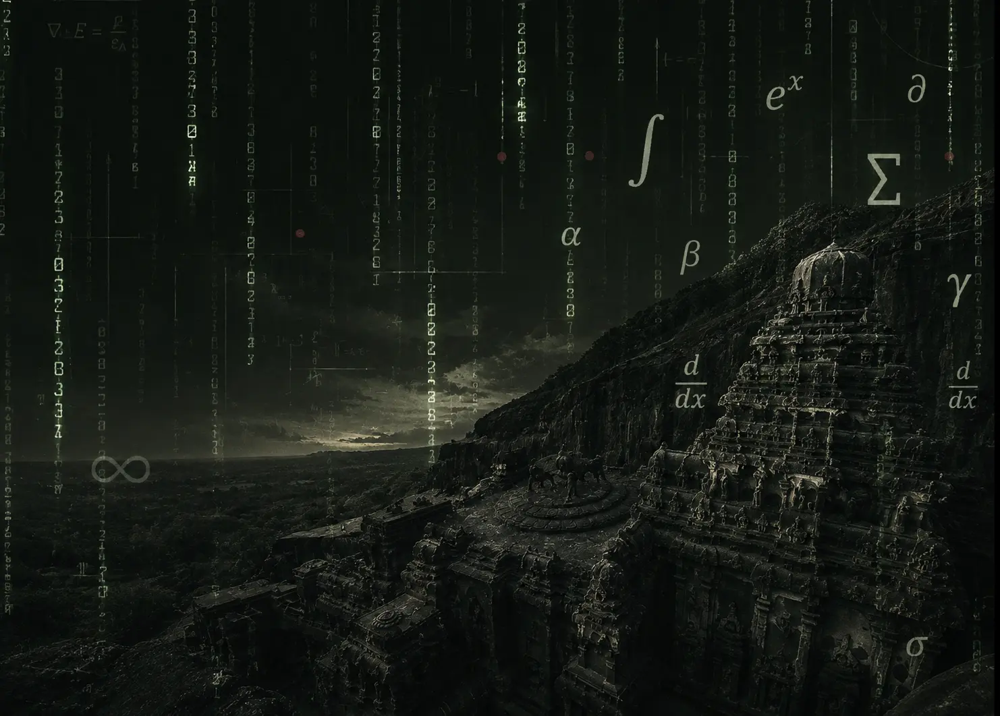
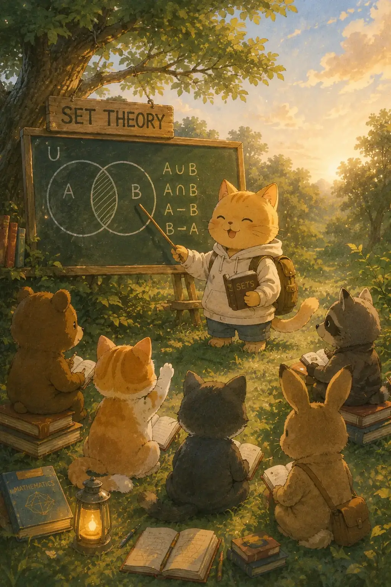
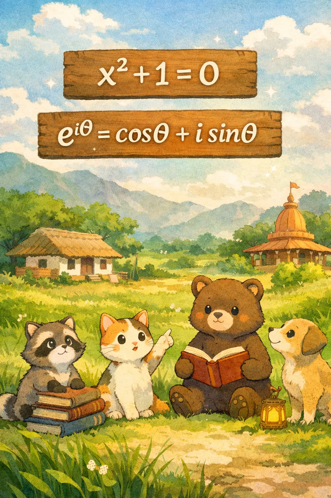
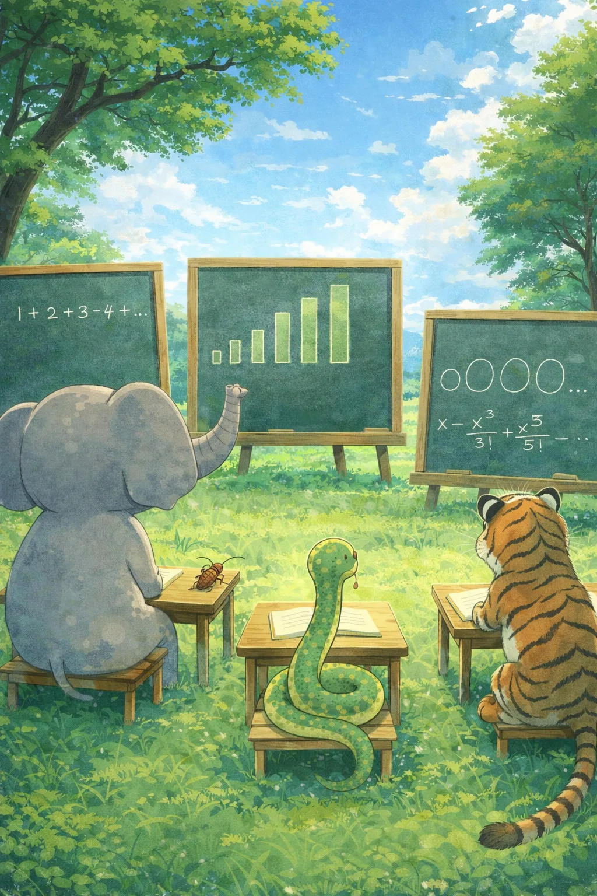

Mathematics isn't a rulebook. It's 35 stories of someone solving a real problem.
Learn Mathematics out of curiosity — not just to crack exams. Exams come and go; curiosity stays with you for life.
Explore 35 foundational topics, from Sets and Relations to Statistics. Every chapter starts with the real problem that forced someone, centuries ago, to invent the idea — long before it became a formula you're asked to memorise.
Six foundations, 35 chapters: Algebra · Trigonometry · Geometry · Differential Calculus · Integral Calculus · Data Science.
Algebra Foundations
Sets and Relations
The fish market at Keshtopur opens at six in the morning. By six fifteen, the hilsa is in one pile, the rohu in another, the pomfret in a third. Nobody told the fishmonger to do this. He just did it, because it makes sense. Separate the hilsa from the rohu. Keep the pomfret apart. Every fish belongs to exactly one pile. There is no fish that is half hilsa and half rohu. No fish that belongs to two piles at once. Every fish is either in or out. That act of sorting — that clean, unambiguous separation — is what a set is.

Okay so we do this constantly without thinking about it. The selector picking the Indian cricket team draws a line: these eleven are in, everyone else is out. The librarian sorts books: this shelf is mathematics, that shelf is literature. The hospital register: this column is patients admitted today. The bank database: this table is all account holders in Kolkata. Every act of sorting in everyday life is secretly a set operation. The moment we say these objects, and only these objects, belong together by this rule, we have defined a set.
A set has exactly one requirement: the membership rule must be completely clear. Every object either satisfies the rule or it does not. There is no middle ground, no maybe, no sort of. The set of all even numbers is a perfect set. Two is in. Four is in. Seven is out. No ambiguity at all. But here is the thing — the set of all good students in Class 9 is not a valid set. What does good mean? One teacher says Priya is good. Another teacher disagrees. Two people, two different answers. A set cannot work like that. The membership rule must give the same answer to everyone who applies it, every single time.
Now here is the part that should genuinely surprise us. For most of human history, mathematicians used collections informally. They said all the even numbers or all the points on a line without ever stopping to ask what exactly makes a collection valid. For two thousand years, nobody thought this was a problem. The mathematics still worked. Geometry worked. Algebra worked. Number theory worked. Nobody needed to define what a set was, because the informal idea was good enough for everything they wanted to do.
Then someone started asking questions about infinity. Not the vague philosophical kind of question about whether the universe goes on forever. Precise mathematical questions. Questions like: are there more whole numbers or more even numbers? At first glance the answer seems obvious — there should be more whole numbers, because even numbers are only half of them. But think again. We can pair them up perfectly: 1 with 2, 2 with 4, 3 with 6, 4 with 8, and so on forever. Every whole number gets exactly one even number, and every even number gets exactly one whole number. The two sets match up one to one, with nothing left over on either side. So in what sense does one set have more elements? This question forced mathematicians to think very carefully about what it even means for two infinite sets to be the same size.
The answer that emerged was elegant. Two sets have the same size if we can pair up their elements perfectly, with no leftovers on either side. This is called a one-to-one correspondence. The whole numbers and the even numbers can be paired up perfectly, so they have the same size — even though one is a subset of the other. This is genuinely strange. Infinity does not behave like ordinary counting, and our intuitions from counting small numbers completely break down.
But then came the real shock. What about the decimal numbers? Are there as many decimals between zero and one as there are whole numbers? We can try to list them: call the first decimal $d_1$, the second $d_2$, the third $d_3$, and so on. If such a complete list existed, the decimals and the whole numbers would have the same size. But a mathematician showed that no matter how cleverly we build our list, we can always find a decimal that is not on it. Here is the beautiful argument. Look at the first digit of $d_1$ and change it. Look at the second digit of $d_2$ and change that. Look at the third digit of $d_3$ and change it. Keep doing this forever, changing the $n$-th digit of the $n$-th number on the list. We have now built a new decimal that differs from $d_1$ in the first digit, from $d_2$ in the second digit, from every $d_n$ in the $n$-th digit. This new decimal is nowhere on our list. Our supposedly complete list is not complete at all.
This argument — called the diagonal argument — proved something astonishing. The infinity of decimals is strictly larger than the infinity of whole numbers. Not just different — larger. There are different sizes of infinity. This is not philosophy or speculation. It is a mathematical proof, watertight and irrefutable. And it shattered the comfortable assumption that infinity is just one big undifferentiated largeness.
Let me tell you a small story. Gondhorbomadan Garai once announced to his math teacher that he had found the largest possible infinity. His teacher asked him to explain. Gondhorbomadan said: take all the whole numbers, that is already infinite, now add all the decimals, that is even bigger, now add all possible sets of decimals, bigger still. At some point you must run out. His teacher said: you never run out. You can always take the set of all subsets of whatever you have, and that is provably strictly bigger every single time. Gondhorbomadan stared at the board for a long time. Then he said: this is why I prefer cricket. His teacher said: cricket also has infinity, there is no largest possible score. Gondhorbomadan put down his pen. He said nothing for the rest of the class. The moral of this story is that infinity has layers, and every time you think you have reached the top, there is another layer waiting. Alright, back to business.
So now mathematicians had this powerful and surprising theory of infinite sets. But then disaster struck. A philosopher and mathematician, thinking carefully about the very foundations of the subject, asked a deceptively simple question. Consider the collection of all collections that do not contain themselves. Does this collection contain itself? If yes, then by its own definition it should not contain itself, because it only collects things that do not contain themselves. If no, then it should contain itself, because it is precisely a collection that does not contain itself. Both answers lead to a flat contradiction. This is called Russell's Paradox. It showed that the naive idea of any collection defined by any property is automatically a valid set is completely broken. Some collections are too dangerous to be sets.
This paradox hit the mathematical world like a thunderclap. Mathematicians had been happily building on a foundation that turned out to have a crack running all the way through it. They spent the next twenty years rebuilding set theory from scratch, carefully. They wrote down explicit rules — called axioms — for what is and is not a valid set. The rules were chosen to allow all the useful sets and block the paradoxical ones. The resulting system is called axiomatic set theory. It is now the foundation on which all of modern mathematics is built. Every theorem in algebra, geometry, calculus, and anything else ultimately rests on these carefully chosen rules about sets.
Trust me on this one — set theory today is not just an abstract curiosity. It is everywhere in technology. A database is a set of records. A hospital checking which patients have both diabetes and high blood pressure is computing an intersection of sets. A search query that says find all pages about cricket written in Bengali is a set operation with two conditions. Your phone filtering contacts by city is a set operation. The abstract ideas that came from thinking carefully about infinity and paradoxes turned out to be the engine of the information age.
Now we turn to relations. Here is the thing — a relation is a completely different kind of idea from a set. A set is about membership: is this object in the collection or not? A relation is about connection: are these two objects linked to each other in some way? Think of the students in a class. We could define a relation called is taller than. Raju is taller than Priya. Priya is taller than Meena. The relation is the full list of all such ordered pairs where the first student is taller than the second. It is not a set of students. It is a set of pairs of students, connected by the height rule.
Here is an example closer to home. Take the stations on the Kolkata metro. Define a relation: station $A$ is related to station $B$ if a direct train runs from $A$ to $B$. This is a relation on the set of all stations. Some pairs are related, some are not. The relation captures the entire structure of connections in the network. Notice that direction matters — a train from Dakshineswar to Kavi Subhash does not automatically mean one runs back from Kavi Subhash to Dakshineswar in the same sense. The relation records exactly which ordered pairs are connected.
Mathematicians discovered that three special properties come up again and again. The first is reflexivity: every element is related to itself. The relation is equal to is reflexive, because every number equals itself. The relation is taller than is not reflexive, because nobody is taller than themselves. The second property is symmetry: if $a$ is related to $b$, then $b$ is related to $a$. Is a classmate of is symmetric — if Raju is Priya's classmate, then Priya is Raju's classmate. Is taller than is not symmetric. The third property is transitivity: if $a$ is related to $b$ and $b$ is related to $c$, then $a$ is related to $c$. Is taller than is transitive: if Raju is taller than Priya and Priya is taller than Meena, then Raju is taller than Meena. Is the best friend of is often not transitive: your best friend's best friend need not be your best friend.
These three properties are not just vocabulary. They are diagnostic tools. Whenever we encounter a relation, asking about these three properties tells us something deep about its structure. And when all three hold together — when a relation is reflexive and symmetric and transitive — something remarkable happens. The relation carves the entire set into neat, non-overlapping families. Every element belongs to exactly one family. Every element within a family is related to every other element in that family. Elements in different families are never related to each other. This structure is called a partition, and a relation with all three properties is called an equivalence relation.
Think of is in the same class as for students in a school. Every student is in the same class as themselves (reflexive). If Raju is in the same class as Priya, then Priya is in the same class as Raju (symmetric). If Priya and Arjun are in the same class, and Arjun and Debashis are in the same class, then all three are in the same class (transitive). This one relation partitions the entire school into classes, with no student in two classes and no two classes overlapping. That clean, inevitable partitioning is one of the most powerful organizing ideas in all of mathematics.
Here is why this matters practically. Any time we say two things are equivalent — same remainder when divided by 5, same weight, same postal code — we are using an equivalence relation. The partition that results is exactly the grouping we care about. Mathematics did not invent this idea. It just gave us the precise tools to work with it.
All of this — sets, notation, intersections, relations, the three properties, counting, and functions — is what we are going to explore together through ten real problems. We will build every idea from the ground up. We will assume nothing beyond Class 8 arithmetic. The only entry fee is curiosity and the willingness to follow a chain of reasoning one step at a time. That is it, nothing more.
Complex Numbers
Here is a question that broke mathematics for two hundred years. What is the square root of a negative number? Not in some deep philosophical sense — literally, can we find a number that, when multiplied by itself, gives us $-1$? Real numbers cannot do this. A positive times a positive is positive. A negative times a negative is also positive. No real number, however large or small, squares to a negative. The ancient answer was simple: such a number does not exist. Declare it impossible, move on, go have some chai.

The problem is that mathematics kept crashing into these impossible numbers whether it wanted to or not. Around the 1500s, mathematicians had just discovered a beautiful formula for solving cubic equations — equations with an $x^3$ in them. The formula worked perfectly for most cases. But for one particular family of cubics, the formula demanded the square root of a negative number right in the middle of the calculation. Here is the part that should blow your mind: if you bravely computed that square root anyway, called it what it was, and kept calculating, the impossible number would cancel itself out at the end. The final answer was a perfectly ordinary real number. So this number was simultaneously impossible and useful. Imagine taking a Kolkata local train that officially does not run on Sundays, and yet arriving at your destination perfectly on time. That is the vibe.
For the next hundred years, these strange numbers sat in the corner of mathematics like an embarrassing relative nobody wanted to discuss. Then something shifted. Instead of asking whether the square root of $-1$ existed, some mathematicians started asking: what if we just define it and see what happens? We call it $i$. We say, by definition, that $i^2 = -1$. Now we build a whole number system around it. Every number of the form $a + bi$, where $a$ and $b$ are ordinary real numbers, is called a complex number. And the moment we write that, something extraordinary happens: nothing breaks. Algebra still works. Addition, subtraction, multiplication, division — all still consistent. The only new rule is $i^2 = -1$. That one rule is enough.
Now here is what really cracked things open: geometry. Someone realised that $a + bi$ is not just an algebraic symbol but a point in a plane. The real part $a$ goes along the horizontal axis. The imaginary part $b$ goes along the vertical axis. This flat surface of all complex numbers is called the Argand plane, and it changes everything. A complex number is now a point, or equivalently an arrow from the origin to that point. Addition of complex numbers becomes addition of arrows, just like how walking three steps east and then four steps north lands you at a specific point — there is nothing mysterious about it.
But the real miracle is what multiplication does. If we take any complex number and multiply it by $i$, the arrow pointing to it rotates exactly $90^\circ$ counterclockwise. Not approximately. Exactly $90^\circ$. Multiplication by $i$ is the same as a quarter-turn. This connection between algebra and rotation is jaw-dropping. It means that the imaginary unit $i$, which started as a desperate workaround for an impossible square root, turns out to encode rotation in its very definition.
Once physicists and engineers got hold of this geometric picture, they realised they had been waiting for exactly this tool. Electricity alternates in waves that oscillate back and forth. Complex numbers handle oscillations naturally because their rotation property mirrors wave behaviour perfectly. Signal processing, quantum physics, the engineering inside a mobile phone tower, even the way a tram in Kolkata's Park Street gets its power from alternating current — all of this uses complex numbers at its foundations. The impossible number turned out to be the most useful invention in mathematical history. Not because anyone planned it. Because following the logic honestly, wherever it led, eventually revealed a whole world hiding behind the one we could see.
Allow me a small detour. Gondhorbomadan Garai once sat for the WBJEE exam. The question paper asked: find the value of $i^2$. Gondhorbomadan Garai thought for exactly three seconds and wrote with great confidence: the value of $i^2$ cannot be determined because $i$ does not exist. Q.E.D. After the exam, his friend pointed out that $i^2 = -1$ by definition — this is the very definition of $i$. Gondhorbomadan Garai was unimpressed. If it does not exist, he said, how can it have a value? His friend tried to explain. Gondhorbomadan Garai raised one hand and said: dost, I lost two marks trying to prove something does not exist. The old mathematicians lost two centuries. The real lesson is: the next time someone says a number does not exist, define it yourself and get on with life. And somehow that is the most correct thing Gondhorbomadan Garai has ever said in his life. Now back to business.
Over the next ten chapters, we are going to use complex numbers to crack ten actual problems. We will meet the cube roots of unity, the Argand plane, the argument of a complex number, the triangle inequality, locus conditions, Apollonius circles, and more. Every idea will be built from scratch. None of it requires any formula you have not seen before. The only entry requirement is curiosity and the willingness to follow a chain of reasoning one link at a time.
Contact me for Online Training(Improve your Speed and Accuracy)
Progressions
Imagine standing at Platform 1 of Howrah station. A local train pulls away. It gains speed steadily — the same extra push every single second. The first second it covers a small distance. The second second it covers a little more. The third second, a little more still, by the same extra amount. The distances in each second form a perfect pattern: equal steps, added one after another. This is an Arithmetic Progression, or AP. It is the most natural rhythm in mathematics, and it is everywhere once we start looking.

An AP is simply a list where every step from one number to the next is identical. Take the sequence 3, 7, 11, 15, 19. The jump from each term to the next is always 4. Or take 100, 93, 86, 79, 72. The jump is always $-7$. The fixed jump is called the common difference, written $d$. The starting number is called the first term, written $a$. With just $a$ and $d$, we can write out any AP as far as we like. The $n$th term is $a + (n-1)d$. Nothing more to it than that. The AP is honest, steady, and completely predictable.
Now consider something completely different. Not a train but a rumour spreading through a school in Keshtopur. One student knows the rumour on Monday. Each student tells exactly two others. On Tuesday, two more students know. On Wednesday, four more. On Thursday, eight. The sequence is 1, 2, 4, 8, 16, 32. Each term is double the one before. This is a Geometric Progression, or GP. Instead of adding the same amount at each step, we multiply by the same number. That multiplying factor is called the common ratio, written $r$. In a GP, multiplication is doing the work that addition did in the AP.
The difference between AP and GP is one of the deepest contrasts in all of mathematics. The AP grows linearly. The GP grows exponentially. Think of two friends in Kolkata, both starting with the same savings on the first of January. The first friend adds one thousand rupees to her savings every month. The second friend multiplies her savings by 1.1 every month. In the first few months, the first friend is comfortably ahead. But after five years, the second friend has pulled far ahead. After ten years, it is not even close. The GP starts quietly and then explodes. The AP is a steady, reliable local train. The GP is the monsoon flooding in over the city — slow to arrive, then unstoppable.
Let us stop for a short story. Gondhorbomadan Garai once visited a chit-fund office in Keshtopur. The agent offered him two investment schemes. Scheme A: the office adds five hundred rupees to his account every month for two years. Scheme B: the office doubles whatever is in his account every month for just fifteen months, starting with one rupee. Gondhorbomadan Garai did the quick calculation on Scheme A in his head. Twenty-four months at five hundred rupees each: twelve thousand rupees total. He said, Scheme A is the safe option, I will take that. His friend sitting next to him said, wait, check Scheme B. Gondhorbomadan Garai started working out Scheme B. After five months: thirty-two rupees. After ten months: over one thousand rupees. After fifteen months: over thirty-two thousand rupees — more than double Scheme A, starting from one single rupee. He stared at his paper for a long while. He quietly slid the Scheme A form back across the table. The moral: always check whether something is growing like an AP or a GP before committing. The AP looks bigger at first. The GP laughs last. Alright, back to the maths.
Sums of APs have a beautiful shortcut discovered long ago. Imagine writing the AP forwards in one row and backwards in the row below. Add the two rows term by term. Every pair of terms — one from the top row, one from the bottom — adds up to the same total: the first term plus the last term. If there are $n$ terms and the sum is $S$, then both rows together give $n \times (\text{first} + \text{last})$. That is twice $S$. So $S = n \times (\text{first} + \text{last})/2$. We can also say the sum equals $n$ times the average of the two end terms. And the average of an AP is always its middle term — the term that sits exactly between the first and last. The mathematician Brahmagupta, writing in seventh-century India, understood this idea. The pairing trick is over thirteen hundred years old and still appears in problems today.
The GP sum uses a different kind of trick. Call the sum $S = a + ar + ar^2 + \cdots + ar^{n-1}$. Multiply both sides by $r$: $rS = ar + ar^2 + \cdots + ar^n$. Now subtract the second line from the first. Almost everything cancels. We are left with $S - rS = a - ar^n$, which gives $S(1-r) = a(1 - r^n)$. Dividing both sides by $1-r$ gives $S = a(1-r^n)/(1-r)$. That is the GP sum formula. Simple, clean, and derived in three lines. Now something remarkable happens when the ratio $r$ satisfies $|r| < 1$. Each term is smaller than the one before it. The terms march towards zero. As we add more and more of them, the sum approaches a fixed limit. In the limit of infinitely many terms, $r^n$ shrinks to zero, and the sum becomes $S_\infty = a/(1-r)$. Infinitely many positive terms, adding up to a finite number. The series $1 + 1/2 + 1/4 + 1/8 + \cdots$ adds up to exactly 2. Not approximately. Exactly. This was one of the great conceptual breakthroughs in the history of mathematics, and it now belongs entirely to us.
Between the AP and the GP sits a third kind of progression called the Harmonic Progression, or HP. Three numbers $a$, $b$, $c$ are in HP when their reciprocals $1/a$, $1/b$, $1/c$ form an AP. Take the list $1, 1/2, 1/3, 1/4, 1/5$. The reciprocals are $1, 2, 3, 4, 5$ — a perfect AP with common difference 1. So the original list is an HP. The condition for $a$, $b$, $c$ to be in HP is that $2/b = 1/a + 1/c$. The HP appears in music, in optics, and in several elegant algebra problems. The harmonic mean of two numbers $a$ and $c$ is $2ac/(a+c)$. It is always less than or equal to the arithmetic mean $(a+c)/2$. And the arithmetic mean is always at least as large as the geometric mean $\sqrt{ac}$. So we always have HM $\leq$ GM $\leq$ AM. This triple inequality is one of the most used tools in competitive mathematics and it connects all three progressions together in one elegant chain.
There is a deep reason why APs, GPs, and HPs keep appearing in physics and engineering. The AP models linear change: distance at constant speed, simple interest, equal instalments. The GP models multiplicative change: compound interest, population growth, radioactive decay. The HP models rates and reciprocals: the lens formula in optics uses the HP, the resistance formula for parallel circuits uses it, and the time-average of a periodic quantity often yields a harmonic mean. These are not three separate topics. They are three facets of the same big idea: how numbers change when we apply the same operation repeatedly.
Here is what makes progressions beautiful as a mathematics topic. The questions look very different on the surface — some involve cubes, some involve trigonometry, some involve complex numbers. But almost all of them have an AP or a GP hiding underneath. The skill is to recognise the pattern. Once we see it, the rest is just applying clean tools. And every clean tool we need can be derived from scratch using nothing beyond what a Class 8 student already knows.
We are not going to memorise formulas. We are going to understand them. There is a real difference. A student who has memorised the AP sum formula and encounters an unusual problem is stuck. A student who understands the pairing trick can re-derive the formula in twenty seconds and then adapt it to whatever form the problem presents. Understanding is the real weapon. Formulas are just the footprints it leaves behind.
One last thought before we begin. Mathematical progressions were studied seriously in ancient India. Brahmagupta wrote about AP sums in 628 CE. Aryabhata, writing even earlier in 499 CE, included summation formulas in his Aryabhatiya. The ideas in this storybook have roots that go back fifteen hundred years in Indian intellectual history. We are not starting from zero. We are picking up a thread that Indian mathematicians laid down a very long time ago. Let us do justice to it.
Contact me for Online Training(Improve your Speed and Accuracy)
Quadratic Equations
Imagine a cricket ball flying through the air above Eden Gardens. A batsman sends it soaring. The ball rises, reaches a maximum height somewhere above the boundary, and then comes back down. If we call the time elapsed $t$ seconds, the height of the ball at each moment can be written as an expression of the form $-5t^2 + 20t + 2$, or something similar depending on the speed and angle. The key feature is the $t^2$ term. The height is described by a second-degree expression in $t$, and that second-degree expression is called a quadratic. This simple observation — that height follows a curved, symmetric path that goes up and comes back down — is the physical heart of quadratic equations. Everything else in this storybook is a consequence of understanding that shape more carefully.
A quadratic equation has the standard form $ax^2 + bx + c = 0$, where $a$, $b$, and $c$ are fixed numbers and $a \neq 0$. The number $a$ is called the leading coefficient, $b$ is the coefficient of $x$, and $c$ is the constant term. If $a$ were zero, there would be no $x^2$ term, and we would have a linear equation instead of a quadratic. The condition $a \neq 0$ is therefore not just a technicality — it is what makes the equation quadratic in the first place. The solutions to a quadratic equation, meaning the values of $x$ that make the equation equal zero, are called the roots. A quadratic always has exactly two roots, though sometimes both roots are equal, and sometimes both roots are complex numbers rather than real numbers.
The word quadratic itself comes from the Latin word quadratus, meaning square. This is not a coincidence at all. If we have a plot of land in Keshtopur with one side of length $x$ and the other side of length $x + 3$, the area of that plot is $x(x+3) = x^2 + 3x$. Area naturally involves squaring, and squaring naturally leads to quadratic expressions. The ancient mathematicians who first studied quadratic equations were mostly solving problems about land, area, and architecture. The equation arose from the physical world before it ever became an abstract object of study.
The history of quadratic equations in India is one we should know. The mathematician Brahmagupta, writing in 628 CE from Kusumapura near modern-day Patna, stated clear rules for solving equations of the second degree. He is among the earliest mathematicians in any recorded tradition to handle both positive and negative roots systematically. His text, the Brahmasphutasiddhanta, contains what we would today recognise as rules for quadratics, all written in verse, centuries before algebra was formalised elsewhere in the world. The ideas we are studying in this storybook have roots that are more than fourteen hundred years old and they are Indian roots.
Some centuries after Brahmagupta, another Indian mathematician named Sridharacharya stated the rule for solving quadratic equations of the form $ax^2 + bx = c$ in explicit step-by-step terms. The formula we today call the quadratic formula — which gives us $x = (-b \pm \sqrt{b^2-4ac})/(2a)$ — is sometimes called Sridharacharya's formula in Indian textbooks, as a tribute to this contribution. The formula looks complicated at first sight, but it is built on a very simple idea called completing the square, and we will see what that idea means in just a moment. For now, the point is that the people who developed this formula were Indian, they lived over a thousand years ago, and the formula they found is still the tool every student in the world reaches for when solving a quadratic.
Here is the completing the square idea, described without algebra. Take the quadratic $x^2 + 6x = 7$. The left side almost forms a perfect square. Think of a square with side $x$, giving area $x^2$. Attach a rectangle of width 3 to two sides of this square, adding area $6x$ in total. Now the shape is an L-shape, not a complete square. To complete it into a full square of side $(x+3)$, we need to fill in the corner with a small square of side 3 and area 9. Adding 9 to both sides gives $(x+3)^2 = 16$. Taking the square root: $x + 3 = \pm 4$, so $x = 1$ or $x = -7$. That is completing the square. The quadratic formula is just this same trick applied to the completely general equation $ax^2 + bx + c = 0$, done once and packaged into a single expression that works for any values of $a$, $b$, and $c$. The formula is a shortcut that saves us from repeating the completing-the-square process every single time.
Inside the quadratic formula lives a number that deserves a name of its own: the expression $b^2 - 4ac$ under the square root. It is called the discriminant. The discriminant is the single most informative number we can compute from a quadratic equation, because it tells us the nature of the roots before we even solve anything. If the discriminant is positive, the square root is a real number and the quadratic has two distinct real roots. If the discriminant is zero, the square root is zero, both roots are equal, and we say the quadratic has one repeated root. If the discriminant is negative, the square root would be the square root of a negative number, which is not a real number at all — and in that case the quadratic has no real roots. Three cases, one number, complete information. This is the kind of efficiency that makes mathematics beautiful.
Figure — The parabola $y = (x-r_1)(x-r_2)$ crosses the $x$-axis at the two roots. The vertex sits exactly halfway between them, at $x = (r_1+r_2)/2$. When the discriminant is positive, there are two crossing points. When it is zero, the vertex touches the axis. When negative, the parabola never reaches the axis at all.
What happens when the discriminant is negative? We need the square root of a negative number. A new kind of number called an imaginary number, written $i$, is defined by the single property $i^2 = -1$. With this, $\sqrt{-4} = 2i$ and $\sqrt{-9} = 3i$ and so on. Numbers that combine a real part and an imaginary part, like $3 + 2i$ or $5 - 4i$, are called complex numbers. When a quadratic has a negative discriminant, its two roots are complex numbers. They are not on the usual number line, but they are perfectly well-defined mathematical objects. The story of complex numbers — which is a whole storybook of its own — begins right here, inside the quadratic formula, the moment we ask what happens when the discriminant dips below zero.
The equation $ax^2 + bx + c = 0$ has an equivalent geometric form: the curve $y = ax^2 + bx + c$ is called a parabola. If $a > 0$, the parabola opens upward like a bowl. If $a < 0$, it opens downward like an inverted bowl. The roots of the equation are the x-coordinates of the points where the parabola crosses the x-axis — the points where $y = 0$. When the discriminant is positive, the parabola cuts the x-axis at two points. When it is zero, the parabola just touches the axis at one point and bounces back. When the discriminant is negative, the parabola either floats entirely above the axis or sits entirely below it, and never crosses. The algebra and the geometry are two different languages describing the same object. Learning to move fluently between them is one of the great skills in quadratic equations.
Here is something remarkable about quadratics. If we know the two roots of $ax^2 + bx + c = 0$, call them $r_1$ and $r_2$, then without doing any calculation we can immediately write down two facts: their sum is $r_1 + r_2 = -b/a$ and their product is $r_1 \cdot r_2 = c/a$. These are called Vieta's formulas, and they follow directly from the fact that $ax^2 + bx + c = a(x-r_1)(x-r_2)$, which we can expand and compare term by term. What this means is that the coefficients of the quadratic are secretly encoding the sum and product of the roots. We can often solve very complex problems by working only with these two quantities, without ever needing the roots individually.
The sum and product of roots also tell us about the geometry of the parabola. The vertex of the parabola $y = ax^2 + bx + c$ sits at $x = -b/(2a)$, which is exactly half the sum of the roots $-b/a$. In other words, the vertex is always at the midpoint between the two roots on the x-axis. This is obvious visually: a parabola is perfectly symmetric about its axis, so the axis must split the two roots equally. The vertex is the turning point — the maximum of a downward parabola or the minimum of an upward one. Knowing that the vertex lies at $x = (r_1 + r_2)/2$ means that Vieta's sum formula immediately tells us the x-coordinate of the vertex. The algebra and the geometry keep talking to each other in this way throughout the subject.
There is another way to look at the factored form of a quadratic that deepens our understanding of Vieta's. We know that $ax^2 + bx + c = a(x - r_1)(x - r_2)$. If we expand the right side completely: $a(x^2 - (r_1+r_2)x + r_1 r_2)$. Distributing the $a$: $ax^2 - a(r_1+r_2)x + a r_1 r_2$. Comparing with $ax^2 + bx + c$ term by term, we read off $b = -a(r_1+r_2)$ and $c = a r_1 r_2$. This expansion is the proof of Vieta's formulas in four lines of algebra. The point is that the factored form makes everything visible at once: the roots, their sum, their product, and the entire structure of the quadratic. When a problem gives us a quadratic and asks about its roots, the first instinct should always be to write down the sum and product using Vieta's, before reaching for anything else.
Quadratics appear everywhere in the real world, and not just in cricket balls and parabolic arches. The profit of a small business as a function of units produced is often quadratic: there is a sweet spot for maximum profit, and going too far beyond it starts eating into margins. The lens formula in optics, which connects object distance, image distance, and focal length, has a quadratic relationship hidden inside it. The time it takes a train on the Kolkata metro to travel between two stations with constant acceleration and deceleration follows a quadratic model. When a tailor in New Market wants to maximise the area of a rectangular piece of cloth from a fixed perimeter of thread, the resulting optimisation is a quadratic. Quadratics are the mathematics of things that change at a changing rate — and most interesting things in the world change at a changing rate.
Let us take a short break from history and geometry. Can we tell a small story? Gondhorbomadan Garai was sitting in a Class 11 exam on quadratic equations. The question asked him to find the roots of $x^2 - 7x + 12 = 0$. He computed the discriminant correctly: $b^2 - 4ac = 49 - 48 = 1$. He then applied the formula to get roots $(7 \pm 1)/2$, giving $x = 4$ and $x = 3$. He verified $x = 4$: $16 - 28 + 12 = 0$. Correct. He then stared at his work and wrote in his answer sheet: discriminant is 1, which is close to zero, so the equation has approximately one root. He crossed out $x = 3$ and submitted only $x = 4$. The examiner marked his final answer wrong and gave him half marks. Gondhorbomadan Garai filed a complaint arguing that since $\sqrt{1} = 1$ is very small, the two roots 3 and 4 are so close together they are practically the same root. His appeal was rejected. The moral of the story: the discriminant being positive means two distinct real roots always, no matter how small the discriminant is, unless it is exactly zero. Proximity to zero counts for nothing. Alright, back to the mathematics.
The IIT-JEE has tested quadratic equations in almost every year of its existence. The questions are rarely straightforward solve-the-equation problems. They combine quadratics with other topics: arithmetic progressions, geometric progressions, trigonometric identities, polynomial algebra, and inequalities. The beauty is that the same two or three core ideas — Vieta's formulas, the discriminant, and the geometry of the parabola — reappear in different disguises across all of these questions. Once we understand these core tools deeply, we have the power to tackle almost any quadratic question IIT throws at us. The problems look different on the surface but they have the same bones underneath.
Here is something important to understand about how we will approach this storybook. We are not going to memorise formulas. We are going to understand them. There is a real difference. A student who has memorised the quadratic formula but does not know what completing the square is will be helpless when IIT asks a question about the structure of the formula, not just its application. A student who understands where the formula comes from can reconstruct it in thirty seconds and can also see why it must take the form it does. Understanding is the real weapon. Formulas are just the footprints it leaves behind.
We should also appreciate what makes quadratic equations a beautiful topic in their own right, beyond the exam. A polynomial of degree two is the simplest polynomial that can have two roots. It is the simplest polynomial whose graph has a turning point. It is the simplest polynomial that can fail to have real roots. All of these behaviours — multiple roots, turning points, complex roots — first appear in the quadratic, and understanding them here gives us a foundation for understanding polynomials of all degrees. The quadratic is not just a topic. It is a prototype for all of polynomial algebra.
One last thought before we begin. The problems in this storybook are real IIT-JEE questions from past years. Each one looked hard to the students who faced it in the exam hall. But every single one of them, once broken down into its component ideas, requires only tools that are individually simple. What makes the problems feel hard is seeing different topics combined in one place: quadratics and triangles, quadratics and progressions, quadratics and complex numbers. The IIT-JEE is testing whether we can see the connections between topics. Once we see those connections, the problems dissolve. So our task in this storybook is not just to learn quadratic equations. It is to learn how quadratic equations talk to the rest of mathematics. And we have everything we need to do that, right now.
Contact me for Online Training(Improve your Speed and Accuracy)
Logarithms
Imagine we are a ship captain in the year 1600, somewhere in the middle of the Atlantic ocean. We need to figure out exactly where we are. To do that, we need to multiply and divide enormous numbers — eight digits, ten digits, numbers so large that a single multiplication could take an hour of careful arithmetic. Mistakes crept in constantly. When a mistake crept in, the ship went to the wrong place. And when the ship went to the wrong place in the open ocean, people died. This was the state of navigation for centuries: slow, error-prone, and fatal.
Then in 1614, a Scottish mathematician published a small book called Mirifici Logarithmorum Canonis Descriptio — which means, roughly, “A Description of the Marvellous Rule of Logarithms.” It took him twenty years to compute the tables inside it, by hand, one number at a time. And when sailors, astronomers, and engineers got their hands on those tables, the entire field of applied mathematics changed almost overnight.
Here is what logarithms do: they turn multiplication into addition. This sounds like a small trick. It is not a small trick. Addition is fast and reliable. Multiplication of large numbers is slow and error-prone. If we can convert every multiplication into an addition, we have cut the time for each calculation by something like 90 percent. A French mathematician later said that logarithms had “doubled the life of astronomers” by halving their calculation time. The inventor of logarithms did not just invent a mathematical tool. He invented a time machine for human effort.
How does it work? The core idea is this: if $b^k = x$, then $\log_b x = k$. That is the entire definition. The logarithm is just the exponent. If $10^3 = 1000$, then $\log_{10} 1000 = 3$. If $2^5 = 32$, then $\log_2 32 = 5$. If $10^{0.3010} = 2$, then $\log_{10} 2 = 0.3010$. In every case, the logarithm is asking: what power of the base gives us this number?
Now we can see why multiplication becomes addition. Suppose we want to multiply $A$ and $B$. We write $A = 10^{\log A}$ and $B = 10^{\log B}$. Then $A \times B = 10^{\log A} \times 10^{\log B} = 10^{\log A + \log B}$. So $\log(AB) = \log A + \log B$. Multiplication becomes addition of the exponents. This is the product rule of logarithms, and it follows directly from the laws of exponents — there is nothing to memorise. We just use the exponent law $a^m \cdot a^n = a^{m+n}$.
Similarly, division becomes subtraction: $\log(A/B) = \log A - \log B$. And raising to a power becomes multiplication: $\log(A^n) = n\log A$. These three rules, product, quotient, and power, are all just the three exponent laws in logarithmic disguise.
The base we most commonly use is 10. The logarithm in base 10 is called the common logarithm. When mathematicians write just $\log$ without a base, they usually mean base 10 in the context of this book. There is also the natural logarithm with base $e \approx 2.718$, which appears in calculus and physics everywhere. And the binary logarithm with base 2, which appears in computer science. The specific base matters less than the concept: all of them are asking the same question — what exponent of the base gives us this number?
Let us build one more tool before we go to the problems. The change-of-base formula. If we want to compute $\log_b a$ but our calculator only knows base 10, we write: $$\log_b a = \frac{\log_{10} a}{\log_{10} b}.$$
This follows from the definition. If $\log_b a = k$, then $b^k = a$. Taking $\log_{10}$ of both sides: $k\log_{10} b = \log_{10} a$, so $k = \log_{10} a / \log_{10} b$. Clean and simple. One formula, any base.
Now here is something about the structure of a logarithm. For $\log_{10} x$ where $x > 0$, the value is some real number, possibly not an integer. For example, $\log_{10} 32 = \log_{10}(2^5) = 5\log_{10}2 \approx 5 \times 0.301 = 1.505$. The integer part of this is called the characteristic and the positive fractional part is called the mantissa. So the characteristic of $\log_{10} 32$ is 1 and the mantissa is 0.505. This vocabulary comes up in some IIT problems. The characteristic of $\log_{10} x$ tells us roughly how many digits $x$ has: if the characteristic is $n$, then $x$ has $n+1$ digits.
The graph shows the shape of $y = \log_{10} x$. It passes through $(1, 0)$ because any base to the zeroth power is 1. It grows slowly for large $x$: doubling $x$ only adds about $0.301$ to the log. It goes to $-\infty$ as $x \to 0^+$. This slow growth is exactly what makes logarithms useful: an enormous range of values gets compressed into a small range by the logarithm.
Now let us talk about where logarithms live in the real world. The Richter scale for earthquakes is logarithmic — a magnitude 7 quake releases about 32 times more energy than a magnitude 6. The decibel scale for sound is logarithmic — 80 decibels is ten thousand times louder than 40 decibels. The pH scale for acidity is logarithmic — stomach acid at pH 1 is a million times more acidic than water at pH 7. And compound interest uses logarithms — money doubles in time proportional to $\ln 2 / r$ where $r$ is the interest rate. We are surrounded by logarithms whether we know it or not.
Now can we tell you a short story? Gondhorbomadan Garai once appeared in a Class 9 exam. The question said: simplify $\log(1 + 1 + 1)$. Gondhorbomadan Garai wrote his answer: $\log 1 + \log 1 + \log 1 = 0 + 0 + 0 = 0$. The correct answer was $\log 3$. Gondhorbomadan Garai had confused $\log(a + b + c)$ with $\log a + \log b + \log c$. The product rule says $\log(abc) = \log a + \log b + \log c$. There is no such rule for the sum: $\log(a + b + c)$ is just what it is and cannot be simplified further. His teacher returned the paper with a single comment: “Dear Gondhorbomadan Garai, your answer was wrong in three different ways simultaneously. This is genuinely impressive.” Gondhorbomadan Garai framed the comment and hung it on his wall. He said it was his first certificate of distinction. Back to the mathematics.
There is one more important thing to understand before the problems. In the IIT-JEE, logarithm problems almost always test one of three things. Firstly, simplifying a complicated logarithmic expression by applying the product, quotient, and power rules step by step. Secondly, converting an exponential equation into a logarithmic one by taking logs. Thirdly, using algebraic identities after substituting log expressions for variables. The problem looks complicated, but underneath it is always one of these three structures. Our job in this storybook is to see through the disguise.
What makes logarithm problems exciting is the unexpected elegance of the answers. A tangled expression full of nested logarithms collapses to a single integer. A product of twenty terms reduces to a fraction. The sum of three complicated quantities is exactly 1. Every time this happens it feels like a magic trick — and the trick is always the same. We applied the right rule at the right moment, and the expression simplified itself. That is the beauty of a well-designed mathematical tool.
Let us also appreciate what the inventor of logarithms gave the world. He was not a professional mathematician in the modern sense. He was a landowner with an intense interest in astronomy. He spent twenty years of his life computing logarithm tables by hand because he believed it would help other people work more efficiently. He was right. Within a year of publication, astronomers were using his tables to do calculations that would have taken them years otherwise. He died a few years after publication, not knowing the full impact of his work. But the impact was enormous and lasting.
Today, of course, we have calculators and computers that compute logarithms in milliseconds. But the concept is more important than ever. Every neural network in artificial intelligence uses logarithms in its loss function. Every compression algorithm in our phone uses logarithms. The internet itself runs on algorithms that rely on logarithmic time complexity. The tool invented four centuries ago to help sailors navigate the ocean now helps our phones navigate the internet. Some inventions never age.
And ten chapters from now, we will have ten IIT-JEE problems under our belt, each one a different facet of this remarkable concept. The problems look hard. But each one, once we have the right weapons, is just a clean sequence of simple steps. That is the message of this entire book. Every hard problem is a collection of easy ideas. We just need to know which easy ideas to reach for. Let us find out.
Contact me for Online Training(Improve your Speed and Accuracy)
Miscellaneous Equations
Imagine we are at a Kolkata street market and someone hands us an equation. It is not a simple linear equation like $3x + 5 = 11$. It is not a familiar quadratic. It has variables in the exponent, or it has the integer part and fractional part of a number entangled together, or it has four unknowns with powers like $u^3$, $v^2$, $w$, and $x^4$ all mixed in one system. Our first reaction is: this is impossible. Our second reaction, once we find the key, is: how did anyone think of that?
That gap between impossible and obvious is what this storybook is about. Every problem in this book looked impossible to someone once. And then that someone found the right angle of attack, and suddenly the whole thing collapsed into a clean answer. The angle of attack is the lesson. The answer is just the reward.
So what are miscellaneous equations? They are equations that do not belong to a single neat family. A quadratic equation belongs to a family with a formula. A linear system has a method. A simple exponential equation has a logarithm waiting to solve it. But a miscellaneous equation refuses to be pigeon-holed. It might involve floor functions alongside polynomials. It might mix exponentials and products in a way that no single standard method can handle. The examiner in IIT-JEE includes these problems specifically to test whether a student can think beyond the standard toolkit.
Here is the honest truth: there is no universal formula for miscellaneous equations. There cannot be. Each problem is its own creature. But here is the other honest truth: once we study enough of them, we start to see patterns. Not every problem is completely new. Most of them belong to one of a small number of idea families. And those idea families are what we will call our weapons.
The first weapon is symmetry. This is the most elegant idea in all of mathematics. When an equation or a system has a repeating structure, when changing the roles of $x$, $y$, and $z$ leaves the form of the equations unchanged, that rhythm is telling us something. It is saying: the solution also has a symmetric form. We do not need to solve for $x$, $y$, $z$ separately. We solve for one and get the rest for free. Symmetry is like a secret door that opens the whole room.
Consider the Kolkata tram network. The tram goes in a loop. Every station is equally important, equally connected, and equally reachable. If we know how to get from Shyambazar to Shyaldah, we also know how to get from Shyaldah to Dharamtala, because the structure repeats. Cyclic symmetry in equations works exactly the same way. The first variable tells us about the second, the second about the third, and the third about the first. Once we identify that rhythm, the solution writes itself.
Sometimes the symmetry is in the exponents. Both equations share the structure $(xy)^{x+y}$ when we multiply them together. Sometimes the symmetry is in the coefficients: the same pattern of signs repeats across a system of four equations. The skill we develop is spotting these patterns before we do any computation. The pattern is the map. Computation is just following the map.
The second weapon is substitution. This is perhaps the most powerful trick in all of problem-solving, not just mathematics. When something looks complicated, we give it a new name. We rename $u^3$ as $A$, $v^2$ as $B$, $w$ as $C$, and $x^4$ as $D$. Suddenly our system, which looked like a nightmare of mixed powers, becomes a simple linear system in $A$, $B$, $C$, $D$. Something a Class 5 student could solve.
Think of it like this. A Kolkata fish market vendor has a system of selling packets. Each packet costs different amounts depending on what is inside. But the vendor does not calculate the contents of each packet every time. She calculates the price of the packet as a whole. We are doing the same thing when we substitute $u^3 = A$. We are treating the whole thing as one unit and pricing it correctly. Once we have the prices, we work backwards to find the contents.
Substitution works even in more subtle ways. When we see $[x] = k$ (the integer part of $x$), we are substituting the messy real number $x$ with a clean integer $k$ plus a controlled fractional part. The substitution turns a problem about a real number into a problem about an integer, which is much easier to handle case by case. Good substitution is the art of choosing what to rename so that the renamed system is simpler. There is no formula for choosing the right substitution. But there are heuristics. Look for the ugliest part of the expression and ask: what would make this simpler?
The third weapon is constraints. This might be the most surprising idea in this book. We are used to solving equations by finding what $x$ is. But sometimes an equation does not tell us what $x$ is. It tells us what $x$ cannot be. And that is enough. The constraint $(x - y)^2 \geq 0$ looks trivial. Every square is non-negative, we all know that. But combined with a specific equation that forces $(x-y)^2 \leq 0$, the constraint pins down $x = y$ without any further work. We have solved a problem not by computation but by logic.
Constraints also come from definitions. The fractional part of $x$, written $\{x\}$, is always between 0 (inclusive) and 1 (exclusive). That is the definition. If an equation forces $\{x\}$ outside this range, the corresponding value of the parameter is inadmissible. We eliminate it. The definition itself is our constraint. We did not need extra information from outside the problem. Everything we needed was in the definition.
In real life, constraints work the same way. A train on the Howrah line cannot be in two stations at once. That constraint alone rules out infinitely many logical possibilities. A person cannot own negative money (at least not without a bank involved). That constraint alone rules out many wrong answers in financial calculations. Constraints are the invisible rules that make problems solvable even when equations are insufficient.
Can we tell a short story? Gondhorbomadan Garai was appearing in a Class 9 test. The question asked: find all real values of $x$ such that $x^2 = -4$. He stared at it, thought hard, and then wrote with great confidence: $x = 2$ or $x = -2$. His teacher returned the paper with one comment: “a square can never be negative.” Gondhorbomadan Garai was shocked. He said: but $4$ is so close to $-4$. She said: closeness is not equality. He sat down and wrote in his notebook: “a square is always non-negative.” He underlined it three times. Alright, let us return to our equations.
The three weapons — symmetry, substitution, constraints — will appear in every problem in this storybook. Sometimes one weapon is enough. Sometimes all three are needed, each unlocking a door that leads to the next. The art is knowing which weapon to pick first.
Here is a useful way to think about what the IIT-JEE examiner is doing. She is not trying to confuse us. She is testing a very specific skill: can we look at something unfamiliar and find the structure underneath? Every problem in IIT-JEE is designed to be solvable within the syllabus. This is a promise the examiner makes. If a problem looks impossible, we are missing a pattern. There is always a pattern. The examiner put it there on purpose.
This is actually a very reassuring thought. The examiner is not our enemy. She is our collaborator in a puzzle. She hides the structure and we find it. When we find it, the problem collapses to something we could have solved in Class 6. The gap between impossible and obvious is just the time it takes to find the structure. And that time decreases with practise.
Mathematicians across centuries have puzzled over exactly these kinds of equations. A scholar in Patna in the twelfth century worked out rules for dealing with integer and fractional parts of numbers. Mathematicians studying mechanics noticed that adding equations cleverly could eliminate variables even when the system was highly coupled. Teachers preparing students for competitive exams discovered that some expressions look transcendental but become algebraic once multiplied. These were not obvious insights at the time. They became obvious only after being written down and studied.
We are the beneficiaries of this accumulated wisdom. Every weapon in this book was discovered by someone who was as confused as we are right now. They sat with a hard problem, tried things that did not work, and eventually found the angle. We are learning their angles. And that is not cheating. That is education.
Let us also talk about the feeling of working a miscellaneous problem correctly. There is a moment, usually after one or two moves, when the fog lifts. We tried one substitution, or we noticed one symmetry, or we used one constraint, and suddenly the whole system snaps into focus. Every variable can be found. The answer is clean. That moment, when the fog lifts, is one of the best feelings in mathematics. It is worth working for.
Some problems in this book will not give us that moment immediately. We will have to grope in the dark for a while. That is fine. That is the process. The key is not to panic when the first move is not obvious. Most problems become easier after we write down what we know, simplify what we can, and look for any kind of structure. The structure is always there. We just have to earn the right to see it.
One more thing before we begin. In this storybook, we will verify every computation before writing it down. When an equation has two possible answers from a quadratic formula, we will check both against the original equation. When a system has multiple cases from a case analysis, we will check each case for consistency. Verification is not optional. It is part of the solution. The method we use to solve an equation sometimes introduces extra roots that were never in the original problem. We have to eject those impostors by checking.
Ten problems. Three weapons. One storybook. Let us begin.
Contact me for Online Training(Improve your Speed and Accuracy)
Mathematical Induction
Here is a short story. Gondhorbomadan Garai read that dominoes fall in sequence if we push the first one and each domino knocks over the next. He decided to test mathematical induction on his own life. He said: I proved I can wake up at 6 AM once. Therefore, by induction, I will wake up at 6 AM every morning forever. His mother said: that is not how induction works. The inductive step requires us to show that waking up one morning actually causes waking up the next morning. Gondhorbomadan Garai said: but I had the base case. His mother said: the inductive step is where the proof lives, not in the base case. He nodded slowly and set his alarm. It was a long wait. Enough of Gondhorbomadan Garai's alarm clocks. The dominoes are lined up. Let us push the first one.
Mathematical induction is a method of proof. It is used to prove statements that are claimed to be true for every natural number. The natural numbers are 1, 2, 3, 4, and so on, going forever. The key difficulty is that there are infinitely many of them. We cannot check each one individually. We need a smarter strategy.
Here is the central idea. Suppose we want to prove that some statement $P(n)$ is true for every natural number $n$. We cannot check infinitely many cases. But we can do two things. First, we can check that $P(1)$ is true. This is the base case — the first domino standing. Second, we can prove that if $P(k)$ is true for some particular $k$, then $P(k+1)$ must also be true. This is the inductive step — the rule that says each domino knocks the next one over.
If both steps are established, then every natural number is covered. The base case covers $n=1$. The inductive step applied once gives $n=2$. Applied again, $n=3$. Applied again, $n=4$. The argument propagates like a chain reaction. Two finite steps establish infinitely many cases. This is what makes induction so powerful — and so surprising the first time we see it.
The name “mathematical induction” was coined by Augustus De Morgan in the 1830s. De Morgan was a British mathematician who worked on logic and the foundations of algebra. He noticed that mathematicians had been using this style of reasoning for centuries without giving it a precise name or a formal framework. Euclid used something like it in ancient Greece when arguing about properties of integers. Blaise Pascal used it in the seventeenth century when studying his famous triangle. Jakob Bernoulli used it for inequalities. But none of them had written it down as a clean, general method. De Morgan did.
The word “induction” is borrowed from logic and philosophy. In ordinary language, induction means drawing a general conclusion from specific examples. A scientist observes that the sun has risen every morning and concludes it will rise tomorrow. But mathematical induction is different. It is not guessing from examples. It is a complete, watertight proof. We are not saying: it worked for 1, 2, 3, 4, so it probably works for all $n$. We are saying: it works for 1, and if it ever works for $k$, it must work for $k+1$. The logic is airtight.
The distinction between induction and mere pattern-checking is one of the most important lessons in mathematics. Checking many cases and noticing a pattern is a useful first step. It helps us guess what might be true. But it is never a proof. A statement can hold for the first thousand natural numbers and fail at the thousand-and-first. History is full of such examples in number theory. Pattern-checking builds intuition. Proof builds certainty. Induction is the bridge from intuition to certainty, done correctly.
To understand why the inductive step matters so much, consider this analogy. Imagine a staircase with infinitely many steps. We want to show we can reach every step. First, we show we can reach step 1. Second, we show that if we can reach step $k$, then we can always reach step $k+1$ from there. Conclusion: we can reach every step. The argument is clean because the connection from step $k$ to step $k+1$ is universal — it works regardless of what specific number $k$ is. That universality is the heart of the method.
Now let us talk about what the inductive step requires. We assume $P(k)$ is true for some particular but unspecified $k$. This assumption is called the induction hypothesis. We then try to prove $P(k+1)$ using that assumption plus whatever other facts we know. The induction hypothesis is a gift we give ourselves at the start of the inductive step. We get to assume $P(k)$ for free. Our job is to use that assumption to prove $P(k+1)$.
This is the part that students sometimes find confusing. Are we not assuming what we want to prove? The answer is no. We are not assuming $P(k+1)$. We are assuming $P(k)$ — the previous case — and deducing $P(k+1)$ from it. The assumption and the conclusion are different statements. The logic is: if $P(k)$ is true, then $P(k+1)$ must follow. Combined with $P(1)$ being verified directly, the chain is complete.
There are two common mistakes in induction proofs. The first is missing or bungling the base case. The base case is not just a formality. If we skip it, or verify it incorrectly, the whole proof falls apart. Imagine proving that if step $k$ is reachable then step $k+1$ is reachable, but never verifying we can reach step 1. We have proved nothing about actually reaching any step. The base case is the anchor.
The second common mistake is assuming the inductive step is automatic. It is not. The inductive step requires genuine work. We must actually prove that $P(k)$ implies $P(k+1)$. Simply stating that it seems reasonable is not sufficient. The proof must be airtight. No hand-waving. No appeals to intuition alone. In each of the ten problems in this storybook, the inductive step requires real algebra or logic or calculus. That is where the mathematical content lives.
A third subtlety is worth knowing. The base case does not have to be $n=1$. Sometimes a statement is only true for $n \geq 5$, for example. In that case, the base case is $n=5$ and the inductive step shows: if it is true for some $k \geq 5$, then it is true for $k+1$. The conclusion is that the statement holds for all $n \geq 5$. We will see this in our chapter on inequalities.
There is also a variation called strong induction. In regular induction, we assume $P(k)$ is true and prove $P(k+1)$. In strong induction, we assume $P(1), P(2), \ldots, P(k)$ are all true and use any or all of them to prove $P(k+1)$. Strong induction is logically equivalent to regular induction but is more convenient in certain situations, particularly with sequences defined by multiple previous terms. We will not need it in this storybook, but it is good to know it exists.
Mathematical induction shows up across every branch of mathematics. In number theory, it proves divisibility results and properties of prime numbers. In combinatorics, it proves counting formulas like the number of subsets of a set. In calculus, it proves derivative formulas for powers and products of functions. In linear algebra, it proves properties of matrices and determinants. In trigonometry, it proves sum formulas for sines and cosines. The method is universal. Only the algebra changes.
One reason induction is so important in IIT-JEE preparation is that it teaches a style of mathematical thinking that applies everywhere. Every time we see a formula involving $n$, we should ask: can this be proved by induction? Often the answer is yes. The structure of the proof is always the same. We establish the base case, write the induction hypothesis, and prove the inductive step. What varies is the specific calculation needed to complete the inductive step. Learning to perform that calculation across different domains is the core skill this storybook develops.
It is also worth understanding where induction gets its power. The key is the universal scope of the inductive step. When we prove that $P(k)$ implies $P(k+1)$ for an arbitrary $k$, we are proving it for all possible values of $k$ at once. We do not need to run the step separately for $k=1$, then $k=2$, then $k=3$. One proof covers all of them. This is why two finite steps — base case and inductive step — are enough to handle infinitely many cases. It is genuinely remarkable.
Some students wonder why we need induction when we could just compute the answer directly. For simple cases, direct computation is fine. But for statements about all natural numbers, direct computation is impossible — we cannot do infinitely many computations. Induction gives us a finite, rigorous argument that covers the infinite case. This is exactly the kind of mathematical thinking that separates proving from checking, and mathematics from arithmetic.
Let us also talk about the connection to well-ordering. The natural numbers have a special property called the well-ordering principle: every non-empty set of natural numbers has a smallest element. Mathematical induction and the well-ordering principle are logically equivalent — each can be derived from the other. Understanding this connection gives induction a deeper justification. It is not just a trick. It is a fundamental consequence of how the natural numbers are structured.
In this storybook, we encounter induction applied to ten completely different types of problems. The first is a logic problem about conjunctions of statements. The second is a combinatorics problem about counting arrangements. The third involves a Diophantine equation — finding integer solutions to an algebraic equation. The fourth is a divisibility problem about powers of five. The fifth is an inequality involving logarithms and square roots. The sixth is a recursive sequence. The seventh is a calculus derivative formula. The eighth is a matrix determinant property. The ninth is a set theory result about power sets. The tenth is a trigonometric sum identity.
Each of these ten problems uses exactly the same two-step structure. Base case, then inductive step. The problems look completely different from each other. They live in different areas of mathematics. But the skeleton of every proof is identical. This is what makes induction beautiful — it is one key that opens ten very different locks.
The ten problems in this storybook are the kind of problems that appear on IIT-JEE and related competitive exams. They are not trivial. They require careful algebra, knowledge of relevant identities, and clear logical thinking. But none of them are beyond a student who understands the method and practises it seriously. That is the point. The method is accessible. The application is practised. The result is competence.
We will approach each problem the same way. We first state the tools needed. We then look at the question and understand what it is asking. We then solve it carefully, step by step, from base case through inductive step, without skipping anything. Finally, we reflect on what made the problem interesting and what the main lesson is. Ten times through that process, and induction will feel like second nature.
Let us now begin.
Contact me for Online Training(Improve your Speed and Accuracy)
Permutations and Combinations
Imagine we are at a Kolkata wedding. The host has 12 close family members who need to be seated at the head table. The chairs at the head table are all different — each has a different label and a different view of the stage. So putting their aunt in chair 3 versus chair 7 is genuinely different. How many ways can the 12 family members be seated at these 12 chairs? The host begins listing them and quickly realizes that the number of arrangements is so enormous that he will never finish listing them in a lifetime. And yet the answer has a clean, compact formula. That is the magic of counting, done properly.
Now imagine the host only has 8 seats at the head table but still has 12 family members. He needs to choose which 8 of the 12 will sit there, and then arrange them. Two decisions: who gets chosen, and in what order do they sit. These are the two fundamental questions of combinatorics. The first is a question about selection, or combinations. The second is about arrangement, or permutations. Almost every counting problem in mathematics reduces to one of these, or a combination of both.
Notice how the two questions are genuinely different. Choosing 8 people from 12 for the table is a selection problem — we just decide who sits, not where. Arranging those 8 chosen people in 8 specific chairs is an arrangement problem — now the positions matter. When only selection matters, we call the count a combination. When the order or position matters, we call it a permutation. This distinction sounds subtle, but it is the heart of combinatorics. Getting this distinction right is the difference between a correct answer and an answer that is off by a factor of hundreds. We will practise making this distinction clearly in every chapter of this storybook.
This subject has a deep history in India. Over two thousand years ago, scholars studying Sanskrit poetry faced a counting problem that was, in structure, identical to what we study today. Sanskrit poems are composed of syllables. Each syllable is either short (called laghu) or long (called guru). A poem of a fixed length must follow a specific metrical pattern. A scholar named Pingala, who lived approximately in the second century BCE, asked: how many distinct metrical patterns of a given length are possible using short and long syllables? This is exactly the question of counting binary strings of a fixed length. Pingala developed a systematic method to answer this, and his method is essentially what we now call the binary number system. He invented it, in India, over two thousand years ago, as a tool for counting poetic metres.
Pingala also described a triangular arrangement of numbers in which each entry is the sum of the two entries above it. This triangle organises, in its rows, the counts of how many patterns of a given length have each possible number of long syllables. The first row has one entry: 1. The second has two: 1 and 1. The third has three: 1, 2, 1. And so on. In India, this triangular arrangement was called Meru Prastara, after the sacred mountain Meru. Every row of Meru Prastara is, as we will see, a row of combination values. And Pingala knew this over two millennia before any European mathematician wrote about it. This is not a minor historical footnote. It is a foundational contribution to mathematics that shaped everything that followed.
Why does this matter for a student in Class 8 preparing for IIT-JEE? Because the triangular arrangement Pingala described is the same structure we use today to derive combination values quickly. The third row, $1, 2, 1$, gives the coefficients for choosing 0, 1, or 2 items from 2. The fourth row, $1, 3, 3, 1$, gives the coefficients for choosing 0, 1, 2, or 3 items from 3. Every entry in this triangle is a combination value. Understanding that this structure existed in India over two thousand years ago, as a practical tool for counting poetic metres, should make it feel less intimidating. It was invented to solve a real problem. And it still solves real problems today.
Centuries later, a Jain scholar and mathematician named Mahavira, who flourished in the ninth century CE in what is now Karnataka, wrote a systematic treatment of mathematics called Ganita Sara Sangraha, meaning the Summary Essence of Calculation. In this remarkable work, Mahavira wrote down explicit formulas for combinations, essentially what we now write as ${}^nC_r$. He also discussed permutations and worked through examples that would not look out of place in a modern textbook. His treatment was rigorous, his examples were concrete, and his notation was precise for its time. We often hear that combinatorics was invented in the seventeenth century when European mathematicians began studying games of chance. That framing erases Mahavira. The formulas were there, fully worked out, seven centuries earlier.
Another Indian mathematician, Hemachandra, who lived in the twelfth century CE in what is now Gujarat, explicitly stated the rule for the triangular arrangement of numbers: each entry is the sum of the two entries above it. He stated this in the context of Sanskrit prosody, just as Pingala had. The rule Hemachandra wrote down is exactly the rule that was later rediscovered in Europe and attributed to others. We mention these names not to be possessive about mathematics — mathematics belongs to everyone — but because the historical record matters. These were real people who thought carefully, wrote clearly, and contributed ideas that lasted millennia. Their work deserves to be remembered.
How did these ideas spread beyond poetry? Through problems that required counting. Merchants needed to count the number of ways to combine goods. Physicians needed to count the number of ingredient combinations in a preparation. Astronomers needed to count arrangements of celestial cycles. Every time someone needed to answer the question “how many ways?” with precision, they were reaching for combinatorics. The ideas were practical from the start. They were not invented in a vacuum for abstract pleasure. They were invented because real problems demanded them.
Think about a physician in ancient India preparing a medicine from a set of ten herbs. He wanted to know how many different four-herb combinations were possible. That is a selection problem: choose 4 from 10, order does not matter. The answer is ${}^{10}C_4 = 210$. Two hundred and ten distinct combinations from ten herbs. A physician who knew this could systematically test each combination without missing any and without repeating any. Without a formula, he might spend years listing combinations by trial and error, missing some and repeating others. With the formula, the task becomes systematic and manageable. That is why the formula was valuable. Not for its mathematical beauty, but for its practical usefulness in solving real problems efficiently.
The same idea appears in modern India constantly. A school cricket team selects 11 from 18 registered players. The coach needs to know how many possible teams exist to think about all reasonable selections. A company shortlists 5 candidates for 3 different roles from a pool of 20. A student selects 4 subjects to study this week from 7 pending topics. All of these are combinatorics problems with the same underlying structure. The formulas Mahavira wrote are the same ones these modern people are using, whether they know it or not.
Today, permutations and combinations appear in contexts that Pingala could not have imagined. A computer password of length 8, using only lowercase English letters, can be set in $26^8$ different ways. A mobile phone's lock screen PIN of 6 digits, where no digit repeats, can be set in ${}^{10}P_6 = 10 \times 9 \times 8 \times 7 \times 6 \times 5 = 151200$ ways. A cricket team of 11 is chosen from a squad of 15 available players in ${}^{15}C_{11} = 1365$ ways. These are all counting questions. The formulas are the same ones Mahavira wrote. We are using them every day without realising it.
What makes combinatorics occasionally difficult is that our gut instincts about counting are often wrong. We undercount because we forget some cases. We overcount because we count the same arrangement multiple times under different labels. A systematic method prevents both errors. The formulas for ${}^nC_r$ and ${}^nP_r$ are not arbitrary — they encode a precise way of thinking about selection and arrangement that avoids all double-counting and all missed cases. Understanding why the formulas work is more important than memorising the formulas themselves.
Here is a classic example of intuition failing. Suppose we have 5 people and we want to know how many ways we can arrange 3 of them in a row. A student might think: 5 choices for the first position, 4 for the second, 3 for the third. So $5 \times 4 \times 3 = 60$. That is correct. Now suppose instead we ask how many 3-person teams we can form from 5. The same student might say 60, reasoning the same way. That is wrong. The team A-B-C is the same team as B-A-C, and the same as C-B-A. We counted each team $3! = 6$ times. So the correct answer is $60 / 6 = 10$. This exact confusion — between when order matters and when it does not — is the single most common source of errors in combinatorics. Recognising it is half the battle.
Another common mistake is the boundary error: forgetting to include or exclude zero. For example, how many subsets of size 0 to 3 can be formed from 4 items? A student might say: ${}^4C_1 + {}^4C_2 + {}^4C_3 = 4 + 6 + 4 = 14$. But the problem says “size 0 to 3,” so we must include ${}^4C_0 = 1$ (the empty subset). The answer is 15. Being precise about what is included and what is excluded is a discipline that comes with practice. This storybook will build that discipline through ten worked examples.
In this storybook, we will meet ten IIT-JEE problems on permutations and combinations. Each problem introduces one or two key ideas. The ideas build on each other. By the final chapter, we will have the tools to approach a wide variety of IIT-JEE problems on this topic with confidence. We will not memorise tricks. We will understand the logic.
Here is a short story. Gondhorbomadan Garai once tried to count how many ways he could invite some friends to his birthday party. He had 10 friends. He wanted to invite at least 1 person. He said: the total number of possible guest lists is $2^{10} - 1 = 1023$. His mother said: are we hosting 1023 parties? He said: no, just one, but we need to choose which of the 1023 guest lists to use. She said: choose your five closest friends and be done with it. Gondhorbomadan Garai said: but then I will miss 1018 perfectly valid guest lists. His mother said: you are overthinking this. He said: I am a mathematician. She said: you are a Class 8 student. He said: same thing, eventually. She booked the hall for 10 guests and called it settled. With that settled, let us begin.
We will keep things grounded throughout this storybook. Every new idea will be introduced with a real example before we use it in a problem. Every solution will be explained step by step. Every conclusion will reflect on what was learned and why it matters. We are not rushing to finish. We are taking the time to understand. That is the only way combinatorics makes sense. Slow down, follow the logic, and the formulas will feel not like rules to obey but like friends to call upon.
One more thing to keep in mind as we begin. Combinatorics rewards carefulness more than speed. A student who rushes through a counting problem and writes down 120 when the answer is 60 has made a conceptual error, not a calculation error. The conceptual error might be forgetting to divide out repetitions. Or it might be treating an unordered selection as an ordered arrangement. These errors do not come from ignorance of formulas. They come from not pausing to ask: does order matter here? Are there repeated items? Did I count anything twice? These questions, asked patiently before starting each problem, prevent most errors. We will ask them at every step in this storybook.
Contact me for Online Training(Improve your Speed and Accuracy)
Binomial Theorem
Can we tell a short story? Gondhorbomadan Garai was staring at the expression $(3+5)^2$ during a maths exam. He thought: exponents distribute over everything, right? So $(3+5)^2$ must equal $3^2 + 5^2 = 9 + 25 = 34$. He wrote 34 with great confidence. The teacher returned the paper with a circle around 34 and the number 64 written next to it. Gondhorbomadan Garai looked at the board. He looked at his notebook. He whispered: but exponents should distribute. The teacher said: they absolutely do not. He stared at the ceiling for a long time. Right, enough of Gondhorbomadan Garai staring at ceilings. Let us learn exactly why he was wrong, and what the correct answer actually requires us to understand.
The Binomial Theorem is the rule for expanding $(a+b)^n$ when $n$ is a positive integer. The word “binomial” simply means two terms. And the theorem tells us exactly what we get when we multiply that two-term expression by itself $n$ times. It is one of those results that sounds like it should be complicated, but once we see the pattern, it clicks into place like a lock finding its key.
Let us start from the very beginning. What does $(a+b)^2$ actually mean? It means $(a+b)$ multiplied by $(a+b)$. If we expand this carefully, we get $a^2 + ab + ba + b^2$. Since $ab = ba$, we combine those two middle terms and get $a^2 + 2ab + b^2$. Notice that $2ab$ comes from two choices: either the $a$ from the first bracket pairs with the $b$ from the second, or the $b$ from the first bracket pairs with the $a$ from the second. That is two choices, which is why the coefficient is 2.
Now think about $(a+b)^3$. This is $(a+b)$ multiplied by itself three times. Each time we pick one of the two terms — either $a$ or $b$ — from each bracket. We are making three choices in total. If we pick $a$ all three times, we get $a^3$. If we pick $a$ twice and $b$ once, we get $a^2 b$. But how many ways can we pick $a$ exactly twice from three brackets? We can skip the first, the second, or the third bracket when picking $b$. That is three ways. So the coefficient of $a^2 b$ is 3. Similarly the coefficient of $ab^2$ is 3. And picking $b$ all three times gives $b^3$. So $(a+b)^3 = a^3 + 3a^2b + 3ab^2 + b^3$. The coefficients are $1, 3, 3, 1$.
Here is the key insight. Each coefficient in the expansion of $(a+b)^n$ counts the number of ways to choose which brackets contribute $b$ and which contribute $a$. If we are looking at the term with $b^r$, that means we chose $b$ from exactly $r$ out of the $n$ brackets. The number of ways to make that choice is the number of ways to select $r$ brackets from a total of $n$ brackets. And in mathematics, we have a name for that count. It is called the binomial coefficient and it is written $\binom{n}{r}$.
The binomial coefficient $\binom{n}{r}$ equals $\frac{n!}{r!(n-r)!}$. Here, $n!$ means $n$ factorial, which is the product $n \times (n-1) \times (n-2) \times \cdots \times 1$. So $4! = 24$, $3! = 6$, $2! = 2$, $1! = 1$, and $0! = 1$ by convention. The binomial coefficient $\binom{4}{2} = \frac{4!}{2! \cdot 2!} = \frac{24}{4} = 6$. This means there are 6 ways to choose 2 items from a group of 4. If we have four students and want to pick 2 for a quiz team, there are exactly 6 possible pairs. Algebra and counting are speaking the same language.
Now let us write down the full Binomial Theorem. For any positive integer $n$: $$ (a+b)^n = \sum_{r=0}^{n} \binom{n}{r} a^{n-r} b^r. $$ This expands to $\binom{n}{0}a^n + \binom{n}{1}a^{n-1}b + \binom{n}{2}a^{n-2}b^2 + \cdots + \binom{n}{n}b^n$. There are $n+1$ terms in total. The $(r+1)$-th term is $T_{r+1} = \binom{n}{r}a^{n-r}b^r$. This single formula contains everything we need to find any specific term in any binomial expansion. It is compact, precise, and powerful.
Let us check it against our earlier calculations. For $n=2$: the terms are $\binom{2}{0}a^2 = a^2$, then $\binom{2}{1}ab = 2ab$, then $\binom{2}{2}b^2 = b^2$. Total: $a^2 + 2ab + b^2$. That matches what we found by direct multiplication. For $n=3$: the coefficients are $\binom{3}{0} = 1$, $\binom{3}{1} = 3$, $\binom{3}{2} = 3$, $\binom{3}{3} = 1$. So $(a+b)^3 = a^3 + 3a^2b + 3ab^2 + b^3$. Correct again.
Now think about a triangle of numbers. Write 1 at the top. In the next row, write 1 and 1. In the row after that, write 1, 2, 1. Then 1, 3, 3, 1. Then 1, 4, 6, 4, 1. And so on. Each number is the sum of the two numbers directly above it. The $r$-th entry of the $n$-th row (counting from row 0 and position 0) is exactly $\binom{n}{r}$. This triangle has been studied by mathematicians in India for over two thousand years. Ancient Indian scholars studying the patterns of Sanskrit poetry noticed this triangle in the rhythms of long and short syllables in poetic meters. The same triangle appeared to them as a counting tool for organizing syllable patterns. What we compute today with factorials, they described verbally through counting principles. We are building on a very old foundation.
The most important property of this triangle is the addition rule. Every entry is the sum of the two entries directly above it. In formula form: $$ \binom{n}{r} + \binom{n}{r-1} = \binom{n+1}{r}. $$ This is called Pascal's identity in most textbooks. The proof is just algebra. But the intuition is beautiful: the number of ways to choose $r$ items from $n+1$ items is equal to the number of ways that include the last item (choose $r-1$ from the remaining $n$) plus the number that exclude the last item (choose $r$ from the remaining $n$). It is just a question of whether we include or exclude one specific item. That single observation generates the entire triangle.
Here is a real-world picture of binomial coefficients. Suppose we have a group of ten cricket players and we want to form a batting pair. The number of possible pairs is $\binom{10}{2} = 45$. Now suppose we want a batting pair and a wicket-keeper from the same ten players, where the pair and keeper are all different people. The number of ways is $\binom{10}{2} \times \binom{8}{1} = 45 \times 8 = 360$. Every time we are counting organized selections with no repetition, binomial coefficients appear. They are not just algebra — they are counting tools.
Let us now talk about a beautiful trick. Suppose we have two expressions like $(a+b)^n$ and $(a-b)^n$ and we add them together. What happens? In $(a+b)^n$, the term with $b^r$ has coefficient $+\binom{n}{r}$. In $(a-b)^n$, the same term has coefficient $(-1)^r\binom{n}{r}$. When we add, the odd-power $b$ terms cancel: the positive and negative contributions from $b^1, b^3, b^5, \ldots$ exactly destroy each other. Only the even-power terms survive. So $(a+b)^n + (a-b)^n$ contains only the terms with $b^0, b^2, b^4, \ldots$. This is called the conjugate-pair trick, and it is incredibly useful when $b$ contains a square root. Even powers of a square root are clean polynomials, so the messy radical disappears.
The conjugate-pair trick works like this: if $b = \sqrt{t}$ for some expression $t$, then $b^2 = t$, which is clean. So $(a+\sqrt{t})^n + (a-\sqrt{t})^n$ only involves even powers of $\sqrt{t}$, which are just powers of $t$. No more square roots. This is not magic — it is just the arithmetic of signed terms cancelling each other.
Now let us talk about matching coefficients across polynomials. If two polynomials are equal for all values of a variable, then their coefficients must match, term by term. This might sound obvious, but it is a powerful tool. Suppose we know that $A + Bt + Ct^2 = 5 + 3t - 2t^2$ for all values of $t$. Then we can immediately conclude $A = 5$, $B = 3$, and $C = -2$. We do not need to substitute specific values. The equality of the polynomials forces the coefficients to match. This principle converts a polynomial identity into a system of equations, and in many IIT-JEE problems, that system is easy to solve.
There is also a very elegant identity related to summing binomial coefficients along a diagonal of the triangle. Pick a column — say, column $m$. Start from row $m$ and go downward: $\binom{m}{m}, \binom{m+1}{m}, \binom{m+2}{m}, \ldots, \binom{n}{m}$. If we add all of these up, the sum equals $\binom{n+1}{m+1}$. This is called the hockey stick identity because if we shade these entries in the triangle, they form the shape of a hockey stick: a long handle going down and a blade at the bottom. The result is always the entry just below the blade's tip, one step to the right.
Another identity worth knowing is Vandermonde's identity. It says: $$ \sum_{i=0}^{r} \binom{m}{i}\binom{n}{r-i} = \binom{m+n}{r}. $$ The right side counts the number of ways to pick $r$ people from a combined group of $m$ men and $n$ women. The left side breaks this by the number of men chosen: choose $i$ men and $r-i$ women, for each possible $i$. These are two ways of counting the same thing, so they must be equal. Simple idea. Powerful result. Vandermonde's identity appears repeatedly in IIT-JEE problems involving sums of products of binomial coefficients.
Can we pause for another story? Gondhorbomadan Garai was asked to add up the numbers in the fourth row of the triangle: $1 + 4 + 6 + 4 + 1$. He got 16. He asked: is that $2^4$? His teacher said: yes. He added the third row: $1 + 3 + 3 + 1 = 8 = 2^3$. He checked the second row: $1 + 2 + 1 = 4 = 2^2$. He said: every row adds up to a power of two. His teacher said: exactly right. He said: I discovered a pattern. His teacher said: it follows directly from $(1+1)^n = 2^n$. Gondhorbomadan Garai realised that substituting $a=1$ and $b=1$ into the Binomial Theorem gives $\sum_{r=0}^n \binom{n}{r} = 2^n$. He said: I counted it but did not prove it. His teacher said: now you can. Alright, let us move forward.
The sum of every row of the triangle equals $2^n$, where $n$ is the row number. This is beautiful: the Binomial Theorem applied at $a=b=1$ instantly gives us this fact. Similarly, substituting $a=1$ and $b=-1$ gives $\sum_{r=0}^n (-1)^r\binom{n}{r} = 0$. This means the sum of the even-position coefficients equals the sum of the odd-position coefficients. Both sums equal $2^{n-1}$. The same formula, evaluated at two different points, gives two completely different and equally beautiful results.
Let us also think about the largest term in a binomial expansion. Suppose we expand $(a+b)^n$. The ratio of consecutive terms is $T_{r+1}/T_r = \frac{n-r+1}{r} \cdot \frac{b}{a}$. This ratio starts large (when $r$ is small) and decreases as $r$ increases. The terms first increase, reach a maximum, then decrease. The maximum term is where this ratio crosses 1. This unimodal behaviour — increase to a peak, then decrease — is a fundamental property of binomial coefficients. For large $n$, the peak term can be astronomically larger than the first or last term. This is why in probability theory, binomial distributions are approximately bell-shaped for large $n$.
Now let us think about a cleverer technique. Sometimes we want a specific term from an expansion, not the whole thing. Suppose we want the term containing $x^7$ in the expansion of $(x^2 + 1/x)^{10}$. The general term is $T_{r+1} = \binom{10}{r}(x^2)^{10-r}(1/x)^r = \binom{10}{r}x^{20-2r-r} = \binom{10}{r}x^{20-3r}$. We want the power of $x$ to be $7$: so $20-3r = 7$, giving $r = \frac{13}{3}$. That is not an integer, which means there is no $x^7$ term. Let us try a different target: find the term containing $x^5$. Then $20-3r=5$ gives $r=5$. So $T_6 = \binom{10}{5}x^5 = 252x^5$. The general term formula makes it easy to extract any specific power we want.
The beauty of the Binomial Theorem is that it connects three completely different areas of mathematics. First, it is an algebraic formula for expanding powers of a sum. Second, it is a combinatorial formula for counting selections. Third, it is a pattern — the triangle — with infinitely deep structure. These three descriptions are of the same object, just seen from different angles. Mathematics loves this: multiple perspectives on a single truth.
In competitive mathematics, the Binomial Theorem comes up in a specific set of problem types. First, finding the degree or a specific coefficient of a polynomial that involves square roots after expansion. Second, matching coefficients after a variable substitution. Third, applying Pascal's identity to simplify a sum. Fourth, proving diagonal identities using the hockey stick. Fifth, applying Vandermonde's identity to collapse sums of products. Each of these has a recognisable structure. This storybook covers one problem of each type. Ten problems, ten techniques, all within the Binomial Theorem.
None of this requires creativity on the spot. Each technique is learnable and reproducible. The key is to recognise which technique applies to which type of problem. That recognition comes from practice. This storybook is practice. Ten iterations of careful, step-by-step work on actual IIT-JEE problems. By the end, the Binomial Theorem will feel familiar in all its forms.
One more thing before we begin the chapters. Each chapter introduces the tools we need — the “weapons” — before showing the problem. The weapons are written to be completely general. They do not reference the specific question coming up. They are meant to be tools we carry into all future problems, not explanations written specifically for one problem. This is very important. We are not memorising solutions. We are building a toolkit. The problems just provide the occasion to use the tools.
Let us begin.
Contact me for Online Training(Improve your Speed and Accuracy)
Determinants
Can we tell a short story? Gondhorbomadan Garai was given the expression $ad - bc$ in a maths class and asked what it meant. He stared at it. He said: it is just a number. His teacher said: yes, but it is a very special number. That single number decides whether a system of two equations has a solution, what the area of a parallelogram is, and whether a transformation flips space. Gondhorbomadan Garai said: all of that from $ad - bc$? His teacher nodded. He said: that is a lot of work for four letters. His teacher said: mathematics likes to do tremendous work with very few symbols. Gondhorbomadan Garai went home and computed $ad - bc$ for everything he could find. He had started to understand determinants. Let us do the same.
The determinant was not invented by someone sitting quietly in a room having a moment of genius. It was pulled into existence by a concrete, practical problem: what do we do when we have multiple equations and multiple unknowns and we need to know whether those equations are consistent with each other? A trader tracking prices of rice, lentils, and oil across three cities needs to know: do these price equations agree, or is one of them contradicting the others? The answer is hidden in a single number computed from the coefficients. That number is the determinant.
For a system of two equations, $ax + by = e$ and $cx + dy = f$, the solution involves the combination $ad - bc$ in the denominator. This appears every single time, regardless of what the equations are about. If $ad - bc = 0$, the system either has no solution or infinitely many solutions — it is degenerate. If $ad - bc \neq 0$, there is exactly one solution. This number, $ad - bc$, is the $2 \times 2$ determinant. The word “determinant” is exactly right: this number determines what happens to the system.
We write the $2 \times 2$ determinant of a matrix $\begin{pmatrix}a&b\\c&d\end{pmatrix}$ as: $$ \begin{vmatrix}a&b\\c&d\end{vmatrix} = ad - bc. $$ The two vertical bars on either side mean “take the determinant.” This is the notation we will use throughout the storybook.
Here is something surprising. The same number $ad - bc$ also measures area. If we draw two vectors $(a, c)$ and $(b, d)$ on a grid and form the parallelogram with those two vectors as sides, the area of that parallelogram is exactly $|ad - bc|$. So the determinant is simultaneously answering two completely different questions: does this system have a unique solution, and how much area do these vectors span? This is not a coincidence. It is the same geometric fact seen from two angles.
When the determinant is zero, the two vectors are parallel, the parallelogram has collapsed to a line segment with zero area, and the equations are dependent. Everything is connected. Zero determinant means zero area means degenerate system. Non-zero determinant means positive area means unique solution. The number $ad - bc$ encodes all of this in four arithmetic operations.
Mathematicians extended this idea to three equations and three unknowns. For a $3 \times 3$ system, a similar combination of the nine coefficients appears. This is the $3 \times 3$ determinant: $$ \begin{vmatrix}a_1&b_1&c_1\\a_2&b_2&c_2\\a_3&b_3&c_3\end{vmatrix}. $$ The $3 \times 3$ determinant measures volume instead of area. Specifically, it measures the volume of the parallelepiped (a three-dimensional analogue of a parallelogram) formed by three vectors. When this determinant is zero, the three vectors lie in a flat plane, the three-dimensional shape has squashed to nothing, and the system of equations is degenerate.
How do we compute a $3 \times 3$ determinant? We expand along any row or column using cofactors. Expanding along the first row: \[\begin{aligned} \begin{vmatrix}a_1&b_1&c_1\\a_2&b_2&c_2\\a_3&b_3&c_3\end{vmatrix} &= a_1\begin{vmatrix}b_2&c_2\\b_3&c_3\end{vmatrix} - b_1\begin{vmatrix}a_2&c_2\\a_3&c_3\end{vmatrix}\\ &\quad+ c_1\begin{vmatrix}a_2&b_2\\a_3&b_3\end{vmatrix}. \end{aligned}\] Each $2 \times 2$ minor is the determinant of the matrix obtained by deleting the row and column of the corresponding entry. The signs alternate: $+$, $-$, $+$ for the first row. This expansion formula is the starting point for computing any determinant.
Now let us talk about row operations. These are the most powerful tools for simplifying determinants before computing them. There are three types. Firstly, swapping two rows changes the sign of the determinant. Secondly, multiplying all entries of a row by a scalar $k$ multiplies the determinant by $k$. Thirdly, adding a multiple of one row to another row does not change the determinant at all. This third operation — adding a multiple of one row to another — is the one we will use most often in this storybook.
The third row operation is the key one. Suppose we add $3$ times row 2 to row 1. The determinant does not change. We can choose to add any multiple of any row to any other row, freely, and the determinant remains the same. This is a very powerful freedom. It means we can deliberately engineer the entries of the determinant to make rows simpler, create zeros, or even make two rows identical.
And here is the most important property of all: if two rows of a determinant are identical, the determinant is zero. The proof is elegant. Swapping two identical rows does not change the determinant visually, since the matrix looks the same. But swapping two rows multiplies the determinant by $-1$. So the determinant equals minus itself, which forces it to be zero. This single property drives at least half the problems in this storybook.
Can we tell another story? Gondhorbomadan Garai was taking a Class 10 board exam in Keshtopur. The maths question said: find the value of the following determinant. He stared at the matrix for ten minutes. He wrote in his answer booklet: the value is Rs. 47. The examiner called him in after results. The examiner said: Gondhorbomadan, how did you get Rs. 47? Gondhorbomadan shrugged and said: sir, the question said find the value. I found it. It was Rs. 47. The examiner said: it is zero. Gondhorbomadan said: why is it zero? The examiner said: because two rows are identical. Gondhorbomadan Garai looked at the matrix, saw the identical rows, and said: if the determinant wanted to be Rs. 47, it should not have had identical rows. Right, enough of that. Back to learning.
Why does the identical-rows property matter so much in IIT-JEE? Because many problems involve determinants where the rows look complicated but can be made identical or proportional through a clever row operation. Once two rows are identical, the determinant is zero and the calculation is done. The skill is in choosing the right row operation to reveal the hidden structure.
A generalization of the identical-rows property: if one row is a multiple of another row, the determinant is also zero. For example, if row 2 equals $5$ times row 1, the determinant is zero because we can factor $5$ out of row 2, and then we have two identical rows. More generally, if one row is any linear combination of the other rows, the determinant is zero.
Let us talk about another important idea: factoring scalars from rows. If every entry in a row has a common factor $k$, we can pull $k$ out of the determinant. For a $3 \times 3$ determinant, factoring $k_1$ from row 1, $k_2$ from row 2, and $k_3$ from row 3 multiplies the determinant by $k_1 k_2 k_3$. The inside determinant has simpler entries. This technique is especially useful when the entries have complicated fractions or products that share common factors.
Now let us think about how determinants appear in IIT-JEE problems. There are several recurring problem types. Firstly, there are problems where the entries involve logarithms. After a change of base, all log entries become ratios of the same logarithm, and a row operation reveals identical rows. Secondly, there are problems where the determinant depends on $x$, and we need to differentiate it. Determinants can be differentiated row by row. Thirdly, there are problems where the entries involve progressions — arithmetic, geometric, or harmonic — and the structure of the progression makes the determinant zero. Fourthly, there are problems involving trigonometric entries where sum-to-product formulas reveal proportional rows. Fifthly, there are problems where we need to find when a homogeneous system has a non-trivial solution.
That last type deserves special mention. A system of equations is called homogeneous if every equation equals zero on the right-hand side. Such a system always has the trivial solution where every variable is zero. The interesting question is: when does it have non-trivial solutions (some variable non-zero)? The answer: exactly when the determinant of the coefficient matrix is zero. This connection between determinants and systems of equations is one of the deepest applications in linear algebra.
We will also encounter problems involving the cube roots of unity. The three cube roots of $1$ are $1$, $\omega$, and $\omega^2$, where $\omega = -\frac{1}{2} + i\frac{\sqrt{3}}{2}$. They satisfy $\omega^3 = 1$ and $1 + \omega + \omega^2 = 0$. These two identities are extraordinarily powerful in determinant problems. The column sum operation applied to a determinant with $\omega$ entries often produces zeros in column 1, because $1 + \omega + \omega^2 = 0$. The calculation then simplifies to a $2 \times 2$ determinant.
One of the most elegant applications of determinants is in coordinate geometry. If three points in the plane are collinear (lie on the same straight line), the area of the triangle formed by them is zero. And the area of a triangle with vertices $(x_1, y_1)$, $(x_2, y_2)$, $(x_3, y_3)$ equals half the absolute value of the $3 \times 3$ determinant: $$ \frac{1}{2}\begin{vmatrix}x_1&y_1&1\\x_2&y_2&1\\x_3&y_3&1\end{vmatrix}. $$ So three points are collinear if and only if this determinant is zero. The determinant captures both the geometric condition (zero area) and the algebraic condition (collinearity equation) in a single object.
Throughout this storybook, we will see ten IIT-JEE determinant problems, each showcasing a different technique. The problems are from actual IIT-JEE papers. The solutions use nothing beyond the properties we have described in this story chapter. Every calculation is shown step by step, with no algebra skipped. By the end of the ten chapters, determinants will feel familiar in all their forms.
The key takeaway is this: determinants are not just a computation. They carry geometric and algebraic meaning simultaneously. Every manipulation we do to a determinant — swapping rows, adding multiples of rows, factoring scalars — has a precise geometric interpretation. When we make two rows identical, we are forcing the parallelepiped to flatten to zero volume. When we add a row multiple, we are applying a shearing transformation that preserves volume. Understanding why the rules work is just as important as knowing which rules to apply.
Let us now begin the ten chapters.
Contact me for Online Training(Improve your Speed and Accuracy)
Matrices
Can we start with a joke? Gondhorbomadan Garai ran a small grocery stall near Keshtopur market. He sold three things: rice, lentils, and mustard oil. He sold in three shifts: the morning rush, the afternoon lull, and the evening crowd. Every single day, he wanted to know how much of each item sold in each shift. So he drew a table. Three rows for the three items, three columns for the three shifts, nine numbers in total. His wife looked at it and said: Gondhorbomadan, this table looks like a mathematical object. He said: it is just a table. She said: what if we added two such tables from two different weeks? He said: we add the numbers that match. She said: correct. She said: what if we multiplied two such tables? He said: we multiply the numbers that match? She said: no. He said: we multiply and add in some special way? She said: yes, but in a way you will not guess in the next ten minutes. He said: just tell me. She said: I will, but first you need to understand why. And that, honestly, is where the story of matrices begins. His wife, as it turned out, was right about everything. Not unusual. Let us not dwell on that.
Okay so — here is the thing about mathematics. Sometimes a very simple idea, like writing numbers in a grid, turns out to have extraordinary depth. A matrix is just a rectangular table of numbers. That is the definition. Nothing more. We write it with square brackets on both sides. A $2 \times 2$ matrix has two rows and two columns and exactly four entries. A $3 \times 3$ matrix has three rows and three columns and nine entries. The dimensions of a matrix are always written as the number of rows first, then columns. So a $3 \times 2$ matrix has three rows and two columns — that is six entries in total.
Why do we care about tables of numbers? Because the real world is full of them. Think about a cricket scorecard from an India versus Pakistan match. Each row is a batsman. Each column is a type of run — singles, fours, sixes, extras. The entire scorecard is a table. Or think about the marks sheet that comes out after our Class 9 exams at school. Each row is a student. Each column is a subject. The entire marks sheet is a table of numbers. Or think about the Kolkata Metro, where the train schedule lists the time of arrival at each station for each train. Rows are stations, columns are trains. Another table.
Here is the beautiful thing: if we treat the entire table as one single mathematical object, we can do arithmetic with it. We can add two tables together. We can multiply a table by a single number. We can even multiply two tables together. And when we do these operations, something remarkable happens — the results carry real meaning. Adding two scorecards from two different matches gives us a combined scorecard. That is the beauty of treating the table as one object.
Let us talk about the simplest operation first: addition. Adding two matrices is completely natural and obvious. Two matrices must have exactly the same dimensions before we can add them. We cannot add a $2 \times 3$ matrix to a $3 \times 2$ matrix — the sizes do not match, full stop. But if both matrices are $3 \times 3$, we add them entry by entry. The entry in row 1, column 2 of the sum is just the entry in row 1, column 2 of the first matrix plus the entry in row 1, column 2 of the second matrix. That is it. No tricks. No complications. Just add matching entries.
Scalar multiplication is equally simple. Multiplying a matrix by a single number — which we call a scalar — means multiplying every single entry of the matrix by that number. If we double a matrix, every entry doubles. If we multiply by zero, every entry becomes zero. Simple as chai with extra sugar.
Now comes the interesting part. Matrix multiplication. This is where Gondhorbomadan Garai's wife was right — we cannot just multiply matching entries. That would be too easy and also wrong. Let us build up to it slowly, because it takes a moment to appreciate why the rule is what it is.
Imagine a transformation. We have a list of two numbers — let us call it a vector, like $(x, y)$. A matrix can take this vector and transform it into a new vector. The $2 \times 2$ matrix $\begin{pmatrix} a & b \\ c & d \end{pmatrix}$ acts on the vector $(x, y)$ and produces the new vector $(ax + by,\ cx + dy)$. So the first number in the result is $a$ times $x$ plus $b$ times $y$. The second number is $c$ times $x$ plus $d$ times $y$. Each output coordinate is computed using an entire row of the matrix dotted with the input vector.
Now what happens when we apply one transformation and then another? Say we first apply matrix $B$, then apply matrix $A$. The result is a new transformation — and that new transformation is exactly what we call the product $AB$. The multiplication rule for matrices is precisely the rule that makes this composition of transformations work correctly. That is why the rule is what it is. It is not arbitrary. It is forced on us by the requirement that combining transformations corresponds to multiplying matrices.
The multiplication rule for a $2 \times 2$ case: the entry in row $i$, column $j$ of the product $AB$ is computed by taking row $i$ of $A$ and column $j$ of $B$ and computing the dot product — multiply matching positions and add everything up. So if $A = \begin{pmatrix}a & b \\ c & d\end{pmatrix}$ and $B = \begin{pmatrix}p & q \\ r & s\end{pmatrix}$, then the top-left entry of $AB$ is $ap + br$. The top-right entry is $aq + bs$. And so on for the other two entries.
Here is a consequence that surprises people at first. Matrix multiplication is not commutative. For ordinary numbers, $3 \times 7 = 7 \times 3$ always. For matrices, $AB$ and $BA$ can be completely different. They might not even be equal. Order matters. Always write the matrices in the correct order and never swap them casually.
Why does order matter? Think about it physically. If we first rotate a piece of paper by 90 degrees and then flip it, we get one result. If we first flip it and then rotate it, we get a different result. These are two different physical operations on the same paper. Two transformations applied in different orders give different final results. That is why $AB \neq BA$ in general.
Now let us talk about a special matrix: the identity matrix. It is denoted $I$. For the $2 \times 2$ case, $I = \begin{pmatrix}1 & 0 \\ 0 & 1\end{pmatrix}$. This matrix does absolutely nothing when it multiplies another matrix. We have $AI = IA = A$ for any $2 \times 2$ matrix $A$. The identity matrix is the matrix equivalent of the number 1. Multiplying by 1 does not change a number. Multiplying by $I$ does not change a matrix.
The inverse of a matrix $A$ is written $A^{-1}$. It is the matrix such that $A \times A^{-1} = A^{-1} \times A = I$. Think of it as the matrix equivalent of dividing. Just as $3 \times \frac{1}{3} = 1$, we have $A \times A^{-1} = I$. But here is the important part: not every matrix has an inverse. Some matrices are uninvertible. And we can tell which ones by computing something called the determinant.
The determinant of a $2 \times 2$ matrix $\begin{pmatrix}a & b \\ c & d\end{pmatrix}$ is just $ad - bc$. One multiplication minus another multiplication. That is it. This single number tells us a huge amount about the matrix. If the determinant is zero, the matrix has no inverse — we call it singular. If the determinant is nonzero, the inverse exists — we call it nonsingular or invertible.
Here is a beautiful geometric meaning for the determinant. Take any two vectors and form a parallelogram using them as sides. The absolute value of the determinant formed by those two vectors equals the area of that parallelogram. When the determinant is zero, the parallelogram has collapsed to a line — the two vectors are pointing in the same direction, and the area is zero. The matrix is singular because its transformation squashes the plane flat.
There is a powerful property of determinants that we will use repeatedly: the determinant is multiplicative. This means $|AB| = |A| \cdot |B|$. The determinant of a product equals the product of the determinants. This is not obvious from the definition, but it is true and enormously useful. It immediately gives us $|A^2| = |A|^2$ and $|A^3| = |A|^3$ and in general $|A^k| = |A|^k$. We can find the determinant of a power without computing the power itself. That shortcut alone is worth a lot in IIT-JEE problems.
Let us now talk about two special types of matrices. A matrix is called symmetric if $A^T = A$, where $A^T$ means the transpose of $A$. The transpose of a matrix is obtained by swapping its rows and columns. So if $A = \begin{pmatrix}a & b \\ c & d\end{pmatrix}$, then $A^T = \begin{pmatrix}a & c \\ b & d\end{pmatrix}$. A symmetric matrix looks the same after transposing. This means entry $(i,j)$ equals entry $(j,i)$. The matrix is its own mirror image across the diagonal.
A $3 \times 3$ symmetric matrix is completely determined by six numbers: the three diagonal entries and the three upper-triangle entries. The lower triangle just copies the upper triangle. This structural constraint is very useful in counting problems.
A matrix is called skew-symmetric if $A^T = -A$. Every entry above the diagonal equals the negative of the corresponding entry below the diagonal. More strikingly, the diagonal entries of a skew-symmetric matrix must all be zero. Here is why: the diagonal entry in row $i$, column $i$ satisfies $a_{ii} = -a_{ii}$, which forces $2a_{ii} = 0$, so $a_{ii} = 0$. Skew-symmetric matrices have elegant algebraic properties. Their inverses and transposes behave in predictable ways that let us simplify complex expressions without computing a single entry.
Now, a quick word about cube roots of unity. We know that $1^3 = 1$. So 1 is a cube root of 1. But the equation $z^3 = 1$ has three solutions in the complex numbers, not just one. The other two solutions are called $\omega$ and $\omega^2$, where $\omega$ is a complex number. These three cube roots of unity satisfy two identities that come up constantly: firstly, $\omega^3 = 1$, and secondly, $1 + \omega + \omega^2 = 0$. The three cube roots of unity always sum to zero. This identity is not just a formula. It says that three specific complex numbers, equally spaced around a circle, cancel each other out perfectly. When entries of a matrix involve $\omega$, this identity tends to simplify determinant calculations in a dramatic way. Column sums that look complicated suddenly collapse to something tiny.
One more idea: sometimes when we want to count certain matrices, it is easier to count the ones we do not want and subtract from the total. This is called complement counting. Total minus bad gives good. It sounds simple, and it is. But knowing when to use it is an art. We use it when the bad cases are easier to count than the good cases.
Here is something that ties all of this together. A matrix equation like $A = B$ is not one equation. It is an entire system of equations, one per entry. For a $2 \times 2$ matrix equation, that is four scalar equations. For a $3 \times 3$ matrix equation, that is nine scalar equations. Setting up those equations and checking whether they are consistent is one of the most common tasks in matrix problems. If even one entry disagrees, the matrices are not equal. If the system of equations from setting $A = B$ has no solution, then the matrix equation has no solution. That is a perfectly valid and complete answer.
Every idea discussed here — matrices, determinants, inverses, symmetry, cube roots of unity, complement counting — has a complete and beginner-friendly treatment waiting for us in the chapters ahead. Not one of these requires anything beyond what a careful Class 8 student can follow. Each idea will be built from scratch. Nothing assumed. Everything derived. Trust the process. Let us begin.
Contact me for Online Training(Improve your Speed and Accuracy)
Trigonometry Foundations
Trigonometric Identities
Gondhorbomadan Garai spent the night before his WBJEE exam memorising thirty-two trigonometric identities from a single sheet. The next morning he could remember exactly two of them. His friend Ratan Mondal had memorised zero identities deliberately. Ratan said he would derive everything on the spot from the unit circle and one addition formula. Ratan scored full marks on the trigonometry section. Gondhorbomadan got three out of twenty. Gondhorbomadan said: but I had all thirty-two written down. Ratan said: writing and understanding are two completely different things. Right, onwards.
Thousands of years ago, scholars in India were not doing trigonometry because they liked triangles. They were doing astronomy. They needed to track the position of the moon and the planets across the sky with extraordinary precision. The moon moves in a circular orbit. As a planet travels along its circle, its east-west position oscillates back and forth in a regular, repeating pattern. That oscillation needed a mathematical description. And that is where the sine function was born. Not in a schoolroom. Not on a piece of paper. In an observatory, under the open sky, while watching the moon.
The original sine was not a ratio at all. It was a length. Here is how to see it. Take a circle of radius 1. Mark a point on the circle at an angle of $\theta$ from the rightmost point. Drop a perpendicular from that point down to the horizontal diameter. The length of that perpendicular is what the early astronomers called the sine of $\theta$. Just a length. The name comes from an ancient Sanskrit word meaning bowstring, because the perpendicular looks like the string of a bow when the arc is the bow. The word travelled through Arabic translation into Latin and finally into modern English as sine.
These early scholars computed the sine for hundreds of different angles and wrote down the results in tables. These tables were their calculation tools. An astronomer wanting to know the position of the moon at a specific time of night would look up the table, find the right angle, read off the sine value, and use that to predict the moon's position. The accuracy of these ancient tables has been verified by modern computation. They hold up to several decimal places. This was not approximate guessing. This was precise, systematic, scientific work.
The right-triangle connection came much later, and it is a beautiful simplification. Once we have a circle of radius 1 — we call it the unit circle — and a point on it at angle $\theta$ from the positive horizontal axis, we can read off the coordinates of that point. The horizontal coordinate is $\cos\theta$ and the vertical coordinate is $\sin\theta$. Now draw a right triangle from the centre of the circle to that point on the circle and then straight down to the horizontal axis. That triangle has hypotenuse equal to 1 (the radius), horizontal side equal to $\cos\theta$, and vertical side equal to $\sin\theta$. So sine is opposite over hypotenuse and cosine is adjacent over hypotenuse. The astronomer's perpendicular and the schoolchild's triangle ratio are the same thing, just described differently.
From these two starting definitions, we can build the six trigonometric ratios. We have $\sin\theta$ and $\cos\theta$ for the two legs divided by the hypotenuse. We have $\tan\theta = \sin\theta / \cos\theta$ for the opposite over adjacent. And then we have three reciprocals: $\csc\theta = 1/\sin\theta$, $\sec\theta = 1/\cos\theta$, and $\cot\theta = 1/\tan\theta$. Six functions, but really only two independent ones. Everything else is built from $\sin$ and $\cos$. This is an important observation. If we understand sine and cosine deeply, the rest follows.
Now here is the most important identity in all of trigonometry. The point $(\cos\theta, \sin\theta)$ lies on the unit circle. The unit circle has equation $x^2 + y^2 = 1$. So substituting the coordinates of that point: $$\cos^2\theta + \sin^2\theta = 1.$$ That is it. That is the Pythagorean identity. It is not a formula we memorise. It is a geometric fact: the point $(\cos\theta, \sin\theta)$ stays on the circle of radius 1, and the Pythagorean theorem says that the square of the horizontal distance plus the square of the vertical distance equals the square of the radius. Since the radius is 1, the right side is $1^2 = 1$. Done.
From this one identity, we can derive two more. Divide both sides by $\cos^2\theta$ and we get: $$1 + \tan^2\theta = \sec^2\theta.$$ Divide both sides by $\sin^2\theta$ and we get: $$\cot^2\theta + 1 = \csc^2\theta.$$ So the single unit-circle picture gives us three Pythagorean identities. We did not memorise three separate formulas. We derived them all from one geometric picture and one arithmetic move. That is the power of understanding.
Next come the addition formulas. These are the formulas for $\sin(A+B)$ and $\cos(A+B)$ in terms of $\sin A$, $\cos A$, $\sin B$, $\cos B$. They are: $$\sin(A+B) = \sin A\cos B + \cos A\sin B,$$ $$\cos(A+B) = \cos A\cos B - \sin A\sin B.$$ These can be derived geometrically using the unit circle, but we will not do that derivation here. We will simply accept them and build from them. The key point is that these two formulas are the engine of trigonometry. Every other identity — double angle, half angle, sum-to-product, product-to-sum — is a consequence of these two.
Let us see how the double angle formulas come from the addition formulas. Set $A = B = \theta$ in the sine addition formula: $$\sin(2\theta) = \sin\theta\cos\theta + \cos\theta\sin\theta = 2\sin\theta\cos\theta.$$ Set $A = B = \theta$ in the cosine addition formula: $$\cos(2\theta) = \cos^2\theta - \sin^2\theta.$$ Using $\cos^2\theta + \sin^2\theta = 1$, we can rewrite this in two other ways: $\cos(2\theta) = 2\cos^2\theta - 1$ and $\cos(2\theta) = 1 - 2\sin^2\theta$. Three forms of the double angle formula for cosine. All from the same source.
Now let us talk about the sum-to-product formulas. These convert a sum of two sines into a product, or a sum of two cosines into a product. Here is the key one for cosines: $$\cos A + \cos B = 2\cos\!\left(\frac{A+B}{2}\right)\cos\!\left(\frac{A-B}{2}\right).$$ This comes from writing $A = P+Q$ and $B = P-Q$ and then expanding $\cos(P+Q) + \cos(P-Q)$. The right side is $2\cos P\cos Q$. Substituting back, $P = (A+B)/2$ and $Q = (A-B)/2$. That is the derivation. Two lines. Not a memorisation task.
Similarly for the difference: $$\cos A - \cos B = -2\sin\!\left(\frac{A+B}{2}\right)\sin\!\left(\frac{A-B}{2}\right).$$ Notice the negative sign. That negative comes from the sign difference in the addition formulas for cosine. It will matter when we apply these formulas to IIT problems.
There is also a sum-to-product for sines: $$\sin A + \sin B = 2\sin\!\left(\frac{A+B}{2}\right)\cos\!\left(\frac{A-B}{2}\right).$$ These three sum-to-product identities are not separate items to memorise. They are consequences of the addition formulas applied to the right pairs of angles. Once we know where they come from, we can derive any of them in thirty seconds if we forget the exact form.
Now let us talk about why IIT examiners love trigonometric identities. Here is the honest answer. A good trig identity problem rewards a student who understands the structure of the identities, not a student who has memorised fifty formulas. IIT asks questions where the right move is a single identity applied at exactly the right moment. A student who can see that three sines are hiding a product pattern, or that a ratio is set up perfectly for componendo-dividendo, or that an expression is secretly a perfect square — that student solves the problem in two lines. A student who tries to expand everything manually runs out of time and makes arithmetic errors.
So the skill being tested is pattern recognition. And pattern recognition comes from exposure. The more problems we solve, the more patterns we see. Each of the ten chapters ahead gives us one IIT-JEE problem and the tools to crack it cleanly. We will not just get the answer. We will understand why each tool works, so we can recognise the same pattern in different disguises later.
Here is a geometric picture of the unit circle that ties everything together.
The picture says everything. The point on the circle at angle $\theta$ has coordinates $(\cos\theta, \sin\theta)$. The horizontal leg of the right triangle is $\cos\theta$. The vertical leg is $\sin\theta$. The hypotenuse is 1. The Pythagorean theorem gives $\cos^2\theta + \sin^2\theta = 1$ for free.
Every trigonometric identity in this storybook connects back to this one picture. Not one of them is magic. Not one of them requires a flash of genius. They are all consequences of this single geometric fact, applied carefully with algebra. Our job is to learn to see how.
There is one more idea worth understanding before we dive into the chapters. The idea of complementary angles. Two angles are complementary when they add up to $90^\circ$. For complementary angles $\theta$ and $90^\circ - \theta$, we have a beautiful swap: $$\sin(90^\circ - \theta) = \cos\theta \quad\text{and}\quad \cos(90^\circ - \theta) = \sin\theta.$$ And similarly $\tan(90^\circ - \theta) = \cot\theta$. This is easy to see from the unit circle. If we move from angle $\theta$ to angle $90^\circ - \theta$, the point on the circle swaps its $x$ and $y$ coordinates. So sine and cosine swap. That is the entire identity. No formula to memorise. Just a picture to see.
Okay so — ten chapters, ten IIT problems, ten sets of weapons. Each chapter is self-contained. Each weapon is explained from scratch, with examples, before we use it. Every computation is shown step by step. Nothing is skipped. By the end of this storybook, we will have solved ten genuine IIT-JEE problems on trigonometric identities. That is a real foundation. Let us begin.
Contact me for Online Training(Improve your Speed and Accuracy)
Trigonometric Equations
Can we start with a small story? Gondhorbomadan Garai was the kind of person who always gave confident answers before finishing the question. Once, a teacher asked him: “How many values of $\theta$ satisfy $\sin\theta = 1$?” Gondhorbomadan Garai immediately said: “One. Ninety degrees.” The teacher wrote $90^\circ, 450^\circ, 810^\circ, -270^\circ$ on the board and kept going. Gondhorbomadan Garai watched for a full minute, then quietly said: “Sir, are you planning to stop?” The teacher said: “No.” That was the first time Gondhorbomadan Garai understood that a trigonometric equation is not like a quadratic. It does not have two roots and stop. It has infinitely many roots and never stops. Alright, enough of Gondhorbomadan Garai for now — let us understand why.
Here is the central puzzle. When we solve $x^2 = 4$, we get exactly two answers: $x = 2$ and $x = -2$. That is it. The equation is done. But when we solve $\sin\theta = 1/2$, we get $\theta = 30^\circ$. And then we discover $\theta = 150^\circ$ also works. And then $\theta = 390^\circ$. And $\theta = 510^\circ$. They keep coming, in both directions, stretching forever. This is not a bug. This is the essence of what makes trigonometric equations fundamentally different from algebraic equations. Sine, cosine, and tangent are periodic functions, and periodicity means infinite repetition.
What does periodic actually mean? Let us think about it carefully. Imagine we are watching a ceiling fan in a Kolkata flat on a hot May afternoon. The fan blade makes one complete rotation every second. After exactly one second, the blade is back exactly where it started. After two seconds, same position. After three seconds, same again. The fan is doing something periodic — it repeats its state at regular intervals. The period of the fan is one second.
Sine and cosine do exactly the same thing but on the unit circle. As the angle $\theta$ increases from $0$ to $360^\circ$ (or $0$ to $2\pi$ in radians), the sine function goes up from $0$, reaches $1$ at $90^\circ$, comes back down to $0$ at $180^\circ$, dips to $-1$ at $270^\circ$, and returns to $0$ at $360^\circ$. Then the whole pattern repeats. Every time we add $360^\circ$, sine returns to the same value. This is what “period $360^\circ$” or “period $2\pi$” means.
So when $\sin\theta = 1/2$, there are two angles in the first complete cycle where this happens: $\theta = 30^\circ$ and $\theta = 150^\circ$. But since the pattern repeats every $360^\circ$, we can add any multiple of $360^\circ$ to each of these and get another valid solution. That is where the infinite family comes from. It is not magic. It is just the fan blade completing another rotation and arriving back at the same position.
Here is something fascinating. The values $30^\circ$ and $150^\circ$ are not random. They are related in a very specific way: they are symmetric about the vertical line at $90^\circ$. In other words, $30^\circ = 90^\circ - 60^\circ$ and $150^\circ = 90^\circ + 60^\circ$. The sine function is symmetric about $90^\circ$ in the first half of its cycle. Knowing one solution immediately gives us the other.
For cosine, the picture is different. Cosine is symmetric about $0^\circ$ (or $360^\circ$). So if $\cos\theta = c$ has one solution at $\theta = \alpha$, then $\theta = -\alpha$ (or equivalently $\theta = 360^\circ - \alpha$) is also a solution. This is because the unit circle is symmetric about the horizontal axis, and cosine is the horizontal coordinate. Both the point above the axis and the point below the axis have the same horizontal coordinate.
Let us ground this with a real example before we go further. In a class, a mathematics teacher once drew the unit circle on the board and asked: “At what angles does the cosine equal $1/2$?” One student said $60^\circ$. Another said $300^\circ$. Both were right. Both were looking at the same horizontal height on the unit circle, one from above the axis and one from below. The teacher then added: “Now add $360^\circ$ to each, and $720^\circ$, and so on — infinitely many solutions.” The class groaned. But this is exactly the structure we need to master.
Now here is the brilliant question that mathematicians wrestled with: how do we write all these infinitely many solutions in one compact formula? Writing them out one by one would take forever. We need a pattern, a formula that a student can write in three seconds and which encodes every single solution without exception.
For the sine function, mathematicians discovered the following elegant answer. If $\sin\theta = \sin\alpha$, then the complete set of solutions is: $$\theta = n\pi + (-1)^n \alpha$$ where $n$ can be any integer: $0, \pm 1, \pm 2, \pm 3, \ldots$ This formula looks odd at first. But let us see what it says for specific values of $n$. When $n = 0$, we get $\theta = 0 \cdot \pi + (+1)\alpha = \alpha$. When $n = 1$, we get $\theta = \pi - \alpha$ (the supplementary angle). When $n = 2$, we get $\theta = 2\pi + \alpha$. When $n = 3$, we get $\theta = 3\pi - \alpha$. The pattern alternates between $\alpha$ shifted by even multiples of $\pi$, and $(\pi - \alpha)$ shifted by odd multiples of $\pi$. And that is exactly the two-families structure we saw on the unit circle.
The key insight is the $(-1)^n$ piece. When $n$ is even, $(-1)^n = +1$, and we get $\theta = n\pi + \alpha$. When $n$ is odd, $(-1)^n = -1$, and we get $\theta = n\pi - \alpha$. The alternating sign is doing all the heavy lifting. It switches between the two families automatically, depending on whether $n$ is even or odd.
For cosine the formula is cleaner. If $\cos\theta = \cos\alpha$, then: $$\theta = 2n\pi \pm \alpha.$$ The $\pm$ captures both the symmetry about the horizontal axis ($+\alpha$ for above, $-\alpha$ for below). And the $2n\pi$ shifts everything by full rotations. Note that cosine uses $2n\pi$ (full rotations), not $n\pi$, because the two families for cosine are both captured by the $\pm$ in a single line, unlike sine where we needed the alternating sign trick.
For tangent the formula is simplest of all. Tangent has period $\pi$ (not $2\pi$), because $\tan(\theta + \pi) = \tan\theta$ always. So if $\tan\theta = \tan\alpha$, then $\theta = n\pi + \alpha$ for any integer $n$.
Now, what is the “principal solution”? This is just a convention, a way of picking one canonical answer from the infinite family. For $\sin\theta = 1/2$, the principal solution is $\theta = \pi/6$, because we agree to restrict $\theta$ to the range $[-\pi/2, \pi/2]$ for the inverse sine function. For cosine, the principal solution lives in $[0, \pi]$. These conventions exist purely for convenience. When a problem asks for the general solution, we write out the full formula. When a problem asks for solutions in a specific range, we list only the values that fall inside that range.
Let us talk about where trigonometric equations actually show up in the real world, because this is not just an IIT-JEE exercise. Sound is a wave. The pressure variation in a sound wave follows a sine function. When a musician strikes a tabla in a Kolkata concert, the sound travels as a sinusoidal wave. Engineers who design concert halls need to know at which physical distances from the source the sound constructively interferes and at which it destructively interferes. These are problems that reduce to trigonometric equations. The answers are infinite families, just like our general solution formula.
Shadows follow trigonometric equations too. The length of a shadow depends on the angle of the sun above the horizon. If we want to know all the times in a day when the shadow of a flagpole is exactly twice the height of the flagpole, we set up an equation involving the tangent of the sun angle and solve it. We get multiple solutions, one in the morning and one in the afternoon, corresponding to the two times in the day when the sun is at the required angle.
Electrical engineers use trigonometric equations constantly. Alternating current flows as a sinusoidal wave. When two AC signals combine, the resulting signal depends on the phase difference between them. Finding the moments when the combined signal hits zero, or reaches its maximum, or equals some target value, means solving trigonometric equations. The periodic structure of the solution directly matches the periodic nature of the electrical signal.
Here is something that surprises people about Indian mathematical history. The formal study of sine as a mathematical function originated in India, long before it spread to the rest of the world. Indian mathematicians working on astronomy in the classical period created detailed tables of sine values. The word “sine” itself came to European mathematics through a chain of translations that started with the Sanskrit word “jya”, meaning “bowstring” (referring to the chord of a circle). Later translators misread a related Arabic word and turned it into the Latin “sinus” (meaning “bay” or “fold”), which became our modern “sine”. Every time we write $\sin\theta$, we are touching a tradition that began with Indian astronomers computing the positions of planets thousands of years ago.
These astronomers did not have our compact general solution formula. They had to work within specific ranges, listing solutions one by one for their tables. The framework of writing infinitely many solutions in a single algebraic expression came much later, as algebra became more sophisticated. The jump from “here are the solutions I computed” to “here is the formula that generates all solutions” is one of the most powerful moves in the history of mathematics.
Let us think about why the formula $\theta = n\pi + (-1)^n\alpha$ is so remarkable. It encodes infinitely many numbers in just one expression. Each choice of the integer $n$ gives a different number. All the choices together give the complete set of solutions, with nothing missing and nothing repeated. We are packing infinite information into a finite formula. This is the same kind of compression that makes mathematics so powerful: a quadratic formula encodes all possible roots of any quadratic; the general solution formula encodes all possible solutions of any sine equation.
One practical thing to remember: when we say $n$ is “any integer”, we mean $n$ can be $0, \pm1, \pm2, \pm3, \ldots$ and so on in both directions. Negative values of $n$ give us solutions at negative angles, corresponding to going clockwise around the unit circle instead of counterclockwise. These are perfectly valid solutions mathematically. In physics or engineering, we might restrict to positive angles or positive times, but mathematically the full solution set includes all integers.
There is one situation where we need to be careful. Some trigonometric equations involve $\tan\theta$ or $\sec\theta$ or $\csc\theta$, which are undefined at certain angles (where the denominator is zero). Before writing down the general solution, we must check that our solutions do not hit these undefined points. If they do, those specific values must be excluded from the final answer. This is analogous to checking, after solving a rational equation, that no solution makes the denominator zero.
Another thing worth noting is the difference between a trigonometric equation and a trigonometric identity. An identity like $\sin^2\theta + \cos^2\theta = 1$ holds for every single value of $\theta$ without exception. An equation like $\sin\theta = 1/2$ holds only for specific values of $\theta$. This is an important distinction. An identity is a universal truth about the structure of trigonometry. An equation is a constraint that singles out specific angles. Our job when solving a trigonometric equation is to find those specific angles.
What makes IIT-JEE problems on trigonometric equations especially interesting is that they often hide the equation behind some algebraic disguise. The equation might start as an infinite series in the exponent (where the series secretly sums to a nice trig expression). Or it might look like a system of three equations in three variables (where the compatibility condition reduces to a trig equation). Or it might look like a fraction that equals a target value (where simplification collapses the fraction into a simple sine or cosine equation). Learning to see through the disguise, strip away the algebra, and expose the core trig equation underneath — that is the real skill IIT tests.
Let us say something honest: this material is not easy the first time. The general solution formula feels abstract until we have applied it a dozen times. The trick of using $(-1)^n$ to switch between two solution families is not intuitive on the first reading. The interplay between algebra and trigonometry in the more complex problems requires patience and practice. But none of this is beyond a motivated Class 8 student who is willing to sit with the ideas and work through examples carefully.
The problems in this book are real IIT-JEE problems from 1990 to 2011. Each chapter takes one problem, builds exactly the tools needed to solve it from scratch, and then solves it step by step, showing every line of working. We do not skip steps. We do not say “it can be shown that”. We show it. Every step is there. Every calculation is explained. A student with nothing beyond Class 8 algebra should be able to follow every line.
We want to say one more thing before we dive in. The feeling of getting stuck is not a sign of being bad at mathematics. It is a sign of being at the edge of understanding, which is exactly where learning happens. The goal is not to read these chapters quickly. The goal is to read them slowly, to pause when something is unclear, to go back and re-read, to work through the algebra on a piece of paper alongside the text. Mathematics is not a spectator sport. We learn it by doing it.
The unit circle shows the two solutions of $\sin\theta = 1/2$ in one rotation: $30^\circ$ and $150^\circ$. The blue arc is where sine is positive. Every full rotation beyond this gives us two more solutions, forever.
Contact me for Online Training(Improve your Speed and Accuracy)
Inverse Circular Functions
Can we start with a quick story? Gondhorbomadan Garai was preparing for his WBJEE exam one evening, a cup of tea going cold beside him. He stared at $\sin^{-1}(0.5)$ for a long time. Then he announced confidently: “The answer is two. We just put the minus one on top and flip it.” His study partner pointed out that $1/\sin(0.5)$ is not the same as $\sin^{-1}(0.5)$. Gondhorbomadan Garai nodded very slowly, drank the entire cold tea in one go, and said: “I see. So the negative one is a lie.” His study partner said: “Not a lie. A notation.” Gondhorbomadan Garai said: “Same thing.” And on that note, let us get to the mathematics.
Here is the central issue with inverse circular functions. The word “inverse” in mathematics has a very specific meaning. If a function $f$ takes an input $x$ and gives an output $f(x)$, then the inverse function $f^{-1}$ goes the other way: it takes $f(x)$ and gives back $x$. Simple enough. But for an inverse to exist, every output of $f$ must come from exactly one input. The moment a function gives the same output from two different inputs, the inverse cannot decide which input to return, and the whole idea breaks down.
Now here is the problem. Sine is periodic. It repeats itself every $2\pi$ radians. So $\sin(30^\circ)$ and $\sin(150^\circ)$ are both equal to $1/2$. And $\sin(390^\circ)$ is also $1/2$. And $\sin(510^\circ)$. And infinitely many more. If we ask “which angle has a sine of $1/2$?”, there is no single answer. There is an infinite family of answers. This means sine, taken over its full natural domain of all real numbers, is not a one-to-one function. It cannot have a proper inverse.
So mathematicians did something very clever. They did not abandon the idea of inverting sine. They just restricted the domain first. They said: “Let us only look at the piece of sine between $-\pi/2$ and $\pi/2$.” On that small stretch, sine is strictly increasing: it goes smoothly from $-1$ at $-\pi/2$ up to $+1$ at $\pi/2$, never repeating a value. That restricted version of sine is one-to-one, and it does have a proper inverse. That inverse is $\arcsin$, also written $\sin^{-1}$. The output of $\arcsin(x)$ always lives in $[-\pi/2, \pi/2]$, by the very definition of the restriction.
This chosen interval $[-\pi/2, \pi/2]$ is called the principal value branch for $\arcsin$. Every inverse circular function has a principal value branch. For $\cos^{-1}$, the principal branch is $[0, \pi]$. For $\tan^{-1}$, it is the open interval $(-\pi/2, \pi/2)$. These choices are not random: each branch is the piece of the original function that is continuous, covers the full range of possible output values, and behaves in the most natural way.
Think of it like this. Imagine a Kolkata Metro line that runs in a loop. If we ask a passenger for their origin station, any station along the loop could claim to be the starting point. But if we say “we only count journeys that start from Dum Dum and go eastward”, then every destination uniquely determines the starting point. The principal branch is exactly that restriction: we pick one direction, one piece, and now the inverse is well-defined.
Let us look at this visually. The graph of $\arcsin$ is the reflection of the graph of $\sin$ (restricted to $[-\pi/2, \pi/2]$) across the diagonal line $y = x$. Reflection across $y = x$ swaps the $x$ and $y$ coordinates of every point, which is exactly what an inverse function does. The restricted sine goes from the point $(-\pi/2, -1)$ to the point $(\pi/2, 1)$, rising smoothly. Its reflection goes from $(-1, -\pi/2)$ to $(1, \pi/2)$, also rising smoothly. That reflected curve is the graph of $\arcsin$.
The graph above shows $\arcsin$ as a smooth curve. It only accepts inputs between $-1$ and $1$ (the domain of $\arcsin$) and only produces outputs between $-\pi/2$ and $\pi/2$ (the principal value branch). The dashed diagonal is the line $y = x$. The $\arcsin$ curve is the reflection of the restricted sine curve across this diagonal.
Now, why does $\arcsin$ only accept inputs between $-1$ and $1$? Because sine itself only takes values between $-1$ and $1$. We cannot have $\sin\theta = 3$ for any real $\theta$. So asking for “the angle whose sine is $3$” has no answer at all. The domain of $\arcsin$ is $[-1, 1]$ for exactly this reason. Inputs outside this range are simply rejected.
For $\arccos$, the situation is similar. Cosine takes all values in $[-1, 1]$, so the domain of $\arccos$ is also $[-1, 1]$. The principal branch is $[0, \pi]$: we take the piece of cosine from $0$ to $\pi$, where cosine decreases from $1$ at $0$ down to $-1$ at $\pi$, never repeating. The graph of $\arccos$ is a decreasing curve from the point $(-1, \pi)$ to the point $(1, 0)$.
For $\arctan$, things are actually nicer. Tangent takes all real values (not just values between $-1$ and $1$). So the domain of $\arctan$ is all of $\mathbb{R}$ — any real number can go in. The principal branch is $(-\pi/2, \pi/2)$, the open interval. This is because tangent itself is undefined at $\pm\pi/2$, so we cannot include those endpoints. The graph of $\arctan$ approaches $-\pi/2$ as the input goes to $-\infty$ and approaches $+\pi/2$ as the input goes to $+\infty$. These are called horizontal asymptotes.
Once we understand the principal branches, the identities become natural. The most important one is: $$\sin^{-1}(x) + \cos^{-1}(x) = \frac{\pi}{2} \quad \text{for all } x \in [-1, 1].$$ Here is why. Suppose $\sin^{-1}(x) = \alpha$. That means $\sin\alpha = x$ and $\alpha \in [-\pi/2, \pi/2]$. Now, $\cos(\pi/2 - \alpha) = \sin\alpha = x$. And $\pi/2 - \alpha$ lies in $[0, \pi]$ (since $\alpha \in [-\pi/2, \pi/2]$). So $\cos^{-1}(x) = \pi/2 - \alpha$. Rearranging gives $\sin^{-1}(x) + \cos^{-1}(x) = \pi/2$. The identity is just the complementary angle relationship from basic trigonometry.
Similarly, $\tan^{-1}(x) + \cot^{-1}(x) = \pi/2$ for all real $x$. And $\sec^{-1}(x) + \csc^{-1}(x) = \pi/2$ for $|x| \geq 1$. All three say the same thing: complementary inverse functions always add to a right angle.
There are also odd-function properties. Since sine is an odd function ($\sin(-\theta) = -\sin\theta$), the inverse is also odd: $\sin^{-1}(-x) = -\sin^{-1}(x)$. But cosine is an even function, and this leads to a different rule for $\arccos$: $\cos^{-1}(-x) = \pi - \cos^{-1}(x)$. Plugging in $x = 1/2$: $\cos^{-1}(-1/2) = \pi - \pi/3 = 2\pi/3$. A quick mental check confirms this: $\cos(2\pi/3) = -1/2$. Correct.
The addition formula for $\arctan$ is perhaps the most useful tool in IIT-JEE problems. It says: $$\tan^{-1}(a) + \tan^{-1}(b) = \tan^{-1}\!\left(\frac{a+b}{1-ab}\right).$$ This formula is valid when $ab < 1$. Why the condition $ab < 1$? Because the formula breaks down when $ab = 1$ (division by zero) and needs a correction of $\pm\pi$ when $ab > 1$. When $ab > 1$ and $a > 0$, the sum $\tan^{-1}(a) + \tan^{-1}(b)$ exceeds $\pi/2$, and the formula gives a negative value that must be corrected by adding $\pi$.
Let us ground this with a concrete example. Suppose we want $\tan^{-1}(1/2) + \tan^{-1}(1/3)$. Here $ab = (1/2)(1/3) = 1/6 < 1$, so we can use the formula directly. The sum is $\tan^{-1}((1/2 + 1/3)/(1 - 1/6)) = \tan^{-1}((5/6)/(5/6)) = \tan^{-1}(1) = \pi/4$. This is a beautiful result: two arctangents of fractions that look unrelated somehow add up to exactly $\pi/4$.
Now let us talk about where inverse circular functions actually show up in the real world. The most obvious application is navigation. When a ship wants to know which direction it is pointing, it measures the components of its velocity: how fast it is moving east-west and how fast it is moving north-south. The angle it makes with north is then $\arctan(\text{east-west speed}/\text{north-south speed})$. Sailors and navigators have been computing this since the age of exploration. Every GPS chip inside a phone does the same computation millions of times per second.
Robotics depends heavily on inverse circular functions. A robotic arm has joints, and each joint can rotate by some angle. The question “which angle should each joint be at so that the tip of the arm reaches position $(x, y, z)$?” is called the inverse kinematics problem, and its solution involves arcsin and arctan at every step. Without these functions, a robot arm would not know how to reach for anything.
Computer graphics uses arccos constantly. When light hits a surface and we want to compute how bright the surface looks (which depends on the angle between the light direction and the surface normal), the computation involves $\arccos(\text{dot product of two vectors})$. Every shaded pixel in a video game or animated film involves this calculation, running inside the graphics processor thousands of times per frame.
Physics uses arctan to convert between Cartesian and polar coordinates. A point at position $(x, y)$ in the plane has a distance from the origin of $\sqrt{x^2 + y^2}$, and an angle of $\arctan(y/x)$. This angle, called the argument or phase, is central to wave mechanics, alternating current theory, and quantum physics. In the context of a Kolkata dockyard, if a crane operator wants to know the angle at which a cable is pulling, the answer is always $\arctan(\text{vertical tension}/\text{horizontal tension})$.
Here is something fascinating from Indian mathematical history. Indian astronomers in the classical period computed detailed sine tables for use in astronomical calculations. These tables were essentially the first systematic tabulations of trigonometric values. The concept of “given a sine value, find the angle” was therefore implicit in Indian astronomy long before the formal inverse function notation was developed. When we write $\arcsin(x)$ today, we are reaching back to a tradition of astronomical computation that flourished in India more than a thousand years ago, long before this mathematics arrived in Europe.
The notation $\sin^{-1}$ itself was formalised by mathematicians in the 1800s, and it spread globally because it fits neatly into the $f^{-1}$ notation for inverse functions that all of mathematics uses. The alternative notation $\arcsin$ comes from the geometric interpretation: the arc of the unit circle that has a given sine value. Both notations mean exactly the same thing. We will use $\sin^{-1}$ in this book because that is what IIT-JEE typically uses.
Let us think about what makes IIT-JEE problems on inverse circular functions interesting. One recurring theme is domain analysis: figuring out which values of a variable keep all the inverse function expressions well-defined. Sometimes the domain constraint alone solves the entire equation, because only one or two values satisfy all the constraints simultaneously. Another recurring theme is the use of identities to simplify nested or summed inverse functions into a single clean value. A third theme is the addition formula for $\arctan$, which can collapse a messy sum of several arctangents into $\pi/4$ or $\pi/2$ or some other recognisable multiple of $\pi$.
What is genuinely beautiful about this topic is that a small number of simple ideas — the principal branch, the complementary identity, the odd/even properties, the addition formula — can be combined in many different ways to produce problems of widely varying difficulty. The structure is rich but the toolkit is compact. That is the hallmark of a topic that IIT examiners love.
One thing we should be honest about: the notation takes some getting used to. The first time we see $\cos^{-1}(-1/\sqrt{2})$ and have to decide whether the answer is $3\pi/4$ or $-3\pi/4$, it is not obvious. The answer is $3\pi/4$ because the principal branch of $\arccos$ only produces values in $[0, \pi]$, and $-3\pi/4$ falls outside that range. This kind of branch-tracking is a skill, and it becomes automatic with practice. For now, we just need to remember: always check which branch we are on before writing down a value.
We want to say one more thing. The problems in this book are real IIT-JEE problems from 1999 to 2013. Each chapter takes one problem, builds the tools needed to solve it from absolute scratch, and then solves it step by step, showing every line of working. We do not skip steps. We do not say “it can be shown that”. We show it. A student with nothing beyond Class 8 algebra should be able to follow every line.
The feeling of getting stuck is not a sign of weakness. It is a sign of being at the exact edge of understanding, which is precisely where all real learning happens. We should not read these chapters quickly. We should sit with each idea, go back when something is unclear, and work through the algebra on paper alongside the text. Mathematics is not a spectator sport. We learn it by doing it.
Contact me for Online Training(Improve your Speed and Accuracy)
Properties of Triangles
Can we start with a quick story?
Gondhorbomadan Garai walked into class one morning looking very pleased with himself. He had solved a triangle, he announced, and wrote three numbers on the blackboard: angle $A = 60^\circ$, angle $B = 70^\circ$, angle $C = 50^\circ$. He stepped back and folded his arms. His study partner Anirban looked up from his notebook and asked how long side $a$ was. Gondhorbomadan Garai frowned and said that information was not given in the problem. Anirban put down his pen and replied that in that case, Gondhorbomadan Garai had described only the triangle's personality, not the triangle itself. There was a long pause. Gondhorbomadan Garai quietly erased the board. Angles alone describe a shape but carry no information about scale, and in properties of triangles, scale is everything. We will carry that lesson forward.
Now let us talk about what properties of triangles actually is.
A triangle has six measurements: three sides $a$, $b$, $c$ and three angles $A$, $B$, $C$. The central question of this subject is: given some of these six quantities, can we calculate the rest? The answer is yes, provided we have enough independent information to work from. Three angles alone are not enough — they fix the proportions but leave the scale completely free, as we just saw. But two angles and one side are enough. Three sides are enough. Two sides and the included angle are enough. The formulas and theorems that extract the hidden information from the given information are what we call, collectively, the properties of triangles. It is a subject with a long history and a powerful toolkit, and we will work through both.
We should also say a word about what makes this subject feel different from the trigonometry we have already met. Trigonometry gives us the functions sine, cosine, and tangent and studies how they behave on the number line and the unit circle. Properties of triangles is trigonometry applied to a very specific and concrete setting: a triangle. We use those same functions to relate the six measurements of any triangle to each other, and the relationships that emerge are beautiful and precise.
It is hard to overstate how central the triangle is in human civilization. It is the simplest rigid shape that can be built from straight beams. A square can collapse under pressure when its joints rotate freely. A triangle cannot. This is why every bridge, every roof, and every tall structure in the world uses triangular trusses — it is the only polygon that is inherently rigid without additional bracing. The same geometric rigidity makes triangles indispensable in structural engineering, from the Howrah Bridge over the Ganga to the steel framework of malls in Salt Lake City. Beyond engineering, triangles power navigation. Ancient Indian astronomers used triangulation to calculate the distances to celestial bodies and the angles at which they moved through the sky. Modern GPS works on the same principle: three satellites, each at a known position, each transmitting a known signal, together define a unique point on the surface of the Earth. The phone in our pocket is solving a triangle problem many times per second.
The first great tool of this subject is the sine rule. In any triangle with sides $a$, $b$, $c$ opposite to angles $A$, $B$, $C$: $$\frac{a}{\sin A} = \frac{b}{\sin B} = \frac{c}{\sin C}.$$ This is a genuinely remarkable fact. It says that the ratio of any side to the sine of its opposite angle is the same constant throughout the whole triangle. Pick any of the three pairs and we get the same number. That constant turns out to equal $2R$, where $R$ is the circumradius — the radius of the unique circle that passes through all three vertices of the triangle. So the sine rule in its full form is: $$\frac{a}{\sin A} = \frac{b}{\sin B} = \frac{c}{\sin C} = 2R.$$ Every triangle fits inside a unique circle. The circumradius $R$ is a single number that characterizes the whole triangle, tying its sides and angles together in one elegant relationship. When we know one side and its opposite angle, we instantly know $R$. When we know $R$ and any angle, we instantly know the length of the opposite side. The sine rule does most of the heavy lifting in this entire subject.
Let us see where the sine rule comes from. Consider a triangle $ABC$ inscribed in a circle of radius $R$ with centre $O$. The side $BC$, which we call $a$, is a chord of this circle. By the inscribed angle theorem, the central angle subtended by chord $BC$ at $O$ is twice the inscribed angle $A$, so the central angle is $2A$. A chord in a circle of radius $R$ that subtends a central angle $2A$ has length $2R\sin A$. So $a = 2R\sin A$, which gives $a/\sin A = 2R$. The same argument applies symmetrically to sides $b$ and $c$. The geometry is clean and the algebra is short. The sine rule is really a theorem about circles, dressed up in the language of triangles.
Looking at this picture, we can feel why the circumradius matters. The circle is not just a frame around the triangle. It is a measuring device: every angle in the triangle corresponds to a chord, and that chord's length is tied to the radius by the sine of the angle. The triangle and its circumcircle are two views of the same geometric object. This is why $R$ appears throughout so many triangle formulas.
The second great tool is the cosine rule: $$a^2 = b^2 + c^2 - 2bc\cos A.$$ We should recognize this as a generalization of the Pythagorean theorem. When angle $A$ is exactly $90^\circ$, $\cos A = 0$, and the formula reduces to $a^2 = b^2 + c^2$ — Pythagoras exactly. When $A$ is acute, $\cos A$ is positive and $a^2$ is smaller than $b^2 + c^2$. When $A$ is obtuse, $\cos A$ is negative and $a^2$ is larger. The cosine rule captures exactly how the side opposite an angle grows or shrinks as that angle opens or closes. It is the right tool when we know all three sides and want to find an angle, or when we know two sides and the included angle and want the third side. There are symmetric versions for the other sides: \[\begin{aligned} b^2 &= a^2 + c^2 - 2ac\cos B,\\ c^2 &= a^2 + b^2 - 2ab\cos C. \end{aligned}\] Together with the sine rule, the cosine rule allows us to fully solve any triangle for which we have sufficient information.
Two more quantities appear constantly in problems: the area $\Delta$ and the semi-perimeter $s = (a+b+c)/2$. The area can be expressed in several equivalent forms. The most useful is: $$\Delta = \tfrac{1}{2}ab\sin C = \tfrac{1}{2}bc\sin A = \tfrac{1}{2}ca\sin B.$$ This is the formula to reach for whenever two sides and the included angle are known. When only the three sides are known, there is Heron's formula: $$\Delta = \sqrt{s(s-a)(s-b)(s-c)}.$$ Heron's formula is over two thousand years old. It was known to Indian mathematicians long before it appeared in Western mathematical texts. The semi-perimeter $s$ appears in nearly every formula involving the inradius, so we will encounter it constantly.
A triangle comes with two natural circles. The circumscribed circle, or circumcircle, passes through all three vertices and has radius $R$. The inscribed circle, or incircle, sits inside the triangle touching all three sides and has radius $r$. These two radii are connected to the other measurements by elegant formulas. The circumradius satisfies $R = a/(2\sin A)$, which is just the sine rule rearranged. The inradius satisfies $r = \Delta/s$, where $\Delta$ is the area and $s$ is the semi-perimeter. In words: the inradius equals the area divided by the semi-perimeter. There is also the beautiful identity $$r = 4R\sin\tfrac{A}{2}\sin\tfrac{B}{2}\sin\tfrac{C}{2},$$ which links the two circles through the half-angles of the triangle. IIT examiners love to build problems at exactly this junction between the algebra of sides and the geometry of circles. We will meet both $R$ and $r$ in the problems ahead.
One more family deserves a mention before we proceed: the half-angle formulas. They express $\sin(A/2)$, $\cos(A/2)$, and $\tan(A/2)$ purely in terms of the three sides and the semi-perimeter $s$: \[\begin{aligned} \sin\tfrac{A}{2} &= \sqrt{\frac{(s-b)(s-c)}{bc}},\\[4pt] \cos\tfrac{A}{2} &= \sqrt{\frac{s(s-a)}{bc}}. \end{aligned}\] These arise from combining the cosine rule with the standard half-angle identities. They look formidable written down, but when the right problem appears, they collapse the algebra almost magically. We will derive them when we need them, and the derivations are short. For now, knowing that they exist is enough.
It is worth pausing to appreciate the Indian roots of all this. The mathematician Aryabhata, writing in 499 CE, gave one of the earliest systematic treatments of the half-chord function — what we now call the sine — and compiled detailed tables of its values for use in astronomical calculations. This is essentially the sine rule in embryonic form. Aryabhata's work was continued by Brahmagupta, who in the seventh century proved a remarkable generalization of Heron's formula to cyclic quadrilaterals. When one side of Brahmagupta's quadrilateral is set to zero, the shape collapses into a triangle and his formula becomes Heron's formula exactly. The Kerala school of mathematics, active from the fourteenth to the sixteenth century, developed infinite series for trigonometric functions that anticipated calculus by well over a century. All of this happened in India, in Sanskrit, before formal trigonometry reached the same depth elsewhere in the world. When we use the sine rule or Heron's formula today, we are working within a tradition that has Indian mathematics at its very foundation. That context does not just make the history interesting. It reminds us that mathematics grew from practical necessity — from measuring land, tracking the stars, and navigating at sea. Properties of triangles was never an abstract exercise.
The practical reach of these tools is striking. Surveyors have used triangulation for centuries to map coastlines, measure fields, and establish property boundaries. The Great Trigonometrical Survey of India, conducted across the nineteenth century, used triangulation to map the entire subcontinent, including the first precise measurement of the height of Mount Everest from a station in Bihar. All modern cartography builds on the same foundations. Seismologists use triangulation to locate earthquake epicentres: three seismographs, each recording when the seismic wave arrives, define three circles whose intersection gives the epicentre. Mobile networks locate phones between towers using the same triangular geometry, and any emergency call placed from a mobile phone in India is being triangulated in real time. Even medical imaging uses triangular computations to reconstruct three-dimensional structures from flat scans. The triangle is small, simple, and ancient — and it is everywhere.
In this book, we take ten IIT-JEE problems on properties of triangles and work through each one from absolute scratch. Every tool is explained before it is used, with a full derivation we can follow step by step. The problems are real IIT-JEE questions, so working through them is genuine preparation for one of the most rigorous entrance exams in the world. We do not need anything beyond Class 8 algebra to begin. The only prerequisite is the willingness to think carefully and follow an argument all the way through. We read this like a novel. We do not reach for a pen. We do not stop to memorize. We just follow along, stay curious, and trust that the understanding will build as we go. By the last page, we will have solved ten actual IIT-JEE problems on properties of triangles — and that is a real and solid beginning.
Contact me for Online Training(Improve your Speed and Accuracy)
Height and Distance
Can we start with a quick story?
Gondhorbomadan Garai decided to measure the height of his building in Keshtopur the direct way: by dangling a rope from the roof. The rope was 30 metres long and did not reach the ground. He declared that the building was taller than 30 metres. Anirban was watching and said that this was not height and distance — this was just a rope. Gondhorbomadan Garai said it had given them useful information. Anirban said that height and distance uses angles, and asked where the angle was. Gondhorbomadan Garai thought for a moment and asked whether angles could be measured with a rope. Anirban handed him a protractor. That is exactly the problem this subject solves.
There are objects in the world we cannot reach. A lighthouse on a cliff, the top of a minaret, the peak of a distant hill, the height of a building across a canal — measuring these directly is impossible or impractical. But if we can see the object, we can measure the angle at which it appears above or below our eye level. And from that angle, combined with one known distance, we can calculate everything else. This is height and distance: the art of using angles and a single measured length to deduce an entire geometric picture. The subject sounds simple when stated this way, and in a sense it is. But the configurations can be layered: two observers, three lines of sight, objects on cliffs above valleys, ships below lighthouses. Navigating these configurations requires a clear head and a clean diagram.
The central concept is the angle of elevation. When we stand on flat ground and look up at an object — a water tower, a kite, a flagpole — our line of sight makes an angle with the horizontal. This angle is the angle of elevation. It is always measured from the horizontal upward to the line of sight. If the angle is small, the object appears to be only slightly above us — it is either far away or not very tall. If the angle is large, it appears nearly overhead — either close or very tall. The angle of elevation is the first measurement we note in every height and distance problem.
The mathematical tool that links the angle to the measurements is the tangent function. Consider a tower of height $h$ standing vertically on flat ground. We stand at a horizontal distance $d$ from the base and look up at the top at elevation angle $\theta$. The right triangle formed has the tower as the opposite side (height $h$) and the ground distance as the adjacent side (distance $d$). So: $$\tan\theta = \frac{h}{d} \quad\Longrightarrow\quad h = d\tan\theta.$$ This one equation is at the heart of every problem in this book. At $45^\circ$, $\tan\theta = 1$, so height equals distance: an elegant fact that is easy to remember and surprisingly useful. At $60^\circ$, $\tan\theta = \sqrt{3}$, so height is $\sqrt{3}$ times the distance. At $30^\circ$, $\tan\theta = 1/\sqrt{3}$, so height is the distance divided by $\sqrt{3}$. These three standard angles — 30, 45, and 60 degrees — appear in almost every IIT-JEE problem on height and distance. We can also invert the formula: if we know the height $h$ and want the distance $d$, we write $d = h\cot\theta$. If we want the angle given height and distance, we compute $\theta = \arctan(h/d)$. The same right triangle, three possible unknowns, solved in different directions depending on what is given.
The reason tangent is the right function here is that it directly connects the two quantities we care about: the vertical rise and the horizontal run. We do not need to know the hypotenuse (the direct line-of-sight distance to the top of the tower) at all. Tangent strips away the diagonal and leaves us with the ratio of height to distance. Sine and cosine do appear in height and distance problems, but tangent is the primary tool.
The partner of the angle of elevation is the angle of depression. When we look downward at something — from the top of a cliff, from a lighthouse gallery, from a rooftop in Kolkata looking down at the street — our line of sight makes an angle below the horizontal. This is the angle of depression. It is always measured from the horizontal downward to the line of sight. There is a crucial fact that connects elevation and depression: the angle of depression from above equals the angle of elevation from below. This is because they are alternate interior angles formed by a transversal (the line of sight) cutting two parallel horizontal lines (the observer's horizontal and the object's horizontal). Alternate interior angles made by a transversal across two parallel lines are always equal. So when a lighthouse keeper in Odisha sees a ship below at a depression angle of $30^\circ$, the sailor on the ship sees the top of the lighthouse at an elevation angle of exactly $30^\circ$. The same triangle, the same tangent formula, the same calculation. The only difference is the perspective.
The standard one-observation setup gives us one equation: $h = d\tan\theta$. But real problems often have two unknowns — the height and the horizontal distance — and we need two equations to find both. This is the situation in the classic two-observation problem. We observe the same tower from two different positions on flat ground, measuring the elevation angle at each position. The two angles give two equations involving the same height $h$ but different distances $d_1$ and $d_2$. We then use the known distance between the two observation points to connect $d_1$ and $d_2$, which eliminates one unknown and gives us the other. The pattern — write two tangent equations, connect them using the known separation, solve — is the method for this entire class of problems.
Let us write this out clearly. Say the elevation from the nearer point $A$ is $\alpha$ and from the farther point $B$ is $\beta$. The horizontal distance from $A$ to the base of the tower is $d_A = h\cot\alpha$ and from $B$ is $d_B = h\cot\beta$. If the distance between $A$ and $B$ is $L$, then $d_B - d_A = L$, giving $h(\cot\beta - \cot\alpha) = L$, and therefore: $$h = \frac{L}{\cot\beta - \cot\alpha}.$$ This formula is short and clean. The derivation is short enough that it is better to rederive it than to memorize it. The key habit is: draw the figure first, identify the two right triangles, write the two cotangent equations, subtract, solve for $h$.
There is a beautiful special case of the two-observation problem. When the two elevation angles are complementary — when $\alpha + \beta = 90^\circ$ — then $\cot\beta = \tan\alpha$. The formula simplifies elegantly, and the height turns out to be the geometric mean of the two horizontal distances: $h = \sqrt{d_A \cdot d_B}$. This is a lovely result: just knowing that the angles are complementary tells us the height formula without needing to know what the angles themselves are. IIT examiners have used this occasionally, and it is worth recognizing.
Problems become more interesting when the observer is not on flat ground. If a building stands on top of a hill, we might observe both the top and the base of the building from a point on flat ground below. We measure two elevation angles: one to the base of the building (which is at the top of the hill) and one to the top of the building. The hill height and the building height appear as two unknowns, determined by two equations. Another variation: the observer stands on top of one building and looks down at the base of an adjacent building and up at its top. Each measurement gives one equation. Together they determine both the height difference and the horizontal gap. The method is always the same — draw, label, write tangent equations, solve.
The subject has deep roots in Indian astronomy. The Jantar Mantar observatories built in the eighteenth century in Jaipur, Delhi, and other cities contain massive physical instruments designed to measure elevation angles of celestial bodies with extraordinary precision. The largest instrument in Jaipur, the Samrat Yantra, is essentially a giant right triangle pointing at the pole star. Astronomers used the shadow cast by its hypotenuse to read off the time of day and the declination of the sun. Every reading was a height and distance calculation applied to the sky. Aryabhata in the fifth century used similar angle measurements to calculate the circumference of the Earth and the distances to the planets. The mathematical framework for those calculations is exactly what we are studying in this book.
The modern applications of height and distance fill entire professions. Architects specify the height of a building's shadow at different times of year — a direct height and distance calculation. Civil engineers set the grade of roads, railways, and drainage channels using elevation angles. Ship navigators use the angle of elevation of a lighthouse to determine how far offshore they are. Aircraft pilots use the glide slope angle to judge when to begin the descent toward a runway. Geologists use apparent dip angles to estimate where underground rock formations extend. Forestry engineers calculate tree heights before deciding which trees to fell. A forester with a clinometer and a tape measure can survey an entire forest in a day. In all of these, the core calculation is: draw the right triangle, write the tangent equation, solve.
What makes height and distance satisfying as a subject is how visual it is. We draw a figure, label the angles and sides, and the algebra follows almost automatically. There is little room for clever tricks or surprising substitutions. The skill is in setting up the figure correctly. Once the figure is right, the calculation is mechanical. This makes height and distance one of the most predictable topics in IIT-JEE trigonometry — a reliable source of marks for any student who takes the time to work through a range of configurations.
IIT-JEE problems on height and distance test three things. Firstly, whether we can identify the correct triangles in a multi-triangle configuration. Secondly, whether we know the standard angle values for 30, 45, and 60 degrees quickly enough to substitute without hesitation. Thirdly, whether our algebra is clean enough to simplify expressions involving $\sqrt{3}$ without making errors. The problems are never conceptually deep, but small algebraic slips are common and costly. Careful arithmetic wins here.
In this book, we take ten IIT-JEE problems on height and distance and work through each one from absolute scratch. Every tool is explained before it is used, with a full derivation we can follow step by step. The problems are real IIT-JEE questions, so working through them is genuine preparation for one of the most rigorous entrance exams in the world. We do not need anything beyond Class 8 algebra and basic trigonometry to begin. The only prerequisite is the willingness to draw a careful figure and follow the arithmetic all the way through. We read this like a novel. We do not reach for a pen. We do not stop to memorize. We just follow along, stay curious, and trust that the understanding will build as we go. By the last page, we will have worked through every main configuration that IIT-JEE has used in this topic — and that is a complete and solid preparation.
Contact me for Online Training(Improve your Speed and Accuracy)
Geometry Foundations
Straight Line
Can we start with a quick story?
Gondhorbomadan Garai was asked to find the equation of a straight line passing through two given points. He plotted the points carefully on graph paper and drew the line. He submitted the graph paper as his answer. Anirban looked at it and said that the question asked for an equation. Gondhorbomadan Garai said the line was right there on the paper for all to see. Anirban said that an equation describes the line to someone who cannot see the graph. Gondhorbomadan Garai looked at his graph paper again, then reached for algebra for the first time. The line on paper and the equation in algebra are the same thing, written in two different languages, and the subject of straight line is learning to be fluent in both.
Now let us talk about what the straight line is and why IIT-JEE devotes an entire chapter to it.
A straight line is the simplest curve in geometry: the shortest path connecting any two points. Two distinct points determine a line completely — there is exactly one line through any two given points. A line extends infinitely in both directions and has no width. These elementary properties were established by ancient geometers and codified in formal proofs thousands of years ago. For two thousand years, the line lived purely in the world of shapes, angles, and lengths, with no connection to numbers or algebra.
Then, in the seventeenth century, mathematicians made a discovery that changed geometry forever: geometry could be done with algebra. Every point in the plane could be labelled by a pair of coordinates $(x, y)$: how far right and how far up from a fixed origin. Every straight line could be described by a linear equation in $x$ and $y$. The key insight was that a geometric condition (the point lies on the line) is the same as an algebraic condition (its coordinates satisfy the equation). This unification of geometry and algebra is called coordinate geometry or analytic geometry. It meant that any geometric question about lines — do two lines meet? at what angle? how far is a given point from a given line? — could be answered by pure algebra, without drawing any figure. The visual and the symbolic became interchangeable.
The coordinate plane is a way of assigning addresses to every point. Every point has a unique address $(x, y)$: the $x$-coordinate says how far right and the $y$-coordinate says how far up. The origin is the address $(0, 0)$. We can think of the coordinate grid as a city map, with the $x$-axis running east–west and the $y$-axis running north–south. In Kolkata, we might imagine the $x$-axis as EM Bypass and the $y$-axis as VIP Road. Every building, every street corner, every point on the map gets a unique pair of coordinates. Coordinate geometry gives each geometric object a precise algebraic address, exactly as a postal code gives each building a precise location.
The first key quantity for any line is its slope. The slope measures how steeply the line rises or falls. If two points $(x_1, y_1)$ and $(x_2, y_2)$ lie on the line, the slope is: $$m = \frac{y_2 - y_1}{x_2 - x_1}.$$ The slope is the ratio of vertical change (rise) to horizontal change (run). If $m > 0$, the line rises from left to right. If $m < 0$, it falls. If $m = 0$, the line is horizontal. A vertical line has undefined slope, since the horizontal run is zero. The slope of a line equals $\tan\alpha$, where $\alpha$ is the angle the line makes with the positive $x$-axis, connecting slope directly to trigonometry. A slope of $1$ means the line is at $45^\circ$. A slope of $\sqrt{3}$ means the angle is $60^\circ$. A slope of $1/\sqrt{3}$ means the angle is $30^\circ$. These three slope values correspond to the standard IIT-JEE angles and appear constantly. Two lines are parallel if and only if they have equal slopes. Two lines are perpendicular if and only if $m_1 m_2 = -1$. These two conditions are the most-used facts in the chapter.
There are several standard forms for the equation of a line. The slope-intercept form $y = mx + c$ is used when we know the slope and the $y$-intercept. The point-slope form $y - y_1 = m(x - x_1)$ is used when we know the slope and one point. The two-point form connects two known points: $$\frac{y - y_1}{x - x_1} = \frac{y_2 - y_1}{x_2 - x_1}.$$ The intercept form $x/a + y/b = 1$ is used when both intercepts are known. The general form $ax + by + c = 0$ covers all lines including vertical ones. There is also the normal form $x\cos\omega + y\sin\omega = p$, where $p$ is the perpendicular distance from the origin to the line and $\omega$ is the angle the perpendicular makes with the $x$-axis. All six descriptions represent the same line; the skill is recognizing which form is cleanest for a given problem. In IIT-JEE, the general form and the slope-intercept form appear most often.
Looking at this picture, we can read the slope directly from the figure: rise divided by run. The $y$-intercept $c$ is where the line crosses the vertical axis. The $x$-intercept is where it crosses the horizontal axis. Every point on the line satisfies the equation, and every point not on the line does not satisfy it. This is the precise meaning of an equation "describing" a line.
The perpendicular distance from a point $(x_0, y_0)$ to the line $ax + by + c = 0$ is: $$d = \frac{|ax_0 + by_0 + c|}{\sqrt{a^2 + b^2}}.$$ This gives the length of the shortest path from the point to the line, which is the perpendicular path. The numerator measures how far the point deviates from satisfying the line's equation; it is zero when the point lies on the line. The denominator $\sqrt{a^2 + b^2}$ is a normalizing factor that ensures the formula gives the correct distance regardless of how the coefficients $a$ and $b$ are scaled. The same formula gives the distance between two parallel lines $ax + by + c_1 = 0$ and $ax + by + c_2 = 0$: it is $|c_1 - c_2|/\sqrt{a^2 + b^2}$. The normalizing factor connects directly to the normal form of the line: dividing a general line equation $ax + by + c = 0$ by $\sqrt{a^2 + b^2}$ produces the normal form.
The angle $\theta$ between two lines with slopes $m_1$ and $m_2$ satisfies: $$\tan\theta = \left|\frac{m_1 - m_2}{1 + m_1 m_2}\right|.$$ This comes from the tangent subtraction identity applied to the inclination angles of the two lines. The absolute value selects the acute angle. When the denominator $1 + m_1 m_2$ is zero, the lines are perpendicular and $\theta = 90^\circ$. When the numerator is zero (equal slopes), the lines are parallel and $\theta = 0^\circ$. IIT problems on angle between lines almost always involve the standard values 30, 45, or 60 degrees. There is an important geometric fact hiding in this formula: the vector $(a, b)$ in the general form $ax + by + c = 0$ is always perpendicular to the line. This is because any direction vector $(x_2 - x_1, y_2 - y_1)$ along the line satisfies $a(x_2 - x_1) + b(y_2 - y_1) = 0$, which is the dot-product condition for perpendicularity. So the coefficients of $x$ and $y$ in the line equation point perpendicularly to the line.
The reflection of a point in a line is the mirror image of the point across that line. The reflected point is equidistant from the line as the original, but on the opposite side. To find the foot of the perpendicular from a point $(x_0, y_0)$ to the line $ax + by + c = 0$, we write the perpendicular line (with slope $b/a$ for an $x$–$y$ relationship) and find its intersection with the given line. The reflected point is obtained by extending beyond the foot by the same distance. Reflection problems are a standard genre in IIT-JEE straight line.
The family of lines through the intersection of two lines $L_1 = 0$ and $L_2 = 0$ is $L_1 + \lambda L_2 = 0$. By varying $\lambda$, we sweep out every line through the intersection point. To find the line through the intersection that also satisfies an additional condition, we substitute the condition and solve for $\lambda$. This avoids computing the intersection point explicitly and is a clean shortcut in multi-condition problems. The technique is elegant because it turns a two-constraint problem into a one-parameter search.
Three lines are concurrent if all three pass through a single point. The algebraic condition for three lines $a_1x + b_1y + c_1 = 0$, $a_2x + b_2y + c_2 = 0$, $a_3x + b_3y + c_3 = 0$ to be concurrent is that the determinant of their $3\times 3$ coefficient matrix is zero. This is useful both as a test for concurrence and as a source of IIT problems where the concurrence condition provides an equation relating parameters.
The straight line is the foundation of all of coordinate geometry. Every tangent to a curve is a straight line. Every chord is a straight line. The normal to a circle, the directrix of a parabola, the axis of a conic — all straight lines. When we study circles, parabolas, ellipses, and hyperbolas, we will use the point-slope form and the slope-intercept form constantly to write equations of tangents and normals. Mastering straight line is not optional in IIT-JEE coordinate geometry: it is the prerequisite for everything else in the coordinate geometry syllabus.
The locus is a concept that connects directly to straight line. A locus is the set of all points satisfying a geometric condition. The locus of points equidistant from two fixed points is their perpendicular bisector — a straight line. The locus of points equidistant from two intersecting lines consists of the two angle bisectors — also straight lines. Problems asking for a locus are really asking for an equation, and many classical IIT locus problems have straight lines as their answer.
The applications of the straight line extend far beyond mathematics itself. In physics, the displacement-time graph of uniform motion is a straight line whose slope is the velocity. In chemistry, Beer's law relating absorbance to concentration is a linear relationship. In economics, a cost function that rises proportionally with production is a straight line. In statistics, the best-fit regression line through a scatter plot is a straight line chosen to minimize total error. In each field, the slope of the line has a precise physical or economic meaning, and the equation $y = mx + c$ is a model of a real law of nature.
Civil engineers and surveyors in India use coordinate geometry every working day. A surveyor fixes reference coordinates on a site and expresses every boundary and structure as a set of linear equations. The gradient of a road or railway track is its slope: a specification of how many metres of elevation change are allowed per kilometre of horizontal distance. Too steep, and heavy trains struggle; too shallow, and drainage fails. The Kolkata Metro tunnels and elevated sections are built to exact gradient requirements, which are precisely the slope conditions we are studying. The Vidyasagar Setu cable stays are positioned at calculated angles relative to the deck, and each cable angle is a straight-line slope problem. Every engineering drawing in India encodes the mathematics of the straight line.
In this book, we take ten IIT-JEE problems on straight line and work through each one from absolute scratch. Every formula is derived before it is used, so we understand not just what to apply but why it works. The problems are real IIT-JEE questions from past papers, so solving them is genuine preparation for one of the most rigorous entrance exams in the world. We do not need anything beyond Class 8 algebra to begin. The only prerequisite is the willingness to think carefully about what slope, intercept, and distance mean geometrically. We read this like a novel. We do not reach for a pen. We do not stop to memorize. We just follow along, stay curious, and let the ideas settle. By the last page, we will have solved ten actual IIT-JEE problems on straight line, and we will have built the coordinate geometry foundation that all of IIT-JEE mathematics rests on.
Contact me for Online Training(Improve your Speed and Accuracy)
Circles
Can we start with a quick story?
Gondhorbomadan Garai once decided to verify $\pi$ himself. He found a round pressure cooker lid, wrapped a thread around the edge, and measured the circumference and diameter. He divided the two numbers and got 3.14. He announced to his household that he had confirmed $\pi$ with his own hands. His daughter pointed out that the lid had a dent on one side from a dropped utensil incident. Gondhorbomadan Garai studied the dent, studied his number, and said: “Still close to $\pi$.” Close is not the same as correct. A dented lid is not a circle. In mathematics, “close” and “correct” live in entirely different buildings.
Now let us look at what a circle really is.
Drop a stone into still water. Watch the ripples spread outward in perfect rings — not blobs, not ovals, but rings. Every single point on each ring is the exact same distance from where the stone landed. That is not a coincidence. That is the definition of a circle.
A circle is the set of all points in a plane that are the same distance from one fixed central point. That fixed central point is the centre, and that fixed distance is the radius. Every point on a circle is the same distance from the centre — that one sentence is the entire foundation of the subject. Not a formula. Not a theorem. Just that single defining property. And every result about circles flows directly from it.
Now here is something worth sitting with. Take any circle: the rim of a steel tiffin lid, the full moon, the inside of a bangle, the cross-section of a pipe. Measure the distance around it (the circumference). Measure the distance across it through the centre (the diameter). Divide the circumference by the diameter. We get $3.14159\ldots$ Try it with a different circle. Same number. Try a much larger one. Same number. Every single circle, anywhere in the universe, gives us the same ratio. That number is called $\pi$. Nobody chose it. Nobody designed it. It just is. It is a property of space itself.
Here is the strange part: $\pi$ never ends. The digits go on forever without repeating: $3.14159265358979\ldots$ and they never settle into a pattern. We cannot write $\pi$ as a simple fraction. Mathematicians call such numbers irrational. Why should the property of “equal distance from a point” produce a number with infinitely many non-repeating digits? Nobody has a completely satisfying explanation. It just does. This is genuinely one of the deepest oddities in all of mathematics.
Aryabhata's story is worth knowing beyond what most textbooks mention. He was around 23 years old when he wrote the Aryabhatiya in 499 CE. In it, he stated that a circle of diameter 20000 has circumference 62832. Working that out gives $\pi \approx 3.1416$, which is remarkably precise. But the most striking part is the sentence he wrote immediately after: he called this an approximate value. He was not just boasting about his precision. He was quietly acknowledging that the exact value cannot be expressed as a fraction. He understood that $\pi$ is irrational — over a thousand years before it was formally proved. Brahmagupta, writing in the seventh century, studied properties of cyclic quadrilaterals and contributed further to the geometry of circles. The Kerala school of mathematics, active from the fourteenth to the sixteenth century, derived an infinite series expression for $\pi$: a profound achievement that emerged entirely from the Indian mathematical tradition.
In IIT-JEE, we handle circles through algebra. We write equations and find radii, tangent lines, intersection points, and distances using algebra alone. The algebraic approach is not just neater — it is more powerful than geometric construction alone. Ancient geometers worked only with shapes; we work with equations and can solve problems they could not even frame as questions.
The equation of a circle with centre $(a, b)$ and radius $r$ comes directly from the definition. A point $(x, y)$ lies on the circle if and only if its distance from $(a, b)$ equals $r$. By the distance formula: $$(x-a)^2 + (y-b)^2 = r^2.$$ This is the standard form of the equation of a circle. Expanding the brackets: $$x^2 + y^2 - 2ax - 2by + (a^2 + b^2 - r^2) = 0.$$ This is the general form. We can write it as $x^2 + y^2 + Dx + Ey + F = 0$, where $D = -2a$, $E = -2b$, $F = a^2 + b^2 - r^2$. Any equation of this form represents a circle provided the radius $r = \tfrac{1}{2}\sqrt{D^2 + E^2 - 4F}$ is real and positive. The signature of a circle's equation is: equal coefficients for $x^2$ and $y^2$, and no $xy$ term. To find the centre and radius from the general form, we complete the square separately in $x$ and in $y$.
In this picture, $P$ is a point on the circle and the thick horizontal line is the tangent to the circle at $P$. The right-angle mark shows that the tangent is perpendicular to the radius at the point of contact. This is the fundamental tangent property: a tangent to a circle is always perpendicular to the radius drawn to the point of tangency. The tangent at any point is unique — there is exactly one tangent at each point on the circle. For a circle $x^2 + y^2 = r^2$ with centre at the origin, the tangent at the point $(x_1, y_1)$ has the elegant equation $xx_1 + yy_1 = r^2$. This formula is one of the most-used results in the IIT-JEE circles chapter.
A line that cuts a circle at two distinct points is called a secant, and the segment between those two points is a chord. The perpendicular from the centre of a circle to any chord bisects the chord — this is the perpendicular-bisector property, and it follows directly from the symmetry of the circle. If a point $P$ lies outside the circle, exactly two tangents can be drawn from $P$ to the circle. These two tangents have equal lengths: the distance from $P$ to each point of tangency is the same. The line segment joining the two points of tangency is called the chord of contact from $P$, and its equation can be written down immediately from the coordinates of $P$.
The power of a point $P$ with respect to a circle measures how far outside or inside the circle $P$ is. If a line through $P$ meets the circle at points $A$ and $B$, the product $PA \times PB$ is the same regardless of which line through $P$ we choose. For a point outside the circle, this power equals the square of the tangent length from $P$. For a point on the circle, the power is zero. For a point inside the circle, the power is negative. The power of a point connects naturally to the radical axis: given two circles, the radical axis is the locus of all points with equal power with respect to both circles, and it is always a straight line perpendicular to the line joining the two centres. For three circles, the three pairwise radical axes meet at a single point called the radical centre. These are elegant results that IIT-JEE examiners use occasionally.
The circle appears throughout the physical and built world. The cross-section of every cylindrical water pipe, every Metro tunnel, every concrete column is a circle. The reason is structural: a circle distributes pressure uniformly in all directions, which is why circular tunnels are stable even deep underground. The underground sections of the Kolkata Metro run through circular bored tunnels for exactly this reason. Circular satellite dishes focus incoming signals at a precise focal point. The Howrah Bridge's arch follows a curve close to a circular arc, and the precise positioning of every cable attachment involves arc calculations. The orbit of the Moon around the Earth is approximately circular, and the geometry of orbits begins with the equation of a circle. Ancient Indian astronomers used circular models to predict the motion of planets. The dome of the Victoria Memorial in Kolkata, viewed from above, is a perfect circle. The lotus pools in Bengali temples are typically circular. The geometry of the circle is everywhere around us.
In IIT-JEE, circle problems test several distinct skills. Firstly, whether we can identify the centre and radius from different forms of the equation. Secondly, whether we can write the equation of a tangent or a chord of contact from first principles. Thirdly, whether we can find the intersection of two circles or of a line and a circle. Fourthly, whether we can work with families of circles. Every formula we derive in this book comes from the single defining property: every point on a circle is the same distance from the centre. That is the seed from which the entire subject grows. The more problems we work through, the more we will see how all the complexity reduces back to this one fundamental idea. In this book, we take ten IIT-JEE problems on circles and work through each one from absolute scratch. We do not need anything beyond Class 8 algebra to begin. We read this like a novel. We do not reach for a pen. We do not stop to memorize. We just follow along, stay curious, and trust that the understanding will build. By the last page, we will have solved ten actual IIT-JEE problems on circles, and we will have a complete and solid toolkit for this entire topic.
Contact me for Online Training(Improve your Speed and Accuracy)
Pair of Straight Lines
Two equations sit on a blackboard, side by side: $y = 2x$ and $y = 3x$. Each is a straight line through the origin. Each has its own slope, its own tilt, its own separate identity. Nothing binds them together except the shared point $(0, 0)$. That is where this chapter begins.
Can we start with a quick story? Gondhorbomadan Garai was at the blackboard in Keshtopur one afternoon when his student Raju asked the most innocent question imaginable: whether it was possible to write both lines $y = 2x$ and $y = 3x$ as a single equation. Gondhorbomadan Garai turned around slowly. He said, with great deliberate dignity, that this was the most useless question he had heard all week. Just then his colleague Mrinalkanti poked his head through the door and said cheerfully: multiply them, $(y - 2x)(y - 3x) = 0$, done. Gondhorbomadan Garai turned back to the board, expanded the product, and stared at $y^2 - 5xy + 6x^2 = 0$ for a full thirty seconds without speaking. Then he said, very quietly: this is black magic. The question that sounded useless had just opened an entire chapter of mathematics.
What makes this black magic? The product of two expressions is zero if and only if at least one of them is zero. So $y^2 - 5xy + 6x^2 = 0$ is satisfied whenever $y - 2x = 0$ or whenever $y - 3x = 0$. Those are our original two lines. The single quadratic equation is not a new curve — it is both lines living in the same algebraic house.
This is the central idea of the chapter: a single degree-2 polynomial in $x$ and $y$ can encode two straight lines simultaneously. Not two equations, not two conditions joined by a connector, but one unified expression. We call this a pair of straight lines.
The standard homogeneous form is $ax^2 + 2hxy + by^2 = 0$. The word homogeneous means every term has total degree exactly two: $x^2$ has degree two, $xy$ has degree two, $y^2$ has degree two. There is no standalone $x$, no standalone $y$, and no constant. This is not an accident. The homogeneous form guarantees something important: every pair in this family passes through the origin.
Why must the origin lie on this curve? Because substituting $x = 0$ and $y = 0$ into $ax^2 + 2hxy + by^2$ gives zero trivially. So the origin always satisfies the equation. And since the pair represents two lines, both those lines pass through the origin. This geometric fact is built directly into the algebra.
Geometrically, every pair $ax^2 + 2hxy + by^2 = 0$ represents two lines fanning outward from the origin like two rays of light from a single source. The coefficients $a$, $h$, and $b$ control how steeply each line tilts and how wide the angle between them opens.
The coefficient $h$ controls the mixing between $x$ and $y$ — it tells us how tilted the lines are relative to the coordinate axes. The coefficient $a$ carries the weight of the $x^2$ term and $b$ carries the weight of the $y^2$ term. Together, these three numbers completely determine the pair. Changing them rotates the lines, spreads them apart, or brings them closer together.
We can extract the slopes of the two lines directly from these coefficients. Suppose the lines are $y = m_1 x$ and $y = m_2 x$. Their combined equation is $(y - m_1 x)(y - m_2 x) = 0$, which expands to $y^2 - (m_1 + m_2)xy + m_1 m_2 x^2 = 0$. Comparing this with $ax^2 + 2hxy + by^2 = 0$ after dividing by $b$, we read off the sum and product of the slopes: $$ m_1 + m_2 = -\frac{2h}{b}, \qquad m_1 m_2 = \frac{a}{b}. $$
These are the sum-and-product relations for the slopes. They follow from the same principle we used in the chapter on quadratic equations: if $bm^2 + 2hm + a = 0$ is a quadratic in $m$ with roots $m_1$ and $m_2$, then the sum of roots is $-2h/b$ and the product is $a/b$. The slopes of the pair are precisely those roots.
These two numbers, $m_1 + m_2$ and $m_1 m_2$, are extraordinarily useful. They let us answer questions about the pair without ever factoring the equation or solving the quadratic individually. We work with the sum and product as a team.
Let us take a short detour into history. Ancient Indian mathematicians were deeply interested in paths, intersections, and angle relationships. The builders of Vedic fire altars, guided by the Sulbasutras, constructed precise perpendiculars and angle bisectors using geometric methods. These are operations that correspond, in modern language, to conditions on pairs of intersecting lines. The architects of the great temples at Konark and Thanjavur used angle-based layouts of extraordinary precision.
Aryabhata, writing in the fifth century, computed astronomical angles with great accuracy in the Aryabhatiya. Brahmagupta, in the seventh century, worked with intersecting paths in the context of surveying and construction. The Kerala school of mathematics, active from the fourteenth to the seventeenth century, developed algebraic and series techniques that were well ahead of their time. They were computing values related to polynomial expressions and trigonometric functions in a fully symbolic framework. The algebraic ideas that underlie the pair-of-lines equation fit naturally into that tradition.
In today's examination system, pair-of-straight-lines questions appear regularly in JEE Advanced and in regional exams like WBJEE. The problems test whether we understand the deep connection between the algebraic form $ax^2 + 2hxy + by^2 = 0$ and the geometric picture of two lines through a single point. The problems in this book are from real examinations, and we will solve every one of them.
Now let us return to the algebra. The slopes $m_1$ and $m_2$ are the roots of $bm^2 + 2hm + a = 0$. For real roots the discriminant must be non-negative: $(2h)^2 - 4ab = 4(h^2 - ab) \geq 0$. So the pair represents two real distinct lines when $h^2 > ab$, two coincident lines when $h^2 = ab$, and no real lines when $h^2 < ab$.
This three-way classification is called the discriminant test. When $h^2 = ab$ the equation is a perfect square, representing a single line counted twice. When $h^2 < ab$ the equation has algebraically consistent solutions but no real geometric content. We use the discriminant test every time we first encounter a new pair equation.
The angle $\theta$ between the two lines is given by $\tan\theta = \dfrac{m_1 - m_2}{1 + m_1 m_2}$, the standard formula for the angle between two lines. Using the sum-and-product relations: $$ (m_1 - m_2)^2 = (m_1+m_2)^2 - 4m_1 m_2 = \frac{4h^2}{b^2} - \frac{4a}{b} = \frac{4(h^2-ab)}{b^2}. $$ So $m_1 - m_2 = \dfrac{\pm 2\sqrt{h^2-ab}}{b}$ and $1 + m_1 m_2 = \dfrac{a+b}{b}$. Dividing: $$ \tan\theta = \frac{\pm 2\sqrt{h^2-ab}}{a+b}. $$
This formula gives the angle between the two lines directly from the coefficients, without needing to find the slopes. We will use it constantly throughout the book.
The angle formula has one especially elegant special case. When $a + b = 0$, the denominator is zero, which means $\tan\theta \to \infty$, which means $\theta = 90^{\circ}$. The two lines are perpendicular. So the condition for perpendicularity of the pair $ax^2 + 2hxy + by^2 = 0$ is simply $a + b = 0$. We do not need to compute the slopes individually. We just add the coefficient of $x^2$ and the coefficient of $y^2$ and check whether the sum is zero.
This is the kind of result that makes mathematics beautiful: a deep geometric condition — that two lines meet at a right angle — reduces to a one-line check on two coefficients.
Let us visualize what we have been describing. The figure below shows a coordinate plane with two lines through the origin $O$. Both lines fan outward from $O$, and the angle $\theta$ between them is marked. As the coefficients $a$, $h$, $b$ change, the lines rotate and the spread changes. When $a + b = 0$, the angle reaches $90^{\circ}$.
The figure shows lines $\ell_1: y = \tfrac{1}{2}x$ and $\ell_2: y = 2x$, both passing through the origin. The arc marks the angle $\theta$ between them. Their combined equation is $(y - \tfrac{1}{2}x)(y - 2x) = 0$, which simplifies to $2y^2 - 5xy + 2x^2 = 0$. Notice $a + b = 2 + 2 = 4 \neq 0$, so the lines are not perpendicular — and the figure confirms they are not at right angles.
There is a companion rule for finding the perpendicular pair. If the given pair is $ax^2 + 2hxy + by^2 = 0$, then the pair of lines through the origin perpendicular to both is $bx^2 - 2hxy + ay^2 = 0$. The rule: swap the coefficients of $x^2$ and $y^2$, and flip the sign of the $xy$ coefficient. This follows directly from the sum-and-product relations for the perpendicular slopes $-1/m_1$ and $-1/m_2$, and it is one of the most useful shortcuts in this topic.
So far we have worked only with homogeneous pairs through the origin. Two lines can intersect anywhere in the plane. The general second-degree equation $ax^2 + 2hxy + by^2 + 2gx + 2fy + c = 0$ represents a pair of lines meeting at some other point, provided a certain condition holds. That condition is $\Delta = 0$, where $\Delta = abc + 2fgh - af^2 - bg^2 - ch^2$.
When $\Delta = 0$ the equation factors into two linear expressions and we have a pair of lines. When $\Delta \neq 0$ we have a genuine conic: a circle, ellipse, parabola, or hyperbola. Checking $\Delta$ is always the first step when we need to identify what a degree-2 equation represents.
For a general pair the angle formula still uses only the quadratic part. The linear terms $2gx + 2fy + c$ shift the point of intersection but do not change the angle between the lines. So $\tan\theta = \dfrac{\pm 2\sqrt{h^2-ab}}{a+b}$ works for any pair, homogeneous or general.
The final major idea in this topic is homogenization. Given a conic $S = 0$ and a line $L = 0$, the pair of lines joining the origin to the intersection points of $S$ and $L$ can be found by substituting $L = 0$ (rewritten as $\frac{\text{linear expression}}{\text{constant}} = 1$) into $S$ to make all terms degree two. The resulting homogeneous equation is the pair we want. This technique turns an intersection problem into a pair-of-lines problem, and it appears in many JEE problems.
Now let us think about where these ideas appear in real life. Consider the Howrah Bridge in Kolkata. The diagonal members of the truss form pairs of intersecting lines. The angle between adjacent members is carefully calculated to distribute load evenly. An engineer working on bridge design uses exactly the formula $\tan\theta = \dfrac{2\sqrt{h^2-ab}}{a+b}$ when checking whether the angle satisfies structural requirements.
Consider two railway lines meeting at a junction in Keshtopur. The angle at which they converge determines the minimum curve radius, the speed limit through the junction, and the design of the crossover. Every such junction is designed by calculating the geometry of a pair of straight lines.
In optics, a beam of light entering a lens splits into two refracted rays. The pair of lines representing those rays has a specific angle that determines the focal length. Scientists at institutions like the Aryabhatta Research Institute of Observational Sciences in Nainital use these calculations when designing optical systems for telescopes.
We have now covered the full landscape of this chapter: the product rule, the homogeneous form, the discriminant test, the angle formula, the perpendicularity condition, the perpendicular pair rule, the general degree-2 case and its $\Delta$ condition, and homogenization. Ten chapters follow, each using one of these ideas to solve a real examination problem.
The student in Keshtopur asked what everyone in the room thought was a useless question. That question is the reason this chapter exists. The best mathematics often begins exactly that way. That is the spirit we carry forward from here.
Contact me for Online Training(Improve your Speed and Accuracy)
Parabola
Let us start with a small story.
Gondhorbomadan Garai decided to install a dish antenna on the roof of his house in Keshtopur. He had heard that the dish must face the sky and catch signals from a satellite. He bought a dish, climbed to the roof, and installed it. The signal was terrible. He called the cable man, who climbed up, looked at the dish, and started laughing. The dish was mounted with the curved side facing down toward the street. Garai said, “I pointed the open side upward. What is the problem?” The cable man flipped it over. Instantly, the signal became perfect. He explained: the concave curved surface focuses all incoming parallel signals toward the small receiver at the centre. With the dish flipped the wrong way, the curved surface had been focusing the signal onto the tar road below. Gondhorbomadan Garai stared at the dish for a long moment and said, “So the curve is the important part.” The cable man said, “Sir, the curve is the entire point.” Garai nodded slowly. “I was focusing on tar.” The cable man had no answer to that.
And that is exactly right. The curve is the entire point. The shape of a satellite dish is a parabola, and the one mathematical property of a parabola that makes everything work is this: every signal that arrives parallel to the axis of the dish bounces off the curved surface and heads straight to one fixed point. That fixed point is called the focus. Without the parabolic shape, signals scatter in every direction. With it, every single one converges to the focus. A dish that is not parabolic does not focus properly. A dish that is parabolic focuses perfectly. No approximation. No fudge. Exactly.
So what actually is a parabola? Let us not start with the equation. Let us start with the shape itself.
Draw a fixed point somewhere on a piece of paper. Now draw a straight line that does not pass through that point. The fixed point is called the focus. The straight line is called the directrix. Now ask this question: where must we place a new point so that it is exactly as far from the focus as it is from the directrix?
The distance from a point to the directrix is the perpendicular distance, meaning the shortest distance from the point to the line, measured at a right angle. The distance from the point to the focus is the straight-line distance between the two points. We want both distances to be equal.
If we place the new point very close to the focus, it is far from the directrix. That does not work. If we place it very close to the directrix, it is far from the focus. That does not work either. Somewhere in between, the two distances balance exactly. That balancing point is one point on the parabola.
Here is the key insight: there is not just one such balancing point. There are infinitely many. As we sweep across the plane, the set of all points that are equidistant from the focus and the directrix traces out a smooth, symmetric curve. That curve is the parabola. This is the definition: a parabola is the set of all points in a plane that are equidistant from a fixed point (the focus) and a fixed line (the directrix).
In this figure, $P$ is a point on the parabola. The distance $d_1$ is from $P$ to the focus $F$, and $d_2$ is from $P$ to the directrix, measured perpendicularly. The defining property says $d_1 = d_2$ for every single point on the parabola. The vertex is the tip of the curve, sitting exactly halfway between the focus and the directrix. The focus is at distance $a$ to the right of the vertex, and the directrix is at distance $a$ to the left.
Now let us understand why a parabolic dish focuses signals. Imagine parallel rays of radio waves arriving from a faraway satellite, all travelling horizontally from left to right. Each ray hits the parabolic surface and reflects off it. The law of reflection says the angle of incidence equals the angle of reflection. For a flat mirror, reflected rays stay parallel. For a curved parabolic surface, something magical happens: every single incoming ray, regardless of where it hits the surface, reflects and passes through the focus. Every ray. Without exception.
This is the focusing property of the parabola, and it is the reason the dish works. The reason behind it is pure geometry, flowing directly from the equal-distance definition. Ancient mathematicians discovered this focusing property purely as abstract geometry, without any thought of engineering. Yet every satellite dish, every solar concentrator, every car headlight reflector, every large radio telescope mirror is shaped as a parabola. The geometry was there, waiting for engineers to find a use for it.
Here are some places where the parabola is hiding in plain sight around us.
The satellite dishes on buildings all over Kolkata are parabolic. The concave inner surface of each dish focuses incoming microwave signals from a satellite sitting 36000 kilometres overhead onto the small receiver at the centre. Without the parabolic shape, the signal would scatter uselessly. With it, the signal is concentrated into one point.
Car headlights are also parabolic. The bulb sits at the focus. Light from the bulb radiates outward in all directions, but the parabolic reflector sends it all out as a tight, parallel beam. This is the focusing property working in reverse: a source at the focus produces parallel rays on the way out. This is why car headlights throw a strong, directed beam and not just a diffuse glow in every direction.
Suspension bridges tell a related story. When a uniform horizontal load hangs from a cable, the cable settles into a parabolic shape. This is because the parabola is the natural curve that balances a uniformly distributed load. The Vidyasagar Setu in Kolkata has cables that closely follow this shape. Engineers did not choose a parabola out of aesthetic preference; the physics of loads forced the cable into that shape.
Any object thrown under the influence of gravity follows a perfect parabolic path, provided we ignore air resistance. A cricket ball hit by Sourav Ganguly at Eden Gardens. A stone dropped from the old Howrah Bridge just above the water. A firework climbing before it bursts over the Maidan. All of them trace parabolas. A physicist studying projectile motion proved this rigorously in the early 1600s, and the result changed how people understood everything from cannon fire to the orbits of comets. The parabola that had been pure geometry suddenly became the language of motion.
Now a bit of history, told from an unusual angle.
Nobody invented the parabola. A Greek mathematician around 200 BCE discovered it while studying cones. He was not thinking about physics or engineering. He was fascinated by what shapes appear when a flat plane slices through a cone at different angles. He found four distinct families: circles, ellipses, parabolas, and hyperbolas. He spent years classifying them and proved the focusing property of the parabola as pure geometry, completely unconnected to any practical use.
His work sat largely untouched for over a thousand years.
Then in the early 1600s, a physicist studying the motion of cannonballs noticed something extraordinary. The trajectory of every projectile matched the curves from that ancient cone-slicing work. The parabola that had been abstract geometry turned out to be the exact shape traced by every thrown object. A century later, another mathematician proved this from his laws of motion, and the connection between cones and gravity, between pure geometry and physics, became the foundation of all of classical mechanics.
Meanwhile, Indian mathematicians had been working with related ideas from a different direction. The Kerala school of mathematics, active from the fourteenth to the sixteenth century, produced remarkable results in infinite series and the geometry of curves. The astronomical tradition in India, going back many centuries, involved the study of curved paths and celestial mechanics that required a deep understanding of conic sections. The geometry of the parabola was not a foreign discovery imported into India; it was part of a broader mathematical heritage that had been growing here for centuries.
Now let us set up the algebra. The standard parabola has its vertex at the origin. The focus is at the point $(a, 0)$ on the positive $x$-axis, and the directrix is the vertical line $x = -a$, where $a$ is a positive number.
Take any point $(x, y)$ on the parabola. The definition says: distance from $(x, y)$ to the focus must equal the distance from $(x, y)$ to the directrix.
The distance to the focus is $\sqrt{(x-a)^2 + y^2}$. The directrix is the vertical line $x = -a$, so the perpendicular distance from $(x, y)$ to the directrix is $x - (-a) = x + a$. Setting these equal: $$\sqrt{(x-a)^2 + y^2} = x + a.$$ Squaring both sides: $$(x-a)^2 + y^2 = (x+a)^2.$$ Expanding both sides: $$x^2 - 2ax + a^2 + y^2 = x^2 + 2ax + a^2.$$ The $x^2$ and $a^2$ terms cancel on both sides, leaving: $$y^2 = 4ax.$$
That is the standard equation of the parabola. Three steps from the definition, and we have it. No formula memorised; just one definition applied. The focus is at $(a, 0)$ and the directrix is $x = -a$. The parameter $a$ controls how wide or narrow the parabola is.
The vertex of the parabola sits at the origin. It is the midpoint between the focus $(a, 0)$ and the point $(-a, 0)$ on the directrix. The parabola opens to the right when $a > 0$. The axis of symmetry is the $x$-axis.
Let us find a few points. Substituting $x = a$ into $y^2 = 4ax$ gives $y^2 = 4a^2$, so $y = \pm 2a$. The two points $(a, 2a)$ and $(a, -2a)$ lie on the parabola. The chord joining them passes through the focus and is called the latus rectum. Its length is $4a$. This is a number that comes up frequently in IIT-JEE problems, so it is worth remembering. The focal distance of any point $(x_1, y_1)$ on the parabola — meaning its distance from the focus — equals $x_1 + a$ directly, from the definition itself.
In IIT-JEE, parabola problems test a specific set of skills. Firstly, we must be able to identify the focus, vertex, directrix, and axis of symmetry from the equation, even when the equation is not in standard form. Secondly, we must know how to write the equation of a tangent and a normal to the parabola at a given point. Thirdly, we must handle focal chords, which are chords that pass through the focus, and understand their properties. Fourthly, we need to find intersections of the parabola with lines and circles.
None of this requires calculus. None of it requires anything beyond Class 8 algebra. Every formula in this book is derived from the definition. We never say “take this for a fact” without showing where it comes from.
In this book, we take ten real IIT-JEE problems on the parabola and work through each one from absolute scratch. We start from the definition every time. We build up the tools needed, show every step of the algebra, and explain every idea in plain words before the math appears. No skipped steps. No mysterious formulas arriving from nowhere. The understanding builds naturally, problem by problem.
Let us close with one more small story before we begin.
A student from north Kolkata had been struggling with parabola for two weeks. He could not remember which formula was which. He had five different formulas written on five different slips of paper, each slightly different. Each time a problem appeared, he would pick one slip at random, plug in numbers, and hope. His teacher asked him what approach he was using. He spread the five slips on the table. The teacher looked at the pile and said, “We have five formulas between us. I have one definition. Shall we see which gets the right answer?” She wrote $y^2 = 4ax$ on the board and derived every formula in ten minutes from the definition alone. The student stared at the board, quietly embarrassed. Then he picked up his five slips of paper and rolled them into a ball. His teacher said, “Good.” He threw the ball into the bin. She said, “Better.”
The moral: know the definition and everything follows. Let us begin.
Contact me for Online Training(Improve your Speed and Accuracy)
Ellipse
Let us start with a small story.
Gondhorbomadan Garai once heard at a science exhibition that sound waves in an elliptical room travel from one focus to the other with perfect concentration. He became fascinated. He went home and announced that he would build an elliptical room in his house. His wife asked how large. He said, “About the size of the drawing room.” His wife said, “The drawing room is rectangular.” He said, “I will convert it.” She asked who would do the conversion. He said, “I will do it myself, once I understand the geometry.” He bought graph paper, drew an ellipse, stared at it for three days, and then quietly went back to his rectangular drawing room. But he did learn one thing from those three days: the ellipse is the shape where the sum of the distances from any point on the curve to two fixed points stays constant. He could not build the room, but he understood the shape. And that, in the end, is the more useful skill.
Now let us understand what an ellipse actually is, from the very beginning.
Take two pins and press them into a flat board. Tie the ends of a piece of string to the two pins, but make the string a little longer than the distance between the pins so it hangs loose. Now take a pencil, hold it against the string, and keep the string taut as we move the pencil around. The pencil traces a smooth closed curve. That curve is an ellipse.
Why? Because at every position of the pencil, the total length of string from the pencil to pin one and from the pencil to pin two is the same. The string has a fixed length, and it is always stretched taut. So no matter where the pencil is, the sum of the two distances to the pins stays constant. That is the defining property of the ellipse: the sum of the distances from any point on the ellipse to two fixed points is constant.
The two fixed points are called the foci (singular: focus). If the foci are $F_1$ and $F_2$, and if $P$ is any point on the ellipse, then $PF_1 + PF_2 = 2a$, where $2a$ is the constant sum. This is the definition. The entire algebra of ellipses is built from this one sentence.
In the figure, $F_1$ and $F_2$ are the two foci. $P$ is a point on the ellipse. The distances $r_1 = PF_1$ and $r_2 = PF_2$ satisfy $r_1 + r_2 = 2a$ for every position of $P$ on the ellipse. The semi-major axis $a$ is the half-length along the longer direction. The semi-minor axis $b$ is the half-length along the shorter direction. The foci sit on the major axis, between the two ends.
Now let us derive the equation. We place the centre of the ellipse at the origin. The foci are at $(-c, 0)$ and $(c, 0)$, where $c$ is the distance from the centre to each focus. For any point $(x, y)$ on the ellipse, the defining condition is: $$\sqrt{(x+c)^2 + y^2} + \sqrt{(x-c)^2 + y^2} = 2a.$$ This looks messy, but it simplifies beautifully. Move one square root to the other side, square both sides, simplify, square again. After the algebra (which we will spare ourselves here, since the derivation is a long sequence of routine steps), we arrive at: $$\frac{x^2}{a^2} + \frac{y^2}{b^2} = 1, \quad \text{where } b^2 = a^2 - c^2.$$ This is the standard form of the equation of an ellipse. It is one of the most elegant equations in all of geometry: a circle is the special case $a = b$, and as $a$ grows larger relative to $b$, the ellipse stretches out and becomes more elongated.
The semi-major axis $a$ gives the half-length along the $x$-axis. The semi-minor axis $b$ gives the half-length along the $y$-axis. The condition $a > b > 0$ ensures that the major axis lies along the $x$-axis. If instead the longer axis were along the $y$-axis, the equation would be $x^2/b^2 + y^2/a^2 = 1$. The foci are at $(\pm c, 0)$ where $c^2 = a^2 - b^2$.
There is a number called the eccentricity of the ellipse, defined as $e = c/a$. For an ellipse, $0 < e < 1$. When $e$ is close to zero, the ellipse is nearly circular. When $e$ is close to one, the ellipse is very elongated. The eccentricity measures how far the ellipse is from being a perfect circle.
Now let us see where ellipses appear in the world around us.
The most dramatic example is planetary orbits. Every planet in the solar system orbits the Sun in an ellipse, with the Sun sitting at one focus, not at the centre. This was a revolutionary discovery in the early 1600s. For two thousand years before that, people had assumed celestial bodies move in perfect circles. Circles were considered the perfect shape, appropriate for the heavens. Then an astronomer analysing decades of precise observations of planetary positions found that the data simply could not be fitted by circular orbits. The only curve that matched the data was the ellipse. When he published the result, almost nobody believed it. But the numbers did not lie.
We have seasons because of the elliptical orbit of the Earth around the Sun. In June, the northern hemisphere tilts toward the Sun — that is summer. In December, it tilts away — that is winter. The elliptical orbit also means that the Earth is slightly closer to the Sun in January than in July, though this effect is smaller than the tilt effect.
The ellipse also appears in architecture. The boundary of a large dome, when viewed from above, is often an ellipse. The sound property of the ellipse — that a sound produced at one focus travels across the domed ceiling and arrives at the other focus intact — has been used deliberately in the design of certain great halls. A whisper at one focus is heard clearly at the other focus, even in a large room, because all the sound waves from one focus bounce off the elliptical ceiling and converge at the other. The Akashvani (All India Radio) studios in Kolkata were designed with careful acoustic geometry for exactly this kind of reason.
Medical science uses the ellipse directly. A technique for treating kidney stones without surgery works as follows: a machine generates a focused shock wave at one focus of an ellipse. The patient is positioned so that the kidney stone sits at the other focus. All the energy of the shock wave converges precisely on the stone and shatters it. No incision. No surgery. The geometry of the ellipse does the work.
The ellipse appears in optics as well. An elliptical mirror reflects any light ray originating at one focus directly to the other focus. This property is used in certain types of medical instruments, in laser focusing devices, and in optical instruments that require precise energy concentration.
In IIT-JEE, the ellipse chapter tests a focused set of skills. Firstly, we must be able to identify the semi-major axis, semi-minor axis, foci, eccentricity, and directrices from the equation. Secondly, we must write the equation of a tangent at a given point and find conditions for a line to be tangent to the ellipse. Thirdly, we need to work with the auxiliary circle and parametric form. Fourthly, we must handle problems involving focal chords. Each of these skills flows from the definition and from the standard equation.
In this book, we take ten real IIT-JEE problems on the ellipse and work through each one from absolute scratch. We start from the definition every time. We build up the tools needed, show every step of the algebra, and explain every idea in words before the math appears. No skipped steps. No formulas arriving from nowhere. By the last page, we will have solved ten actual IIT-JEE problems on the ellipse. The understanding builds naturally, one problem at a time.
Let us close the Story with one more small joke.
Can we tell a small story? A student in a coaching centre in south Kolkata was asked to draw an ellipse on the board. He had no compass. He had no string. He had two fingers and a chalk. He pressed both fingers on the board about five centimetres apart, looped a rubber band over them, inserted the chalk through the rubber band, and drew. The result was a reasonable-looking ellipse. The teacher said, “That is actually correct in principle.” The student said, “I know, sir. I read the definition carefully.” The teacher said, “That is exactly the point. The student who reads the definition carefully can improvise with rubber bands. The student who memorises formulas without understanding cannot even draw the shape.” Read the definition carefully. Everything else follows.
Alright, the story is done. Let us get to work.
Contact me for Online Training(Improve your Speed and Accuracy)
Hyperbola
Let us start with a small story.
Gondhorbomadan Garai was trying to explain asymptotes to his younger cousin in their Keshtopur house. “An asymptote,” he announced, in the tone of someone who had just invented the concept, “is a line that a curve approaches forever but never actually touches.”
He grabbed a rubber band to demonstrate. He stretched it toward his cousin's hand, slowing down as it got close, never quite reaching. “Like this! Approaching forever. Never arriving.”
His cousin, who had been watching patiently, grabbed the rubber band and snapped it straight back into Gondhorbomadan Garai's wrist.
For the next ten minutes, Gondhorbomadan Garai sat nursing a red welt while the entire family laughed. Then his cousin said, “I understand now. The asymptote approaches but never arrives. Just like your demonstration.”
Gondhorbomadan Garai stared at his wrist. “I was going to make a different point,” he said.
“It worked anyway,” said his cousin.
The lesson: the asymptote is real. A curve can get infinitely close to a line without ever crossing it. The hyperbola has two such lines, one going up to the right, one going down to the right, and the curve hugs them more and more tightly as it shoots off to infinity. This is one of the most beautiful properties in all of geometry, and the rubber band incident is an excellent way to remember it.
So what exactly is a hyperbola? Let us build it from the definition.
We already saw that an ellipse is defined by the sum of distances from two fixed points being constant. A hyperbola is defined by the difference. Take two fixed points $F_1$ and $F_2$. The hyperbola is the set of all points $P$ such that the absolute difference of the distances $|PF_1 - PF_2|$ is constant. Call that constant $2a$.
So for the ellipse we had $PF_1 + PF_2 = 2a$. For the hyperbola we have $|PF_1 - PF_2| = 2a$. One letter changes: the plus becomes a minus (with absolute value). That single change in the definition produces a completely different looking curve.
Why does it produce two branches? If $PF_1 - PF_2 = 2a$ (positive), the point is closer to $F_2$ than to $F_1$. All such points form one branch of the hyperbola, on the side of $F_2$. If $PF_2 - PF_1 = 2a$ (the other sign), the point is closer to $F_1$. All such points form the other branch, on the side of $F_1$. The two conditions produce two separate sets of points — two branches, opening in opposite directions.
In the figure, the two thick curves are the two branches of the hyperbola. The dashed lines are the asymptotes. Notice how each branch hugs its nearest asymptote as it stretches toward infinity — getting closer and closer but never crossing. The two foci $F_1$ and $F_2$ sit on the $x$-axis, symmetrically placed. Each branch curves around the closer focus.
Now let us derive the equation. Place the centre at the origin. The foci are at $(-c, 0)$ and $(c, 0)$. For any point $(x, y)$ on the hyperbola: $$\left|\sqrt{(x+c)^2 + y^2} - \sqrt{(x-c)^2 + y^2}\right| = 2a.$$ After moving one square root, squaring, simplifying, and squaring again, the algebra (which involves the same type of steps as the ellipse derivation) gives: $$\frac{x^2}{a^2} - \frac{y^2}{b^2} = 1, \quad \text{where } b^2 = c^2 - a^2.$$
Notice the minus sign. For an ellipse it was plus. That single difference in sign is what creates the two-branch shape instead of a single closed curve. The condition $c > a$ ensures $b^2 > 0$, which is equivalent to saying the eccentricity $e = c/a > 1$. For an ellipse, $e < 1$. For a hyperbola, $e > 1$. The eccentricity tells us which type of conic we are dealing with.
The asymptotes of the hyperbola $x^2/a^2 - y^2/b^2 = 1$ are the lines $y = \pm(b/a)x$. These are the two diagonal lines that the branches approach. We get them by replacing the right-hand side with zero: $x^2/a^2 - y^2/b^2 = 0$, which factors as $(x/a - y/b)(x/a + y/b) = 0$. This is a useful trick for quickly finding the asymptotes.
A special case is particularly important in IIT-JEE. When $a = b$, the asymptotes are $y = \pm x$, which are perpendicular to each other. This is called a rectangular hyperbola. If we rotate the coordinate axes by 45 degrees, the equation $x^2 - y^2 = a^2$ transforms into $xy = c^2$ for some constant $c$. Problems involving $xy = k$ for some constant $k$ are rectangular hyperbola problems in disguise. Keep an eye out for them.
Now let us see where hyperbolas appear in the world around us.
Before modern satellite navigation existed, ships navigating across the open ocean used a radio-based positioning system. Two transmitting stations on the coast would broadcast synchronized pulses. A ship at sea would measure the tiny difference in arrival times between the two signals. Here is the interesting part: every point where a particular time-difference is constant traces out a hyperbola on the map, with the two transmitting stations as foci. By measuring two such time-differences from two pairs of stations, the ship's navigator could find two hyperbolas on the chart, and the ship was at their intersection. The entire positioning system was pure hyperbola geometry, with no computers, no satellites — just the mathematics of the constant-difference condition.
The large hourglass-shaped cooling towers at thermal power plants have a cross-section that is a hyperbola. Engineers use this shape because a surface of revolution based on the hyperbola, called a hyperboloid, is extraordinarily strong for its weight. What makes it even more striking is that every element of the curved surface is actually a straight line. The tower looks curved, but it can be built from straight steel beams arranged at angles. This is an example of a ruled surface — a curved surface made entirely from straight lines.
In optics, a certain type of telescope uses a large parabolic mirror to gather incoming light, and a smaller convex hyperbolic mirror to redirect the light back through a hole in the primary. The focal property of the hyperbola ensures that light passing through one focus of the hyperbola, after reflecting off the mirror, passes through the other focus. This two-mirror design allows the observer to stand behind the telescope rather than in front of it.
In IIT-JEE, hyperbola problems test the following skills. Firstly, we must identify the transverse and conjugate axes, the foci, and the asymptotes from the equation. Secondly, we must handle tangents, both at given points and with given slopes. Thirdly, we must deal with the rectangular hyperbola $xy = c^2$ and its parametric form $(ct, c/t)$. Fourthly, we need to use the eccentricity relationships between confocal conics.
In this book, we take ten real IIT-JEE problems on the hyperbola and work through each one from the definition upward. No prior knowledge needed. Every tool is built before it is used. By the last page, we will have solved ten actual IIT-JEE problems. Let us start.
Can we close with one more small story? A student in a coaching centre in Jadavpur sat down to draw a hyperbola from memory. She drew a circle by accident. Her neighbour, who was in the same class, looked over and said, “That is a circle.” She said, “I know. I am starting from $e = 0$ and increasing.” She rubbed out the circle and drew a slightly elongated oval. “$e = 0.5$.” Then a more elongated one. “$e = 0.9$.” Then she paused. “At $e = 1$ we get the parabola. And beyond that...” She drew two outward-opening branches. Her neighbour looked at the progression and said, “That is actually a good way to remember all the conics.” It is. The eccentricity is the master key: $e = 0$ gives a circle, $0 < e < 1$ gives an ellipse, $e = 1$ gives a parabola, $e > 1$ gives a hyperbola. One number classifies them all.
Good. Now let us do the problems.
Contact me for Online Training(Improve your Speed and Accuracy)
3D Geometry
Let us start with a small story.
Gondhorbomadan Garai once attended a seminar on 3D geometry at a coaching centre in Keshtopur. He sat in the front row and took careful notes. At the end, the instructor asked the class, “Can anyone tell me where the point $(2, 3, 5)$ is in space?” Gondhorbomadan Garai raised his hand confidently. “It is 2 steps along the $x$-axis, 3 steps along the $y$-axis, and 5 steps along the $z$-axis.” The instructor nodded. “Exactly right. Can you find it for me on this diagram?” He pointed to the 3D axes drawn on the whiteboard. Gondhorbomadan Garai stared at the diagram. He had been picturing his answer clearly in his head, but the moment he tried to locate the point on the diagram, he lost his bearings entirely. Was $z$ going up or sideways? Which direction was the $y$-axis pointing? He turned the diagram one way, then the other, then sideways. Eventually he said, “The diagram is incorrectly drawn.” The class laughed. The instructor said, “The diagram is standard. The problem is that we need to get used to thinking in three dimensions, not just reading numbers.” And that is exactly what this book does: it gets us comfortable thinking in three dimensions, one problem at a time.
Now let us build the entire subject from scratch.
We already know how to work in two dimensions. We have the $x$-axis going left and right, and the $y$-axis going up and down. Any point in the plane is described by two numbers: its $x$-coordinate and its $y$-coordinate. The coordinate pair $(3, 4)$ means three units to the right and four units up from the origin. This is the 2D coordinate system.
Three dimensions adds one more axis. We add the $z$-axis, which points perpendicular to both the $x$-axis and the $y$-axis — coming toward us out of the page, or going away from us into the page. Now any point in space is described by three numbers: $(x, y, z)$. The point $(2, 3, 5)$ means 2 units along the $x$-axis, 3 units along the $y$-axis, and 5 units along the $z$-axis.
In the figure, the three axes are shown. The dashed lines show how we reach the point $P$ by moving $x_0$ steps along the $x$-axis, then $y_0$ steps parallel to the $y$-axis, then $z_0$ steps parallel to the $z$-axis. The three axes are mutually perpendicular. This is the 3D coordinate system, and every problem in this book lives in it.
The distance between two points $(x_1, y_1, z_1)$ and $(x_2, y_2, z_2)$ in 3D is exactly what we expect: we apply Pythagoras once in the $xy$-plane and then again in the third dimension. $$d = \sqrt{(x_2 - x_1)^2 + (y_2 - y_1)^2 + (z_2 - z_1)^2}.$$ This is the 3D distance formula. It is just the 2D distance formula with one more squared term. Every formula in 3D geometry follows this pattern: the 2D formula plus a third term.
Now let us talk about direction cosines, which is the first new concept we encounter in 3D that has no direct 2D equivalent. In 2D, a line has a slope, which tells us the angle it makes with the horizontal. In 3D, a line has a direction, and instead of slope, we describe it by the angles it makes with each of the three coordinate axes.
If a line makes angles $\alpha$, $\beta$, $\gamma$ with the $x$, $y$, $z$-axes respectively, then the direction cosines are $l = \cos\alpha$, $m = \cos\beta$, $n = \cos\gamma$. These three numbers satisfy $l^2 + m^2 + n^2 = 1$. This is not a coincidence — it comes from the fact that the direction vector has unit length. Any line in space is completely described by its direction cosines.
Now let us talk about planes. A plane in 3D is the set of all points satisfying a linear equation $ax + by + cz = d$. The three coefficients $a$, $b$, $c$ are the components of the normal vector to the plane — the vector perpendicular to the plane. This is the key geometric fact: the equation $ax + by + cz = d$ has the vector $(a, b, c)$ as its normal.
In the figure, the shaded triangle represents a portion of a plane cutting through the three positive axes. The arrow shows the normal vector $\vec{n}$, which is perpendicular to the plane. Every point on the plane satisfies $ax + by + cz = d$.
Finding the equation of a plane through three given points is a fundamental skill in this book. We set up three equations (one for each point) and solve for the ratio $a:b:c$. The most elegant method uses the fact that the normal vector is perpendicular to any two vectors lying in the plane — so we take the cross product of two such vectors.
Now let us talk about lines in 3D. In 2D, a line is fully described by one equation: $ax + by = c$. In 3D, a line is the intersection of two planes, so it satisfies two equations simultaneously. But there is a more convenient way to write a line: the parametric form. A line passing through the point $(x_0, y_0, z_0)$ with direction $(l, m, n)$ is: $$\frac{x - x_0}{l} = \frac{y - y_0}{m} = \frac{z - z_0}{n} = t.$$ Here $t$ is a parameter. As $t$ varies over all real numbers, the point $(x, y, z)$ sweeps out the entire line. This is called the symmetric form of the line.
Now here is the feature of 3D geometry that has no equivalent in 2D: skew lines.
In 2D, two lines either meet at a point, are parallel, or are the same line. Those are the only three possibilities. In 3D, two lines can do something that is impossible in 2D: they can be skew. Two lines are skew if they are not parallel and do not intersect. They simply travel in different directions through different parts of space, passing each other without ever meeting.
In the figure, line 1 travels in the $x$-direction at height $z = 0.5$. Line 2 travels in the $y$-direction at height $z = 1.5$. They are not parallel (different directions) and they do not meet (different heights). These are skew lines. Imagine the ceiling of a room (line 1) and the floor-level wall trim at a right angle to it (line 2): they do not meet and are not parallel.
Detecting whether two lines in 3D are skew or intersecting is a central skill in this book. The test is the coplanarity condition: two lines intersect if and only if a certain $3 \times 3$ determinant built from their direction vectors and the vector connecting the two base points equals zero. If the determinant is nonzero, the lines are skew.
Let us talk about where 3D geometry is used around us.
The GPS system on every smartphone works by measuring the distance from the phone to multiple satellites. Each satellite defines a sphere of possible positions. Two spheres intersect in a circle. Three spheres intersect at (at most) two points. A fourth measurement eliminates the ambiguity. The entire computation is 3D geometry: points, spheres, and intersections in coordinate space. Every time we navigate using a phone in Kolkata, 3D geometry is running in the background.
Structural engineering uses 3D geometry constantly. Every building, bridge, and tower must be analysed as a 3D structure. The forces, stresses, and load paths are all vectors in 3D space. The architects who designed the Metro stations across Kolkata, the engineers who built the Vidyasagar Setu, the teams who constructed the stadiums for cricket — all of them used 3D coordinate geometry to model their structures.
Computer graphics and animation depend entirely on 3D geometry. Every game, every animated film, every virtual reality system represents objects as sets of points in 3D coordinate space. When a character in a film moves their arm, the animation system computes new 3D coordinates for every point on the arm, then projects them onto the 2D screen using projection formulas from 3D geometry. The entire visual world on screen is built from coordinate algebra.
Robotics uses 3D geometry to control the position of robot arms. Each joint in the arm can rotate, and computing where the end of the arm ends up requires tracking how rotations in 3D space compose. Industrial robots in factories across India use exactly this mathematics.
Now some history, told from an unusual angle.
A French mathematician in the early 1600s was lying in bed one morning when he noticed a fly on the ceiling. He realised that he could describe the fly's position exactly by measuring its distances from two walls. That observation started a revolution. He wrote a landmark work in 1637 that showed every geometric curve corresponds to an algebraic equation. A line is $ax + by = c$. A circle is $x^2 + y^2 = r^2$. A parabola is $y = x^2$. Geometry and algebra, two separate branches of mathematics, suddenly became the same thing.
The natural extension to three dimensions took a generation or two more. Mathematicians in the 18th century added the $z$-axis and extended all the 2D results. Every plane became $ax + by + cz = d$. Every line in space got a symmetric form with three ratios. The direction cosines, the cross product, the scalar triple product — all of these were developed to handle the new complexity that space introduced.
Indian mathematicians had been working with spatial geometry and calculations long before this. Aryabhata and Brahmagupta worked with formulas for volumes and surfaces of solids that required spatial reasoning. The ancient temple architecture of India involved the precise calculation of three-dimensional proportions — the ratio of a temple's height, width, and depth followed specific geometric rules that are documented in treatises from many centuries ago. The 3D coordinate system may have been formalised in Europe, but spatial geometric thinking has a long history in India.
In IIT-JEE, 3D geometry tests a specific and well-defined set of skills. Firstly, we must find the equation of a plane through three given points, or through two lines, or through a point with a given normal. Secondly, we must find distances: from a point to a plane, between two parallel planes, and between two skew lines. Thirdly, we must find images of points in planes and in lines. Fourthly, we must test whether lines are coplanar and find their point of intersection when they are.
All of these skills will be practised in the ten chapters of this book. Each chapter has one concept, explained from scratch, and one real IIT-JEE problem, solved step by step. No prior knowledge needed. Every formula is built from the definition.
Let us close with one more small joke.
Can we tell a quick story? A student from Jadavpur was asked in a mock test to find the distance from the point $(1, 2, 3)$ to the plane $2x + y - 2z = 4$. He had forgotten the formula. But he remembered the derivation: the distance is the dot product of the displacement vector with the unit normal to the plane. He worked it out step by step from first principles and got the answer in five minutes. His classmate, who had memorised the formula, got it in thirty seconds. The student from Jadavpur looked at his classmate's work and said, “You know, one day you will forget the formula. I will not forget the derivation.” His classmate thought about this and said, “Fair point.” The formula, as we will see in this book, is $d = |ax_0 + by_0 + cz_0 - d| / \sqrt{a^2 + b^2 + c^2}$. And the derivation is just the definition of distance: project the displacement onto the unit normal. Know the derivation, and the formula is never far away.
Right. Let us get started.
Contact me for Online Training(Improve your Speed and Accuracy)
Vectors
Imagine you are standing at a bus stop, trying to give directions to a friend who is completely lost. You could say “walk about five hundred metres.” But that alone is useless. Your friend asks: five hundred metres in which direction? You say: “Turn left at the signal and walk straight.” Now they can find you.
Direction and distance together. That, at its heart, is what a vector is. A quantity that has both size and direction.
For centuries, mathematicians and physicists struggled with problems that involved direction: which way does a force push? How does a planet orbit a star? What is the path of a spinning top? They kept inventing notation, hacking together solutions, and running into the same wall: ordinary numbers, called scalars, describe magnitudes beautifully, but they are blind to direction.
Then, in the nineteenth century, mathematicians developed a clean, systematic language for quantities that have both size and direction. They called these quantities vectors. Once the language existed, whole fields of physics and engineering snapped into focus. Maxwell's equations of electromagnetism, written in vector form, fit on a single page. Newton's laws of motion became clean and general. Structural engineers could compute stresses in a bridge. Pilots could calculate wind-adjusted flight paths.
Today, vectors are everywhere. A computer game uses vectors to determine where each light source shines and how surfaces reflect it. A satellite navigation system uses vectors to triangulate your position. A weather model uses vectors to track how wind moves across a region. Even the graphics on your phone screen are rendered using vector mathematics underneath.
And yet, despite all this power, the core ideas of vectors are surprisingly simple. You can understand them with nothing more than basic algebra and a willingness to draw pictures. That is exactly what this book will do.
We will begin from scratch — from the idea of a position vector, which is just an arrow drawn from one point to another. Then we will build up two key operations: the dot product, which extracts how much of one vector points in the direction of another, and the cross product, which constructs a new vector perpendicular to two given ones. From these two operations, almost everything else in vector algebra follows.
Here is the plan, one chapter at a time.
Chapter 1 — Position Vectors and the Cross Product. We introduce the idea of a vector as an arrow in space, define position vectors, and derive the cross product formula. We use it immediately to find a unit normal to a plane.
Chapter 2 — The Dot Product. We define the dot product as a way to measure the angle between two vectors, and use it to prove a result about a quadratic expression staying negative.
Chapter 3 — The Scalar Triple Product. Three vectors can be combined to give a single number — the volume of the parallelepiped they span.
Chapter 4 — Planes and Their Normals. Every plane in space has a direction perpendicular to it. We use the cross product to find this normal and compute angles between planes.
Chapter 5 — Lines in Space. A line in three dimensions can be described using a vector equation. We use the dot product to find when a point on a line is closest to the origin.
Chapter 6 — Projection and Reflection. When you shine a light on a wall, the shadow is a projection. We formalise this idea using vectors and solve a classic IIT-JEE problem about coplanar vectors.
Chapter 7 — 3D Straight Lines. Some IIT-JEE problems ask us to prove that two lines in space meet at a given point. We build the tools and do it.
Chapter 8 — The Cross Product Identities. The cross product obeys several important algebraic rules. We prove one of them and use it to simplify a complex expression.
Chapter 9 — The BAC-CAB Rule. When you take the cross product of two cross products, a remarkable identity simplifies the result. We prove it and apply it to a hard IIT-JEE problem.
Chapter 10 — A Beautiful Identity. We close with an elegant result connecting magnitudes, dot products, and cross products — a result that brings together every tool we have built.
Ten chapters. Ten IIT-JEE problems. Ten real steps forward. Let us begin.
Contact me for Online Training(Improve your Speed and Accuracy)
Differential Calculus Foundations
Functions
Gondhorbomadan Garai once spent an entire evening trying to register on a new website. He tried his name, his birth year, his neighbourhood, and his favourite cricket player's name. Every username was already taken. “This registration system is not injective!” he announced to his roommate over chai. “Two different users are mapping to the same username, so the inverse cannot exist.” His roommate suggested adding three random letters at the end. Garai refused on principle. He finally settled on the username garai\_the\_bijective. We are not entirely sure what happened to his social life after that.
Anyway, the point Garai was making is actually a deep one. The whole idea of a function is that each input maps to exactly one output. When two inputs share an output, the inverse breaks. Garai's registration nightmare was, in its own way, a lesson in functions. Let us now tell that story properly, from the very beginning.
We all deal with functions every single day, even when we do not call them that. A chai stall in Kolkata charges a fixed price per cup. Input: number of cups. Output: total price. Each input gives exactly one output. That is a function. The WBJEE seat allocation system takes each candidate and assigns a rank. Input: candidate ID. Output: rank. Again, exactly one output per input. That is also a function. Our phone's caller ID maps a phone number to a contact name. That is a function too. The word “function” just means: a rule that assigns to each input exactly one output. Nothing more mysterious than that.
Now let us say this precisely. We start with two sets. The first set is called the domain. It contains all the possible inputs. The second set is called the codomain. It contains all the possible targets for the outputs. The function assigns to each element in the domain exactly one element in the codomain. We write this as $f: A \to B$, which we read as “$f$ is a function from $A$ to $B$.” Here $A$ is the domain and $B$ is the codomain. There is one more important word: the range is the set of outputs that actually get produced. The range lives inside the codomain, but it may be smaller than the codomain. If a function never produces negative values, its range is just the non-negative reals, even when the codomain is all real numbers. The codomain is the intended target; the range is what we actually hit.
This little diagram captures the whole idea. An input $x$ enters the machine from the left. The machine applies the rule $f$. Exactly one output $f(x)$ emerges on the right. Every valid input must be processed. No input can produce two different outputs at once. That is the complete definition of a function.
One thing is worth noting here. The same output can come from two different inputs, and that is perfectly acceptable. If $f(3) = 7$ and $f(5) = 7$, the function is completely valid. It just sends both $3$ and $5$ to the same output $7$. What is not allowed is one input producing two different outputs. If $f(3) = 7$ and also $f(3) = 9$, that violates the definition. An input cannot be in two places at once.
Functions come with different personalities, and learning to tell them apart is one of the core skills in this chapter.
The first personality is called injective, or one-to-one. A function is injective when no two different inputs produce the same output. If $f(a) = f(b)$, then we can conclude that $a = b$. No two inputs share an output. Think of the IIT-JEE rank system. Each student gets a unique rank. Rank 1 belongs to exactly one candidate. Rank 47 belongs to exactly one candidate. No two candidates share a rank. That assignment is injective. On the other hand, if two students somehow received the same rank, the assignment would fail to be injective.
The second personality is called surjective, or onto. A function is surjective when every element in the codomain is the output for at least one input. No element in the target set is left unused. Think of a classroom where every bench has at least one student. Every bench is occupied. That assignment is surjective. If some bench in the back row is empty, the assignment is not surjective.
In the left diagram, each input maps to a distinct output. That is injective. In the right diagram, both $a$ and $b$ map to output $2$. Two inputs share one output, so the function is not injective.
The third personality is called bijective. A bijective function is both injective and surjective at the same time. Every input maps to a unique output, and every possible output is actually used. Think of the Aadhaar card system. Ideally, each citizen has one unique ID number, and each valid ID number belongs to exactly one citizen. One-to-one, and every ID is used. That is bijective.
Bijective functions are the only kind that have a proper inverse. If $f$ is bijective, we can define a function $f^{-1}$ that runs the rule backwards. We feed $f^{-1}$ an output, and it tells us exactly which input produced it. This is possible only because every output came from exactly one input. If two inputs had shared an output, we would not know which one to return to. Bijectivity guarantees that the reverse journey is well-defined.
The inverse function has a beautiful geometric meaning that we should see once and never forget. Take any function $f$ and draw its graph on the coordinate plane. Now draw the diagonal line $y = x$. The graph of $f^{-1}$ is the reflection of the graph of $f$ across this diagonal. Every point $(a, b)$ on the graph of $f$ corresponds to the point $(b, a)$ on the graph of $f^{-1}$. This is because if $f(a) = b$, then $f^{-1}(b) = a$. The input and output simply swap roles.
We can see this in the picture above. The solid curve is $f(x) = x^2$ with $x \geq 0$. The dashed curve is its inverse $f^{-1}(x) = \sqrt{x}$. Each curve is the mirror image of the other across the dashed diagonal. If we folded the page along the diagonal line, the two curves would lie exactly on top of each other.
There is one more idea we will use repeatedly: composing two functions. If we have two functions $f$ and $g$, their composition $f(g(x))$ means we apply $g$ first, then apply $f$ to the result. The output of $g$ becomes the input to $f$. Think of two machines placed end-to-end in a factory. The raw material $x$ enters the first machine $g$, exits as $g(x)$, then enters the second machine $f$, and exits as $f(g(x))$. Composition is not the same as multiplication. It is a chaining of processes.
The order matters enormously. $f(g(x))$ and $g(f(x))$ are generally different things. Apply $g$ first and then $f$ is not the same as applying $f$ first and then $g$. This is unlike ordinary multiplication, where $a \times b = b \times a$ always. With composition, reversing the order usually changes the result entirely.
Functions are everywhere in the world around us. The Indian Railways booking system is a giant function. Input: train number, date, and class. Output: available seat count. Each valid combination of inputs gives one output. Every cricket match produces a scorecard. The scorecard is a function: input is the batsman's name, output is the runs scored. Each batsman has exactly one score at the end of an innings. The monthly mobile bill is a function: input is data used, output is amount charged. Every exam produces a result. The mapping from roll number to marks is a function. It does not matter how many students scored the same marks. What matters is that each roll number maps to exactly one score. Even the temperature reading on a thermometer is a function of time. At every moment, there is exactly one temperature. There cannot be two different temperatures at the same moment. That would be a physical impossibility, not just a mathematical one.
A brief note on history. A German mathematician in the late 1600s needed a word for “a quantity that depends on a curve.” He chose the Latin word functio, meaning performance or execution. That was the birth of the word we still use. About forty years later, an 18th century Swiss mathematician introduced the compact notation $f(x)$ that every student uses today. Before that notation, mathematicians wrote in full: “the quantity which depends on $x$.” The notation $f(x)$ was a genuine breakthrough. Suddenly one could write $f(g(x))$ without a paragraph of explanation. Indian mathematicians had their own tradition of functional thinking. Ancient texts described rules for transforming numerical inputs into outputs. The Aryabhatiya and later works of the Bijaganita tradition treated quantities depending on other quantities with great care. The modern notation came later, but the underlying ideas were present in Indian mathematics for centuries.
So what does IIT-JEE actually test in this chapter?
It tests the domain: given a messy expression with logs, square roots, or fractions, find all $x$ values where the expression is defined. It tests the range: given a function, find the exact set of values it can produce. It tests the inverse: find the formula for $f^{-1}$, or determine whether an inverse exists at all. It tests injectivity and bijectivity: is this function one-to-one or onto? It tests composition: given $f$ and $g$, compute $f(g(x))$ or find conditions from information about their composition. It tests involutory functions: when does applying $f$ twice bring us back to the start? It tests functional equations: if a function satisfies a given identity for all inputs, what is the function? These seven question types cover almost everything in IIT-JEE functions. We will meet exactly one from each category in the ten chapters of this book.
We will not memorise theorems. We will understand why each idea is true, and then apply it immediately to a real IIT-JEE problem. One idea, one problem, one chapter at a time.
Before we go, one more small story.
Gondhorbomadan Garai's mother asked him to bring exactly one type of sweet from the shop. He returned with seventeen cups of the same mishti doi. “You said exactly one type,” he explained. “I brought a surjective mapping from cups to sweet type.” “I should have said bijective,” his mother said. Garai nodded with great seriousness. “Yes,” he said. “And you should have specified the codomain.”
Now let us begin the work.
Contact me for Online Training(Improve your Speed and Accuracy)
Limits
Gondhorbomadan Garai once told his classmates that he was “approaching” the decision to submit his assignment. He had been working on it for three weeks. He had the title written, the introduction drafted, and four out of ten problems solved. “I am converging to completion,” he announced at the start of class. The professor asked him to submit whatever he had. “It exists in the limit sense,” Garai said. “I am asymptotically close.” He received a zero. He later said this was the closest he had ever come to infinity.
The joke reveals something real. A limit is not about arriving. It is about the direction in which something is travelling, and whether it is heading towards a specific destination. Garai was heading towards submission. The destination existed. He just never got there. In mathematics, that is perfectly fine. We do not need the journey to complete. We only need the destination to be clear.
Let us now build the idea from scratch.
We all have intuition for things that approach a value. A cricket ball slowing down approaches rest. Water cooling in a steel pot approaches room temperature. A candidate's confidence before an exam approaches zero as the question paper arrives. Each of these describes something approaching a destination, even if it never quite reaches it. The mathematical version of this idea is the limit.
Here is the formal setup. We have a function $f(x)$. We have a value $a$ on the number line. We want to know: as $x$ gets closer and closer to $a$, what value does $f(x)$ approach? We do not care what happens exactly at $x = a$. We only care about what happens as we get close. The value that $f(x)$ is approaching, if it settles on one value, is called the limit of $f(x)$ as $x$ tends to $a$. We write this as $\lim_{x \to a} f(x) = L$, where $L$ is the limit.
This picture shows the core idea. $x$ can approach $a$ from the left side, getting closer and closer. $x$ can also approach $a$ from the right side, getting closer and closer from the other direction. In both cases, $x$ never actually equals $a$. The open circle marks the point we are approaching, not the point we are at. A limit is about the journey, not the destination.
Now here is a crucial detail. When $x$ approaches from the left, we call the resulting value the left-hand limit. When $x$ approaches from the right, we call it the right-hand limit. For the limit to exist, these two values must be equal. If the left-hand limit is $L_1$ and the right-hand limit is $L_2$, and $L_1 \neq L_2$, then the limit does not exist. The limit exists if and only if $x$ approaches the same value from both sides.
Think of it like approaching Kolkata from two different highways. The southern highway leads to the city centre. The eastern highway also leads to the city centre. If both roads take us to the same place, that place is the limit. If they lead to different parts of the city, there is no single meeting point. That is how left-hand and right-hand limits work.
In this picture, the function takes the value $1$ to the left of $0$, and the value $2$ to the right of $0$. As we approach from the left, we head towards $1$. As we approach from the right, we head towards $2$. Since $1 \neq 2$, the limit at $0$ does not exist. This type of function, which jumps abruptly at a point, is one of the key patterns in IIT-JEE limit problems.
Now let us talk about the most famous limit in all of mathematics.
Consider the expression $\dfrac{\sin x}{x}$. At $x = 0$ exactly, this is $\dfrac{\sin 0}{0} = \dfrac{0}{0}$, which is undefined. But we are not asking what happens at $x = 0$. We are asking what happens as $x$ approaches $0$. Let us compute $\dfrac{\sin x}{x}$ for values of $x$ getting closer and closer to zero, with $x$ measured in radians.
At $x = 1$, the value is about $0.841$. At $x = 0.5$, the value is about $0.959$. At $x = 0.1$, the value is about $0.998$. At $x = 0.01$, the value is about $0.99998$. The ratio is clearly approaching $1$.
The limit is $\lim_{x \to 0} \dfrac{\sin x}{x} = 1$.
This result appears in a surprising number of IIT-JEE problems. Once we know it, many otherwise difficult limits become straightforward.
A brief note on history.
About two and a half thousand years ago, an ancient Greek philosopher posed a famous puzzle. He argued that to walk from one end of a room to the other, one must first walk to the halfway point, then to the three-quarter point, then to the seven-eighths point, and so on, completing infinitely many steps. Since one cannot complete infinitely many steps, he said, motion is impossible. Of course, motion is not impossible. But the philosopher was pointing at something real: the idea that an infinite number of shrinking steps can add up to a finite total. That is the heart of a limit.
A mathematician working around 250 BC used limit-like thinking without the modern language. He filled a circle with triangles, adding more and more of them, covering more and more of the area. He could never fill the circle perfectly with finitely many triangles. But as the number grew without bound, the total area approached the true area of the circle. He was computing a limit.
Two mathematicians working independently in the late 1600s invented calculus. They needed limits desperately: to define the slope of a curve at a single point, to find the velocity of a moving object at a single instant. But neither of them could rigorously define what a limit was. Their calculations worked correctly, but the foundation was loose.
A French mathematician in the early 1800s finally solved this. He gave the first precise definition of a limit, a definition that every calculus course in the world still uses today. With that foundation in place, all the earlier results became provable theorems. Indian mathematicians and astronomers had their own tradition of computing quantities that approach values. The Yuktibhasa, a 16th century Kerala text, contains computations of circular arcs and trigonometric values that implicitly use limit-like infinite processes. The modern formal language was developed elsewhere, but the spirit of approaching a value had been in Indian mathematics for a long time.
Let us talk about where limits appear in everyday India.
The speed of a cricket ball the moment it leaves the bowler's hand is a limit. We cannot measure the speed at a single instant directly. What we can measure is the average speed over a short time interval. As that interval shrinks to zero, the average speed approaches the instantaneous speed. That approach is a limit.
The current flowing through a wire at any given moment is a limit. The pressure inside a sealed container at a single point is a limit. The rate of population growth of a city like Kolkata in a specific year is a limit. In every case, we compute something over a small interval, and then take the limit as the interval shrinks.
Even the concept of interest rate in banking is a limit. Compound interest compounded more and more frequently — daily, hourly, every second — approaches a limit as the compounding frequency increases to infinity. That limit is the number $e \approx 2.718$, one of the most important constants in all of mathematics.
What does IIT-JEE actually test in limits?
It tests the standard limit $\lim_{x \to 0} \dfrac{\sin x}{x} = 1$ and related forms. It tests limits of rational expressions that produce the indeterminate form $0/0$. It tests limits as $x \to \infty$, where we ask what a function approaches as $x$ grows without bound. It tests left-hand and right-hand limits at jump discontinuities. It tests the limit definition of the number $e$. It tests the application of L'H\^{o}pital's rule when algebraic tricks fail. It tests limits that are secretly derivatives in disguise. Each of these types appears at least once in the ten chapters of this book.
We will not memorise formulas. We will understand each limit from first principles, and then apply it to a real IIT-JEE problem. Ten ideas, ten problems, ten chapters.
Before we begin, one more small story.
Gondhorbomadan Garai was once asked by his teacher to describe a limit in a single sentence. He thought for a long moment. “A limit,” he said, “is the truth that infinity was hiding.” The teacher looked at him carefully. “That is either profoundly correct or entirely nonsense,” she said. “Either way,” Garai replied, “it approaches the right answer.”
That is the spirit. Let us begin.
Contact me for Online Training(Improve your Speed and Accuracy)
Continuity
Gondhorbomadan Garai was filling in a medical form at a government hospital in Keshtopur. Under the field labelled “Occupation,” he wrote: “Removably Discontinuous.” The nurse stared at the form. “We need a real job title,” she said. “This is accurate,” Garai replied. “I work continuously on most days, but there is one specific point — the date of my final examination — where I was completely undefined.” The doctor was summoned. The doctor studied Garai, studied the form, and wrote “fit for light duties” in the remarks column. Garai considered this the most generous official assessment of his academic career. He framed it and hung it on the wall.
The joke has a real idea hidden inside it. A removable discontinuity is exactly what Garai described: a single hole at one point where a function misbehaves, while everything around it is perfectly fine. Continuity is about whether a function runs without breaks, holes, or sudden jumps. When it does, we call it continuous. When it does not, we call it discontinuous. The type of discontinuity depends on exactly how it breaks down. Garai's version — a single bad point that could be patched — is the removable kind.
Let us now build this from scratch.
Here is the most useful picture to carry in our head. Imagine drawing the graph of a function with a pen. We place the pen on the paper and we start tracing. A continuous function is one where we can trace the entire graph without ever lifting the pen. Not once. Not for a single instant. The pen glides from one end to the other in one unbroken motion.
Now suppose at some point the graph jumps. The function value leaps up or down without warning. We cannot trace that jump without lifting the pen and restarting at a new height. That moment of lifting the pen is a discontinuity. The pen test captures the entire idea.
Fig. Left: a smooth curve — pen never lifts. Right: a jump discontinuity — the pen had to leap from one height to another.
The left graph shows a smooth, unbroken curve. The pen traced it from end to end without lifting. The right graph shows a jump: at one specific point, the function leaps to a new height without any smooth transition. This visual test is not just a metaphor — it captures something deep about how functions behave.
Okay so now let us get precise about what continuity actually means.
We say a function $f$ is continuous at a point $x = a$ if three conditions hold simultaneously. Firstly, the left-hand limit $\lim_{x \to a^-} f(x)$ must exist: as $x$ creeps toward $a$ from the left, $f(x)$ approaches some definite value. Secondly, the right-hand limit $\lim_{x \to a^+} f(x)$ must also exist: approaching from the right also gives a definite value. Thirdly, and here is the strict part: both limits must equal the actual function value $f(a)$.
We write this three-way agreement as $L = R = V$. Left limit equals right limit equals value. All three must match. If even one of them disagrees with the others, the function is discontinuous at $a$.
This is more demanding than it first appears. Consider a function where both $L$ and $R$ equal $5$, but the actual function value is $f(a) = 9$. The limits agree with each other perfectly, but neither of them matches what the function actually does at $a$. That function is still discontinuous at $a$, even though the limits exist and agree with each other. This is the removable type — like Garai's medical form. There is a hole at $(a, 5)$ and a stray isolated point floating at $(a, 9)$. We can repair it by redefining $f(a) = 5$, which is why it is called removable.
There are other types of discontinuity, and each one breaks the $L = R = V$ condition in a different way.
A jump discontinuity is when the left-hand limit and right-hand limit both exist but are not equal. $L \neq R$. The function literally jumps from one value to another at the point. The classic example is the greatest integer function $[x]$, which equals $0$ for $x$ just below $1$ and equals $1$ at and just above $1$. Left-hand limit is $0$, right-hand limit is $1$, and they disagree. No amount of patching a single point can fix this kind of break.
An infinite discontinuity is when one or both limits blow up to infinity. Consider $f(x) = 1/x$ at $x = 0$. As $x \to 0^+$, the value shoots to positive infinity. As $x \to 0^-$, it crashes to negative infinity. Neither limit exists as a finite number. The graph has a vertical asymptote at $x = 0$ and the function escapes to infinity on both sides.
Fig. Three types of discontinuity: removable (hole with stray point), jump (two pieces that never meet), infinite (vertical asymptote shown by dashed line).
The three pictures show the three types. In the first, the curve has a hole with a stray point above it. In the second, the curve jumps — the two pieces never connect. In the third, the curve runs off toward infinity at the dashed vertical line. IIT-JEE tests all three, and knowing which type we are looking at is half the battle.
Now here is one of the most powerful and beautiful consequences of continuity.
Think about the temperature outside in Kolkata on a June afternoon. At 6 AM, the thermometer reads $26^\circ$C. By 2 PM, the same thermometer reads $39^\circ$C. Temperature is a continuous function of time. It does not teleport from one value to the next. It climbs gradually, smoothly, degree by degree. So at some moment between 6 AM and 2 PM, the temperature was exactly $30^\circ$C. At some moment it was exactly $34.7^\circ$C. At some moment it was exactly $27.11^\circ$C. Every temperature between $26$ and $39$ was crossed. Not a single value was skipped. This is not a guess — it is guaranteed by a theorem.
We call it the Intermediate Value Theorem. Here is the formal statement: if $f$ is continuous on $[a, b]$, and $k$ is any value strictly between $f(a)$ and $f(b)$, then there exists at least one $c$ in $(a, b)$ where $f(c) = k$.
Fig. Intermediate Value Theorem: the continuous curve cannot skip over $k$. It must cross that horizontal line at least once, at some point $c$ between $a$ and $b$.
In this picture, the curve starts at $f(a)$ on the left and ends at $f(b)$ on the right. Any horizontal line drawn at height $k$ — anywhere between those two values — must cross the curve at least once. A continuous curve cannot teleport over a value. It has to pass through every single one on the way.
Think of a cricket ball at Eden Gardens during a Test match. The first ball of the day arrives at $145$ km/h. By the final over, the same bowler has slowed to $118$ km/h. Ball speed is continuous over time. By the Intermediate Value Theorem, there was some moment that day when the ball was travelling at exactly $131$ km/h. There was some moment when it was exactly $127.4$ km/h. Every speed between $118$ and $145$ was achieved. The theorem makes this a certainty, not a guess.
And here is one more stunning application. Right now, at this very moment, there exist two points on opposite sides of the Earth that have exactly the same temperature. This sounds impossible. But the Intermediate Value Theorem guarantees it. Define a function $g(\theta)$ as the temperature difference between a point at angle $\theta$ and the point directly opposite it. When $\theta$ goes from $0$ to $180^\circ$, the function $g$ starts at some value and ends at its negative. Since $g$ is continuous and changes sign, it must cross zero somewhere in between. At that crossing, the two opposite points have the same temperature. A simple argument about continuity, and a conclusion that feels like magic.
Here is the thing about polynomials.
Every polynomial is continuous everywhere on the real line, no matter how complicated it looks. $x^2 + 3x - 7$ is continuous. $x^{17} - 5x^9 + 11x^4 - 2$ is continuous. $x^{100} + 1$ is continuous. No jumps, no holes, no blow-ups. The graph of every polynomial can be drawn without lifting the pen, for as long as we care to draw. This is actually insane to appreciate when we first hear it.
Now here is a beautiful consequence of that. Since polynomials are always continuous, every polynomial of odd degree must have at least one real root. Consider $p(x) = x^3 + 5x - 7$. For large positive $x$, $p(x)$ is large and positive. For large negative $x$, $p(x)$ is large and negative. Since $p$ is continuous and crosses from negative to positive, it must hit zero somewhere. The root exists, even if we cannot find it exactly. Continuity proves existence without finding the answer. And boom — that is a genuine theorem about algebra, proved using nothing but the idea of an unbroken curve.
Let us talk briefly about the history of this idea.
Mathematicians worked with smooth curves for centuries before anyone gave continuity a precise definition. Calculus was developed in the 1600s and used continuously-behaving functions throughout, but nobody had a rigorous definition of what “continuous” meant. The formal condition — the three-way $L = R = V$ test we use today — only appeared in the early 1800s, when the need for precision became unavoidable. Indian mathematicians from the Kerala school, working in the 14th and 15th centuries, computed infinite series for trigonometric functions with extraordinary accuracy. Those computations assumed continuous behaviour without naming it formally. The formal language arrived later, but the spirit of working with smooth and well-behaved mathematical objects runs deep through Indian mathematical history. When we use the $L = R = V$ condition today, we are standing on centuries of careful thought.
Before we begin, one last small story.
A student came home after her continuity exam at Jadavpur University. Her mother asked how it went. “Mostly continuous,” the student said. Her mother looked relieved. “Except at question four,” the student added. “I had a jump discontinuity.” “What does that mean?” “My left hand was approaching the answer from one direction,” she said. “My right hand was approaching from the other direction.” “They did not agree.” “And the final answer?” “Undefined at that point.” Her mother decided not to ask about question five.
With that, let us begin.
Contact me for Online Training(Improve your Speed and Accuracy)
Differentiability
Gondhorbomadan Garai once brought a hand-drawn map of Kolkata to his mathematics class. “I have found a differentiable path from Shyambazar to Esplanade,” he announced. The professor looked at the map. “You have drawn a straight line through three buildings and a lake,” she said. “Only on this route,” Garai explained, “can we guarantee that there are no corners in the path.” “We would drown in Rabindra Sarobar,” she said. “A small price for mathematical smoothness,” Garai replied. He did not receive credit for the assignment. But he had a point.
Differentiability is about smoothness. Not just about whether a function is unbroken — continuity handles that. Differentiability asks a sharper question. Is the function smooth at every point? Can we draw a unique tangent line at every single point on its graph? Or does the graph have a corner somewhere, where the slope suddenly flips direction?
Let us build this up from what we already know.
Continuity says: no holes, no jumps, no breaks. A continuous function is one we can trace without lifting the pen. But even within the world of continuous functions, there are two kinds. The first kind is perfectly smooth everywhere: no abrupt changes in direction. The second kind is continuous but has a corner somewhere: two smooth pieces that meet at a sharp angle. Think of a road in Kolkata. We can drive the entire route without stopping (continuous), but at one intersection the road bends sharply (a corner). At that corner, there is no single well-defined direction of travel. That is what we mean when we say a function is not differentiable at a point. We can trace it, but we cannot draw a tangent there.
Here is the classic example. The function $f(x) = |x|$ looks like the letter V. Away from the tip, everything is smooth. But at the very tip of the V — at $x = 0$ — the slope suddenly flips. To the left of $0$, the function is decreasing: slope is $-1$. To the right of $0$, the function is increasing: slope is $+1$. These two slopes disagree. There is no single slope at the tip. No tangent line can sit flat against that corner without choosing one side over the other. The function $|x|$ is continuous everywhere, but it is not differentiable at $x = 0$. This is actually insane when we first hear it: continuity does not automatically give us smoothness.
Fig. The graph of $|x|$: continuous everywhere, but the sharp corner at the origin means no single tangent line can be drawn there. The slope from the left is $-1$; the slope from the right is $+1$.
The V-shape is continuous from end to end: we traced the whole thing without lifting the pen. But at the corner, the function is not smooth. Two slopes, two directions, no agreement. That is non-differentiability in its most vivid form.
Okay so now let us be precise about the definition.
The derivative of $f$ at a point $x = a$ is: $$f'(a) = \lim_{h \to 0} \frac{f(a+h) - f(a)}{h}.$$ This limit, if it exists, measures the slope of the tangent line to the graph at $x = a$. It is the instantaneous rate of change of $f$ at $a$. If the limit exists and is a finite number, the function is differentiable at $a$. If the left-hand limit and the right-hand limit of this expression give different values, the limit does not exist, and the function is not differentiable at $a$.
Let us verify this for $f(x) = |x|$ at $a = 0$. We compute: $$\lim_{h \to 0} \frac{|0+h| - |0|}{h} = \lim_{h \to 0} \frac{|h|}{h}.$$ From the right ($h \to 0^+$): $|h| = h$, so the ratio is $h/h = 1$. From the left ($h \to 0^-$): $|h| = -h$, so the ratio is $-h/h = -1$. Left limit is $-1$, right limit is $+1$. They disagree. The limit does not exist. $f'(0)$ is undefined. That confirms exactly what the picture showed.
Here is the most important relationship to remember.
Differentiability implies continuity. Always. If a function is differentiable at $a$, it is automatically continuous at $a$. No exceptions.
But continuity does not imply differentiability. As we just saw, $|x|$ is continuous at $0$ but not differentiable there. This is a strict one-way street. Differentiability $\Rightarrow$ Continuity, but Continuity $\not\Rightarrow$ Differentiability.
Think of it like two hurdles in a race. Continuity is the lower hurdle: no gaps. Differentiability is the higher hurdle: no gaps and no corners. Clearing the higher hurdle automatically means we cleared the lower one. But clearing only the lower one tells us nothing about the higher one.
Now let us talk about left and right derivatives.
Just as we defined left-hand and right-hand limits for continuity, we define one-sided derivatives for differentiability. The left derivative of $f$ at $a$ is: $$L'(a) = \lim_{h \to 0^-} \frac{f(a+h) - f(a)}{h}.$$ The right derivative is: $$R'(a) = \lim_{h \to 0^+} \frac{f(a+h) - f(a)}{h}.$$ For $f$ to be differentiable at $a$, both one-sided derivatives must exist and they must be equal. If $L'(a) = R'(a)$, the function is differentiable at $a$ and the derivative equals that common value. If $L'(a) \neq R'(a)$, the function has a corner at $a$ and is not differentiable there.
For $|x|$ at $0$: $L'(0) = -1$ and $R'(0) = +1$. They disagree. Corner. Not differentiable.
Here is a beautiful geometric picture of what differentiability really means.
Imagine pressing a magnifying glass against the graph of a function at a specific point. We zoom in more and more. If the function is differentiable at that point, something remarkable happens: as we zoom in closer and closer, the curve looks more and more like a straight line. The slope of that line is the derivative. The function is so smooth at that point that at an infinitely fine scale, it looks flat.
Now press the magnifying glass against the corner of $|x|$ at $x = 0$. As we zoom in, the graph still looks like a V. No matter how close we get, it never straightens out. The corner is there forever. There is no single slope.
This is the geometric signature of non-differentiability: zoom in and the graph never becomes a straight line. IIT-JEE exploits exactly this idea in many of its most important problems.
Let us connect this to the real world.
Think about a cricket ball thrown straight up in the air. Its height at time $t$ follows a smooth, predictable curve. At any instant, we can ask: how fast is the height changing? That rate of change is the derivative of height with respect to time. It starts positive (ball going up), passes through zero (at the peak), and becomes negative (ball coming down). At every moment, the height function is smooth. The derivative exists everywhere on the ball's journey. The cricket ball is a differentiable function.
Now think of the speed of a local train in Kolkata. Between Dum Dum and Belgachia, the speed builds up smoothly. But at Belgachia station, the train brakes to a complete stop. Then it starts again. The position of the train is always continuous — it never teleports. But the velocity (which is the derivative of position) has a kink at the stopping point. The slope from the left and the slope from the right are different. Non-differentiable at the stop.
What does IIT-JEE actually test in this chapter?
The most common type: given a piecewise function with unknown constants, find values that make the function differentiable (not just continuous) at the join. Remember: differentiability is stricter than continuity, so we need both the $L = R = V$ condition for continuity AND the $L' = R'$ condition for differentiability. Another type: functions involving $|f(x)|$, $\max\{f, g\}$, or $\min\{f, g\}$ — find all points where the function fails to be differentiable. Another type: functional equation problems, where a condition like $f(x+y) = f(x)f(y)$ is given, and we must prove differentiability or find the derivative. In all of these, the same question runs underneath: do the left-slope and right-slope agree?
A brief note on history.
The concept of the derivative goes back to the invention of calculus in the 1600s. The central idea was this: the slope of a curve at a point is the limit of the slope of a straight line through two nearby points, as those two points get closer and closer together. But the early inventors of calculus did not worry much about whether this limit always existed. They assumed functions were smooth and moved on. The formal study of differentiability — asking when a function might not have a derivative — came in the 1800s. Indian mathematicians from the Kerala school, working in the 14th and 15th centuries, computed the derivative of $\sin\theta$ using geometric methods that are strikingly close to the modern definition. They found it centuries before the modern calculus notation was invented. When we write $f'(a) = \lim_{h\to 0}\frac{f(a+h)-f(a)}{h}$ today, we are working in a tradition that stretches back very far indeed.
Before we begin, one last small story.
A student was writing her final answer on a calculus exam. She wrote: “The derivative of $|x|$ at $x = 0$ is —” And then she left a blank line. The professor circled the blank in red and asked about it in the oral viva. “I was waiting,” the student explained, “for the left-hand and right-hand limits to agree.” “They never agree,” the professor said. “I know that now,” the student said. “So the answer is: does not exist.” “Then the answer should have been written as `does not exist',” the professor said. “I was hoping for a miracle.” The professor gave her partial credit for honesty.
With that, let us begin.
Contact me for Online Training(Improve your Speed and Accuracy)
Derivatives
One afternoon in Keshtopur, a student named Bablu proudly wrote $(d/dx)(x^2) = 2x$ on the board three times in a row. Gondhorbomadan Garai watched without a word. Then, very quietly: “Now tell us — what is $(d/dx)(x^3)$?” Bablu said $3x^2$. “And $(d/dx)(x)$?” Bablu's smile froze for ten full seconds. Then he wrote $1$. Garai smiled. “Good. Now write that one three times too — to show off.”
We are continuing the story of calculus. We have done Limits, Continuity, and Differentiability. Now we arrive at Differentiation — which is the actual business of computing derivatives. But let us not rush to formulas. Let us first understand what a derivative is, and why anyone would want one.
Imagine we are watching a cricket match at Eden Gardens in Kolkata. A fast bowler runs in and bowls. The ball travels at different speeds at different points along its path — it is fastest when it leaves the hand, slightly slower as it fights air resistance, and different again when it reaches the batsman. If we want to know the exact speed of the ball at the precise moment it leaves the bowler's hand, we cannot use the formula “total distance divided by total time” — that only gives us the average speed over the whole journey. We need something sharper. We need the speed at one instant, not smeared over any interval of time.
A derivative is exactly that: the rate of change of a quantity at one specific instant, not averaged over any period. If $y$ is some function of $x$, then the derivative tells us: by how much does $y$ change when $x$ changes by the tiniest possible amount? We write this as $\frac{dy}{dx}$, which we read as “the rate at which $y$ changes with respect to $x$.” When we compute this, we say we are differentiating $y$.
Mathematically, we define the derivative using the idea of a limit, which we already met in our study of Limits. Here is the idea. We nudge $x$ by a small amount $h$. We compute $f(x+h) - f(x)$, which is how much $y$ changed as a result of that nudge. We divide by $h$ to get the average rate of change over that tiny interval. Then we let $h$ shrink to zero. The result, if it exists, is the derivative at $x$. We write: \[ \frac{dy}{dx} = \lim_{h \to 0} \frac{f(x+h) - f(x)}{h} \] This is called differentiation from first principles. Every derivative formula — every single one we will ever use — ultimately comes from this limit. We are computing the slope of the tangent line to the graph of $f$ at the point $x$.
Let us look at this visually. Below is the curve $y = x^2$ with its tangent line at the point $(1, 1)$.
At the point $(1, 1)$ on the parabola $y = x^2$, the tangent line has slope $2$. That slope is the derivative $\frac{dy}{dx}$ evaluated at $x = 1$. The derivative is not a single number for the whole curve — it is a function, giving us the slope at each different point. At $x = 0$, the tangent is flat and the derivative is $0$. At $x = 2$, the slope is $4$. The derivative of $y = x^2$ is $\frac{dy}{dx} = 2x$, and this varies as we move along the curve.
Now, computing from first principles every single time would be extremely tedious. So we have shortcuts — differentiation rules — discovered by mathematicians over the centuries. The most important one to begin with is the Power Rule. If $y = x^n$ where $n$ is any number, then: \[ \frac{dy}{dx} = n \cdot x^{n-1} \] That is it. Bring the exponent down, multiply it by the term, and reduce the exponent by one. Let us practise this. If $y = x^2$, then $\frac{dy}{dx} = 2x$. If $y = x^3$, then $\frac{dy}{dx} = 3x^2$. If $y = x^{100}$, then $\frac{dy}{dx} = 100x^{99}$. If $y = x^{1/2} = \sqrt{x}$, then $\frac{dy}{dx} = \frac{1}{2}x^{-1/2} = \frac{1}{2\sqrt{x}}$. If $y = \frac{1}{x} = x^{-1}$, then $\frac{dy}{dx} = -x^{-2} = -\frac{1}{x^2}$.
What about a constant? If $y = 7$, the function never changes — its graph is a flat horizontal line. The slope everywhere is zero. So $\frac{dy}{dx} = 0$. This makes perfect sense: a quantity that does not change has a rate of change of zero.
Next, we need the derivatives of the basic functions. Here are the facts we need, and we will simply accept them for now. The derivative of $\sin x$ is $\cos x$. The derivative of $\cos x$ is $-\sin x$. The derivative of $\tan x$ is $\sec^2 x$. These come from first-principles calculations using the limit definition, but we will not derive them here.
The number $e \approx 2.718$ is a special mathematical constant that appears naturally in growth and decay. The function $e^x$ is remarkable: its derivative is itself. That is, $\frac{d}{dx}(e^x) = e^x$. No other function has this property. This is one of the most beautiful facts in all of calculus.
The natural logarithm $\ln x$ (also written $\log_e x$) answers the question: to what power do we raise $e$ to get $x$? For example, $\ln 1 = 0$ (since $e^0 = 1$), and $\ln e = 1$ (since $e^1 = e$). The derivative of $\ln x$ is $\frac{d}{dx}(\ln x) = \frac{1}{x}$. This is a very useful formula that appears constantly in IIT-JEE problems, and we will use it in several chapters.
Now, what happens when we have combinations of functions? We need rules for those as well.
The Sum Rule says: the derivative of a sum is the sum of the derivatives. If $y = f(x) + g(x)$, then $\frac{dy}{dx} = f'(x) + g'(x)$. For example: if $y = x^2 + \sin x$, then $\frac{dy}{dx} = 2x + \cos x$. This is almost too simple, but it really does work this cleanly for sums.
The Product Rule says: the derivative of a product is not just the product of the derivatives. That would be wrong. Instead, if $y = f(x) \cdot g(x)$, then: \[ \frac{dy}{dx} = f'(x) \cdot g(x) + f(x) \cdot g'(x) \] A helpful way to remember this: “derivative of first times second, plus first times derivative of second.” Let us try it. If $y = x^2 \cdot \sin x$, then $\frac{dy}{dx} = 2x \cdot \sin x + x^2 \cdot \cos x$. We differentiate each factor in turn while leaving the other factor alone, then add the two results.
The Chain Rule is for nested functions — one function sitting inside another. If $y = f(g(x))$, then: \[ \frac{dy}{dx} = f'(g(x)) \cdot g'(x) \] In plain language: differentiate the outer function, keeping the inner function as it is, then multiply by the derivative of the inner function. For example: if $y = \sin(x^2)$, the outer function is $\sin(\cdot)$ and the inner is $x^2$. So $\frac{dy}{dx} = \cos(x^2) \cdot 2x$. Another example: if $y = (x^3 + 5)^7$, the outer is $(\cdot)^7$ and the inner is $x^3 + 5$. So $\frac{dy}{dx} = 7(x^3+5)^6 \cdot 3x^2$.
The Chain Rule is probably the single most important differentiation technique for IIT-JEE. It appears in almost every chapter of this book. We will use it again and again. It is worth spending extra time making sure we are comfortable with it before moving on.
Sometimes $y$ is not written explicitly as a function of $x$. Instead, $x$ and $y$ appear tangled together in a single equation, like $x^2 + y^2 = 25$ or $x^3 + y^3 = 3xy$. These are called implicit functions. We can still find $\frac{dy}{dx}$ using a technique called implicit differentiation. We simply differentiate both sides of the equation with respect to $x$, treating $y$ as an unknown function of $x$ throughout.
Here is the key: whenever we differentiate a term involving $y$, we must use the chain rule and multiply by $\frac{dy}{dx}$. For example: the derivative of $y^2$ with respect to $x$ is $2y \cdot \frac{dy}{dx}$, not just $2y$. Let us apply this to $x^2 + y^2 = 25$. Differentiating both sides: $2x + 2y\frac{dy}{dx} = 0$. Solving for $\frac{dy}{dx}$: $\frac{dy}{dx} = -\frac{x}{y}$. This is the slope of the tangent to this circle at any point $(x, y)$ on it. No explicit formula for $y$ was needed.
There is one more technique worth knowing for IIT-JEE: logarithmic differentiation. When we have something like $y = f(x)^{g(x)}$ — a function raised to another function as an exponent — it is often easiest to take $\ln$ of both sides first. This converts the exponent into a product, which is much easier to differentiate.
Let us try $y = x^x$. We take $\ln y = x \ln x$. Differentiating both sides with respect to $x$ (using $\frac{d}{dx}(\ln y) = \frac{1}{y}\frac{dy}{dx}$ by the chain rule): $\frac{1}{y}\frac{dy}{dx} = \ln x + x \cdot \frac{1}{x} = \ln x + 1$. So $\frac{dy}{dx} = y(\ln x + 1) = x^x(\ln x + 1)$. There is no other clean way to differentiate $x^x$ without logarithms. This technique shows up often in IIT-JEE.
Let us ground all of this in something real. The Kolkata Metro runs between Dum Dum and Kavi Subhash. When the train leaves Noapara and heads towards Baranagar, its position changes over time. Let us say the position (in kilometres from the starting point) at time $t$ minutes is $s(t) = 0.5t^2$. Then the velocity of the train at time $t$ is exactly $\frac{ds}{dt} = t$ km per minute. At $t = 2$ minutes, the velocity is $2$ km/min. At $t = 5$ minutes, it is $5$ km/min. This is differentiation in real life: it gives us the instantaneous rate of change at any specific moment.
If we differentiate the velocity to get $\frac{d^2s}{dt^2} = \frac{d}{dt}\left(\frac{ds}{dt}\right)$, we get the acceleration — the rate of change of the rate of change. This is a constant $1$ km/min$^2$ in our example, meaning the train accelerates uniformly. The second derivative $\frac{d^2y}{dx^2}$ is an important idea we will meet in later chapters on maxima and minima.
Here is something almost no student in Class 8 knows: the ideas behind differentiation were worked out in India well before 17th-century European mathematicians formalized the subject. Mathematicians of the Kerala school — particularly Madhava of Sangamagrama, working around 1400 CE, in what is now Kerala — discovered infinite series expansions for $\sin x$, $\cos x$, and $\arctan x$. These series are essentially what modern calculus is built on. The Kerala school was working in this direction roughly 200 years before the formal European development of calculus. This is a well-documented part of India's mathematical history, and we should carry it with us as a source of quiet pride.
In the ten chapters of this book, we will meet ten IIT-JEE problems on Differentiation. Each one uses a different technique or combination of techniques from the toolkit we have just described. We build the weapon first, then we use it. Nothing is assumed; everything is explained. The work gets harder as we go, but nothing is beyond reach if we take it one step at a time.
One last story. After a term exam, a student showed Gondhorbomadan Garai a blank answer where the question was: “Find $(d/dx)(17)$.” “Why is this empty?” Garai asked. “Sir, I was not sure.” Garai said: “A constant never changes. Its derivative is zero. Done.” “But how was I to know?” Garai replied: “We covered it three times. While a certain student was busy writing notes to his neighbour.” No further questions were asked.
We have our toolkit. Let us go.
Contact me for Online Training(Improve your Speed and Accuracy)
Tangents and Normals
Gondhorbomadan Garai once asked his class: “What is the slope of the tangent to $y = x^2$ at the origin?” A student said zero. Another asked: “And from the right?” Zero. “From the left?” Still zero. “Then why do we even need calculus?” Garai paused. Then: “So we can answer your next three hundred questions.” No further questions were asked that day.
We have come a long way already. We know what a derivative is. We know the Power Rule, the Chain Rule, the Product Rule, and how to differentiate standard functions. Now we arrive at one of the most beautiful applications of all that work: finding the tangent and normal to a curve at any point.
Let us start by understanding what a tangent line actually is. Imagine a cricket ball rolling along a curved track in Eden Gardens. At any moment, the ball is moving in some specific direction — not the average direction over its whole journey, but the exact direction at this precise instant. If we froze time and drew an arrow showing the direction of motion, that arrow would be pointing along the tangent to the curved track at the ball's current position. The tangent line is the line that runs in the direction of motion at one specific point on the curve.
More precisely: the tangent line at a point on a curve is the straight line that best approximates the curve near that point. It is not a line that crosses the curve or runs parallel to it from a distance. It is the line that just barely touches the curve at exactly one point, going in the same direction the curve is heading at that instant. The word “tangent” comes from the Latin for “touching.” That is what it does: it touches.
Here is a useful way to see this. Take any two points on a curve and draw a straight line through them. This is called a secant line. Now, imagine sliding the two points closer and closer together. As they merge into a single point, the secant line approaches a specific limiting line. That limiting line is the tangent at that point. This is the same idea as the derivative limit: we are making the interval shrink to zero. The tangent is the secant in the limit.
In everyday terms: if we zoom into a curve more and more around a specific point, the curve starts to look more and more like a straight line. That straight line it looks like — when we have zoomed in to an infinitesimal level — is the tangent. This is a deep and beautiful idea. It says that locally, near any smooth point, every curve is essentially a straight line. Calculus turns this observation into a precise tool.
Here is the key mathematical fact. If we have a curve $y = f(x)$ and a point $P = (a, f(a))$ on it, then the slope of the tangent line at $P$ is exactly $f'(a)$ — the derivative of $f$ evaluated at $x = a$. We already know how to compute $f'(a)$ using our differentiation rules. So finding the slope of a tangent is simply a differentiation problem.
Once we have the slope, we use the point-slope form of a straight line to write the equation of the tangent. The equation is: \[ y - f(a) = f'(a) \cdot (x - a) \] That is it. We know the point $(a, f(a))$ and we know the slope $f'(a)$, and those two pieces of information uniquely determine a line. Let us try a simple example. For $y = x^2$ at the point $(2, 4)$: the derivative is $f'(x) = 2x$, so $f'(2) = 4$. The tangent equation is $y - 4 = 4(x - 2)$, which simplifies to $y = 4x - 4$. Clean and simple.
Now let us draw this. Below is the curve $y = x^2$ with its tangent and normal at the point $(1, 1)$.
In this picture, the dashed line is the tangent and the dotted line is the normal at the point $(1, 1)$. The small right-angle symbol shows that the tangent and normal are perpendicular to each other. The slope of the tangent at $(1, 1)$ is $f'(1) = 2 \cdot 1 = 2$. And the slope of the normal, as we will see next, is $-\frac{1}{2}$.
Let us work through the same example using a different curve. Take $y = x^3$ and the point $(1, 1)$. First we find $f'(x) = 3x^2$, so $f'(1) = 3$. The tangent equation is $y - 1 = 3(x - 1)$, which gives $y = 3x - 2$. We can verify: at $x = 1$, the line gives $y = 3(1) - 2 = 1$. Correct. At $x = 0$, $y = -2$. This is the point where the tangent crosses the $y$-axis. The tangent is a different line for every curve and every point — this is what makes the problem rich.
The normal to a curve at a point is the line through that point which is perpendicular to the tangent. Recall from basic geometry: two lines are perpendicular if and only if the product of their slopes is $-1$. If the tangent has slope $m$, then the normal has slope $-\frac{1}{m}$. So the equation of the normal at $(a, f(a))$ is: \[ y - f(a) = -\frac{1}{f'(a)} \cdot (x - a) \] For our example $y = x^2$ at $(1, 1)$: tangent slope is $2$, so normal slope is $-\frac{1}{2}$. Normal equation: $y - 1 = -\frac{1}{2}(x - 1)$, which gives $y = -\frac{x}{2} + \frac{3}{2}$.
Why does the normal matter in real life? When a ray of light hits a curved mirror, it reflects at equal angles to the normal line at the point of incidence, not to the tangent. The design of parabolic mirrors used in satellite dishes, reflecting telescopes, and solar concentrators all depends on computing the normal at every point of the parabola. The geometry of reflection is entirely about normals. So every time a satellite dish is pointed at the sky, it is making use of the idea we just described.
We need to be careful about special cases. What if the tangent is horizontal? That happens when $f'(a) = 0$. A horizontal tangent has slope $0$, and the normal is vertical (slope undefined). What if the tangent is vertical? That happens when $f'(a)$ does not exist or is infinite. Then the tangent is vertical and the normal is horizontal. In IIT-JEE, these special cases often appear as traps in problems — so we must always check the value of $f'(a)$ before writing equations.
Sometimes we are not given the point directly. Instead, we might be asked: from the external point $(2, 7)$, draw a tangent to the parabola $y = x^2$. We have to find the point of tangency — we do not know it in advance. The method: let the point of tangency be $(t, t^2)$. The tangent there has slope $2t$. Its equation is $y - t^2 = 2t(x - t)$, which simplifies to $y = 2tx - t^2$. Now, this line must pass through $(2, 7)$, so $7 = 4t - t^2$, giving $t^2 - 4t + 7 = 0$... wait, let us not get ahead of ourselves. The point is the method: parametrize the point of tangency, write the tangent equation, impose the external-point condition, and solve for the parameter.
There is a further situation we will meet often: implicit curves. Sometimes the curve is given as $F(x, y) = 0$ rather than $y = f(x)$. For example: the circle $x^2 + y^2 = 25$. We cannot write $y$ as a single clean function of $x$ (there are two branches, upper and lower). But we can still find $\frac{dy}{dx}$ using implicit differentiation, and once we have $\frac{dy}{dx}$, we have the tangent slope at any point. For $x^2 + y^2 = 25$: differentiate to get $2x + 2y\frac{dy}{dx} = 0$, so $\frac{dy}{dx} = -\frac{x}{y}$. At the point $(3, 4)$ (which lies on the circle since $9 + 16 = 25$), the tangent slope is $-\frac{3}{4}$.
Let us think through the external-point method more carefully with a clean example. Say we are asked: find the tangent from the point $(0, -3)$ to the parabola $y = x^2$. Step one: let the point of tangency be $(t, t^2)$. Step two: the slope of the tangent there is $f'(t) = 2t$. Step three: write the tangent equation as $y - t^2 = 2t(x - t)$, which simplifies to $y = 2tx - t^2$. Step four: since this line passes through $(0, -3)$, substitute: $-3 = 2t(0) - t^2$, so $t^2 = 3$, giving $t = \pm\sqrt{3}$. There are two tangents, one for each value of $t$. This is the complete method. Nothing more complicated than substitution and solving a quadratic.
We will also meet parametric curves, where $x$ and $y$ are both expressed as functions of a parameter $t$. For example: $x = t^2$, $y = t^3$. At a specific value of $t$, the tangent slope is $\frac{dy/dt}{dx/dt} = \frac{3t^2}{2t} = \frac{3t}{2}$, using the chain rule. Parametric curves come up in IIT-JEE more often than one might expect.
Let us also think about what happens when the curve is given implicitly and we need to find a tangent or normal at a specific point. The process is: firstly, differentiate the equation implicitly to find $\frac{dy}{dx}$. Secondly, substitute the specific point's $x$ and $y$ values into $\frac{dy}{dx}$. Thirdly, write the tangent equation using point-slope form. For example, on the ellipse $\frac{x^2}{9} + \frac{y^2}{4} = 1$ at the point $(3\cos\theta, 2\sin\theta)$: implicit differentiation gives $\frac{dy}{dx} = -\frac{4x}{9y}$. Substituting gives the tangent slope at any point, and then the tangent equation follows immediately. This three-step method works for every implicit curve.
Let us anchor all of this in a real-world story. A train is running between Keshtopur and Salt Lake on the Kolkata Metro. The track curves gently. An engineer wants to know: if the train's brakes suddenly fail at a specific point, in which direction will the train travel? The answer is: along the tangent to the track at that point. The train does not know about curves or circles — it knows only about the direction it is currently moving, which is the tangent direction. This is why tangent lines matter in physics and engineering, not just in mathematics.
Here is a moment from India's mathematical history. The problem of constructing a tangent to a general curve goes back at least to the 17th century in India. Mathematicians at the Kerala school were working with infinite series and rates of change centuries before this topic became standard in European mathematical curricula. The formal theory of tangents as we present it today uses derivatives, but the intuition — a line touching a curve at a single point — is an ancient and universal one.
In the ten chapters of this book, we will meet ten IIT-JEE problems on tangents and normals, drawn from across many years of the examination. Each chapter introduces one key idea, explains it clearly, and then applies it to a real problem. We build the tool first, then we use it. Nothing is assumed; everything is explained from scratch.
One more story before Chapter 1. Gondhorbomadan Garai was once asked in a workshop: “What is the difference between a secant and a tangent?” He said: “A secant crosses the curve. A tangent just barely touches it. The difference is approximately the same as the difference between walking through someone's house and walking very carefully past their door.” The audience did not know whether to laugh or to write it down. Some did both.
We have our tools. Let us go.
Contact me for Online Training(Improve your Speed and Accuracy)
Maxima and Minima
Gondhorbomadan Garai once asked his class: “If we want to build a rectangular fence using exactly 100 metres of wire, what dimensions give us the largest enclosed area?” A student immediately said: “A square, sir. Twenty-five by twenty-five.” Garai said: “Correct. The reasoning?” The student said: “A guess, sir.” Garai looked at him for a long moment. “That is the right method in an exam. But we are not in an exam right now. We are in this classroom, where we will derive it.” The student's smile faded.
We have arrived at one of the most practically important topics in all of calculus: maxima and minima. This is the mathematics of optimisation — finding the best possible value of something, whether that means the largest, the smallest, the fastest, the most efficient, or the least expensive. Every serious problem in engineering, economics, and physics eventually becomes an optimisation problem. Calculus is the tool that solves them.
Let us start with something beautiful. A soap bubble is a perfect sphere. Not roughly spherical — exactly. Why? Because among all the shapes that can enclose a fixed volume of air, the sphere has the smallest surface area. The soap film minimises the surface tension energy automatically. It has no equations, no teacher, no textbook. But it still finds the answer, every single time. We watch a bubble form and we are watching the universe solve an optimisation problem in real time.
Another example. A Kolkata rickshaw puller carrying a heavy load leans forward at exactly the right angle to minimise the effort needed. The angle is not arbitrary — it is the one that optimises the balance between gravitational force and forward thrust. His body has learned this through experience, but the mathematics behind it is exactly what we are about to study.
Now, what does it mean for a function to have a maximum or minimum? A function $f$ has a local maximum at $x = a$ if $f(a) \geq f(x)$ for all $x$ near $a$. In other words: the value at $a$ is higher than all the values in the immediate neighbourhood. Similarly, $f$ has a local minimum at $x = a$ if $f(a) \leq f(x)$ for all $x$ near $a$. We say “local” because we are comparing only with nearby values, not with the entire function. A local maximum might not be the highest value the function ever takes — it is just the highest in its neighbourhood.
There is also a global maximum: the single highest value of the function over some interval or over its entire domain. And a global minimum: the single lowest value. On a closed interval $[a, b]$, the global maximum and minimum are guaranteed to exist (this is a consequence of continuity). Finding them requires checking the local extrema inside the interval as well as the values at the endpoints $a$ and $b$.
Here is the central insight that makes calculus so powerful for this problem. At a smooth local maximum or minimum, the function is “flat” at that instant — the tangent is horizontal. A horizontal tangent means the slope is zero, which means the derivative is zero. So we look for local extrema by solving $f'(x) = 0$. The solutions are called critical points.
Let us look at this visually.
In this sketch, the dashed horizontal lines show the tangent at the local maximum and local minimum. The tangent is flat at both points, confirming that the derivative is zero there. Between the local maximum and minimum, the function is decreasing; outside these points, it is increasing. This change in the direction of the function is the key to distinguishing maxima from minima.
How do we determine whether a critical point is a local maximum, a local minimum, or neither? We have two methods.
The first is the First Derivative Test. We compute $f'(x)$ and check its sign on either side of the critical point. If $f'$ changes from positive to negative as we pass through $x = a$ (left to right), the function was increasing and then started decreasing: that is a local maximum. If $f'$ changes from negative to positive, the function was decreasing and then started increasing: that is a local minimum. If $f'$ does not change sign, the point is neither a maximum nor a minimum — it is called a point of inflection.
The second is the Second Derivative Test. We compute $f''(a)$, the second derivative at the critical point. If $f''(a) > 0$, the function is concave up (like a bowl) at $a$, and the critical point is a local minimum. If $f''(a) < 0$, the function is concave down (like an upturned bowl) at $a$, and the critical point is a local maximum. If $f''(a) = 0$, the test is inconclusive and we must fall back on the First Derivative Test.
A simple way to remember this: at a local minimum, the curve is shaped like a valley. The slope to the left is negative, the slope to the right is positive, and $f'' > 0$ (concave up, like the letter U). At a local maximum, the curve is shaped like a hill. The slope to the left is positive, the slope to the right is negative, and $f'' < 0$ (concave down, like an upside-down U).
Let us run through a complete example. Take $f(x) = x^3 - 3x$. First, $f'(x) = 3x^2 - 3 = 3(x^2 - 1) = 3(x-1)(x+1)$. Setting this to zero: critical points at $x = 1$ and $x = -1$. Second, $f''(x) = 6x$. At $x = 1$: $f''(1) = 6 > 0$, so local minimum. At $x = -1$: $f''(-1) = -6 < 0$, so local maximum. We evaluate: $f(1) = 1 - 3 = -2$ (local min value), $f(-1) = -1 + 3 = 2$ (local max value). Clean, systematic, three steps.
For applied optimisation problems — like the fence problem Garai posed — the procedure is: firstly, express the quantity to be optimised as a function of a single variable. Secondly, find the derivative and set it to zero. Thirdly, check that it is indeed a maximum or minimum (not an inflection point). Fourthly, if we are working on a closed interval, also check the endpoints. This four-step process is the backbone of every applied optimisation problem in IIT-JEE.
Let us verify Garai's fence answer. We want to maximise the area of a rectangle with perimeter 100. Let the width be $x$, so the length is $50 - x$. Area: $A(x) = x(50 - x) = 50x - x^2$. Derivative: $A'(x) = 50 - 2x$. Setting to zero: $x = 25$. Second derivative: $A''(x) = -2 < 0$, so $x = 25$ is indeed a maximum. Length $= 50 - 25 = 25$. So the optimal shape is a square with side 25 metres, and maximum area $625$ square metres. The student was right. The calculus confirms it.
There is a subtlety worth noting. Not every critical point is a maximum or minimum. A function can have $f'(a) = 0$ at a point where it is neither increasing nor decreasing into a local extremum — it might just flatten out momentarily and then continue in the same direction. Such a point is called a point of inflection. For example, $f(x) = x^3$ has $f'(0) = 0$, but at $x = 0$ the function is neither a local max nor a local min: it was increasing before and continues increasing after. To avoid being fooled, we always apply the First or Second Derivative Test at every critical point.
Another important case: what if we are looking for the maximum or minimum over a closed interval $[a, b]$? We cannot just find the critical points inside the interval and stop there. We must also check the two endpoints $a$ and $b$. The global maximum on $[a, b]$ is the largest among all the local maxima and the two endpoint values. The global minimum is the smallest among all local minima and endpoint values. Forgetting the endpoints is one of the most common mistakes in IIT-JEE optimisation problems, and it costs marks every year.
Let us also note that optimisation problems come in many disguises. Sometimes we are maximising area. Sometimes minimising distance. Sometimes maximising volume given a surface area constraint. The problem always looks different on the surface, but the underlying technique is always the same: express the quantity to be optimised as a function of a single variable, differentiate, set equal to zero, check. The ability to translate the words of the problem into that single-variable function is the hard part — the calculus itself is mechanical once we have set it up correctly.
Here is a fact from India's mathematical heritage. The problem of maximising enclosed area with a fixed perimeter was studied by mathematicians in ancient India. The Vedic sulvasutras (roughly 800 BCE) contain prescriptions for constructing altars of fixed perimeter that maximise the enclosed area. While this predates the formal calculus we are using, it shows that the optimisation instinct is ancient and deep in the Indian mathematical tradition.
In the ten chapters of this book, we will meet ten IIT-JEE problems on maxima and minima. Each chapter builds one key technique: the first and second derivative tests, critical points, global extrema, applied problems, and more. We build the weapon, then we use it. Nothing is assumed; everything is explained from scratch.
One last thought before Chapter 1. Optimisation is not just a mathematical tool. It is how the universe works. From the path of a cricket ball following the trajectory that minimises some action integral, to the way a plant distributes resources to maximise sunlight capture, to the way a student distributes study hours across subjects to maximise marks — everything is always optimising something. We are about to learn the language in which that story is written.
We have our tools. Let us go.
Contact me for Online Training(Improve your Speed and Accuracy)
Integral Calculus Foundations
Integration
Gondhorbomadan Garai once gave his class a strange homework problem. He asked them to find a function whose derivative is $2x$. A student named Riku came back the next day with the answer $x^2$. Garai asked: “Is there another answer?” Riku thought for a moment and said: “$x^2 + 5$?” “Yes,” said Garai. “And $x^2 + 100$?” “Also yes.” “And $x^2 - \pi$?” Riku's eyes went wide. “So there are infinitely many answers?” Garai nodded. “Integration is finding all of them at once. That is what the $+ C$ is for.” Riku stared at the board for a long time.
We have mastered differentiation. We know how to go from a function $f(x)$ to its derivative $f'(x)$. Now we go the other way: given $f'(x)$, can we find $f(x)$? This reverse process is called integration, or more precisely, anti-differentiation. If $f'(x) = g(x)$, we say that $f(x)$ is an anti-derivative of $g(x)$, or that the integral of $g(x)$ is $f(x)$.
We write this as: \[ \int g(x)\,dx = f(x) + C \] The symbol $\int$ is called the integral sign. The $dx$ tells us which variable we are integrating over. The $C$ is the constant of integration — it captures the fact that any function differing from $f(x)$ by a constant also has $g(x)$ as its derivative. We call $\int g(x)\,dx$ the indefinite integral of $g(x)$ because it is not a single function but a whole family of functions, all differing by constants.
Let us see what this means physically. Imagine a Kolkata Metro train moving along a track. The velocity of the train at time $t$ is $v(t) = 2t$ km/min. If we differentiate position to get velocity, then integrating velocity gives us position. If the train started at position zero, its position at time $t$ is $s(t) = \int 2t\,dt = t^2 + C$, and the $C = 0$ because $s(0) = 0$. So $s(t) = t^2$. This is the simplest example of why integration matters: it allows us to reconstruct position from velocity, or velocity from acceleration.
Where do the integration formulas come from? They are simply the differentiation formulas read backwards. Since $\frac{d}{dx}(x^n) = nx^{n-1}$, we can reverse this to say $\int x^{n-1}\,dx = \frac{x^n}{n} + C$ (for $n \neq 0$). Renaming by replacing $n-1$ with $n$, this becomes the Power Rule for Integration: \[ \int x^n\,dx = \frac{x^{n+1}}{n+1} + C \quad (n \neq -1) \] For example: $\int x^2\,dx = \frac{x^3}{3} + C$. And $\int x^{-2}\,dx = \frac{x^{-1}}{-1} + C = -\frac{1}{x} + C$. The rule works for all powers except $n = -1$.
What happens when $n = -1$? We need $\int \frac{1}{x}\,dx$. Since $\frac{d}{dx}(\ln x) = \frac{1}{x}$, we get $\int \frac{1}{x}\,dx = \ln|x| + C$. We use absolute value because $\frac{1}{x}$ is defined for negative $x$ too, and $\ln$ requires a positive argument.
Let us now look at this visually. The definite integral has a beautiful geometric meaning.
The shaded region in this picture is the area under the curve $y = f(x)$ between $x = a$ and $x = b$. The definite integral $\int_a^b f(x)\,dx$ computes exactly this area (counting area below the $x$-axis as negative). This is the second great insight of integration: an anti-derivative and an area computation are the same thing. This connection is called the Fundamental Theorem of Calculus, and it is one of the deepest results in all of mathematics.
For standard functions, the basic integrals are: $\int \sin x\,dx = -\cos x + C$, $\int \cos x\,dx = \sin x + C$, $\int e^x\,dx = e^x + C$. These are just the differentiation formulas reversed.
The definite integral $\int_a^b f(x)\,dx$ is a specific number, not a family of functions. We compute it using the Fundamental Theorem: $\int_a^b f(x)\,dx = F(b) - F(a)$, where $F$ is any anti-derivative of $f$. The constant $C$ cancels out. For example: $\int_0^2 x^2\,dx = \left[\frac{x^3}{3}\right]_0^2 = \frac{8}{3} - 0 = \frac{8}{3}$. This says the area under the parabola $y = x^2$ between $x = 0$ and $x = 2$ is exactly $\frac{8}{3}$ square units.
Not every function has an anti-derivative we can write down in closed form. For example, $e^{-x^2}$ has no elementary anti-derivative — there is no formula involving standard functions whose derivative is $e^{-x^2}$. This is not a failure of technique; it is a mathematical fact. For such integrals, we use approximation methods or known estimates. IIT-JEE sometimes asks us to bound such integrals from above or below without computing them exactly.
A word about signs. When the function is negative over part of the interval $[a, b]$, the definite integral subtracts the area below the $x$-axis from the area above. So the definite integral can be zero even when the function is not always zero — for example, $\int_{-\pi}^{\pi} \sin x\,dx = 0$ because the positive and negative areas cancel perfectly. In IIT-JEE, questions about areas between curves always ask for the absolute area, so we must be careful to take absolute values where needed.
Now, what about more complicated functions? We have several techniques.
The first technique is substitution. The idea is to replace a complicated expression inside the integral with a simpler variable $u$. If we see $\int f(g(x)) \cdot g'(x)\,dx$, we set $u = g(x)$, so $du = g'(x)\,dx$, and the integral becomes $\int f(u)\,du$, which is simpler. For example: $\int 2x \cdot e^{x^2}\,dx$. Set $u = x^2$, $du = 2x\,dx$. The integral becomes $\int e^u\,du = e^u + C = e^{x^2} + C$. The key is recognising that one part of the integrand is the derivative of another part.
The second technique is integration by parts. This is the integration version of the product rule for differentiation. It says: $\int u\,dv = uv - \int v\,du$. We split the integrand into two parts: one we call $u$ and the other we call $dv$. The choice of which is which is guided by the ILATE rule: Inverse trig, Logarithm, Algebraic, Trigonometric, Exponential — the earlier in this list, the better the choice for $u$.
The third technique is partial fractions. When we have a rational function (a polynomial divided by another polynomial), we split it into simpler fractions that are easier to integrate. For example: $\frac{1}{x^2 - 1} = \frac{1}{(x-1)(x+1)} = \frac{A}{x-1} + \frac{B}{x+1}$. Solving for $A$ and $B$ gives $A = \frac{1}{2}$, $B = -\frac{1}{2}$. Then we integrate each fraction separately using $\int \frac{1}{x-a}\,dx = \ln|x-a| + C$.
There is a fourth important technique: trigonometric substitutions. When we see $\sqrt{a^2 - x^2}$, we substitute $x = a\sin\theta$. When we see $\sqrt{a^2 + x^2}$, we use $x = a\tan\theta$. These substitutions convert square roots of quadratics into simple trigonometric expressions. They appear frequently in IIT-JEE problems involving circles and ellipses.
There is a fifth useful idea: using standard results and identities to simplify before integrating. For example, $\cos^2 x = \frac{1 + \cos 2x}{2}$. So $\int \cos^2 x\,dx = \int \frac{1 + \cos 2x}{2}\,dx = \frac{x}{2} + \frac{\sin 2x}{4} + C$. Without this identity, we would be stuck. Part of learning integration is building a library of such useful identities and knowing when to apply them. In IIT-JEE, the ability to recognise which identity to use at the right moment is often what separates good students from excellent ones.
Let us also note that integration problems have a different feel from differentiation. In differentiation, there is always a systematic answer: apply the rules, compute the derivative. In integration, there is no single systematic algorithm. We must guess and check, try different techniques, and sometimes notice a pattern that is not obvious at first. This is both frustrating and satisfying. It requires experience and a certain kind of mathematical intuition that develops through practice. The ten problems in this book are a first step in building that intuition.
Here is something from India's mathematical heritage that almost no student in Class 8 knows. Mathematicians of the Kerala school — working in what is now Kerala around the 14th and 15th centuries CE — discovered infinite series for $\pi$ and trigonometric functions. The formula $\frac{\pi}{4} = 1 - \frac{1}{3} + \frac{1}{5} - \frac{1}{7} + \ldots$ was known to the Kerala school well before it appeared in European mathematics. This series is essentially a result about integration: $\int_0^1 \frac{1}{1+x^2}\,dx = \arctan(1) = \frac{\pi}{4}$. The Kerala school's discoveries are a genuine and proud part of India's mathematical history.
In the ten chapters of this book, we will meet ten IIT-JEE problems on integration. Each chapter introduces one technique, explains it clearly, and then applies it to a real problem. The problems span many years of the IIT-JEE examination. Nothing is assumed; everything is explained from scratch. The work gets harder as we go, but every step is manageable if we take it one at a time.
One last story. At the end of class, Gondhorbomadan Garai wrote on the board: $\int 2x\,dx$ and asked everyone to give the answer. Every student wrote $x^2 + C$ — except one, who wrote just $x^2$. Garai looked at the missing $C$ for a moment. Then he said: “That one missing character is worth half a mark in IIT-JEE. It has also cost a great many students their dreams. Do not leave it out.” The student never forgot the $+ C$ again.
We have our tools. Let us go.
Contact me for Online Training(Improve your Speed and Accuracy)
Differential Equations
Gondhorbomadan Garai once posed a question to his class: “If we know that the rate at which a population grows is proportional to the current population size, can we find the population at any future time?” A student said: “That sounds like it requires knowing the population at every moment.” Garai said: “No. We write one equation relating the rate of change to the current value, solve it once, and we are done.” The student asked: “And we get the answer for every moment at once?” Garai said: “Yes. That is what a differential equation does. One equation, infinitely many answers, all at the same time.” The class was quiet for a moment. Then someone asked: “Why did no one tell us this before?”
We have done limits, derivatives, and integration. Now we put them all together in the most powerful structure in applied mathematics: the differential equation. A differential equation is any equation that involves a function and one or more of its derivatives. Instead of asking “find $f(x)$ such that $f(x) = 3x + 1$”, a differential equation asks “find $f(x)$ such that $f'(x) = 3x + 1$.” The answer is no longer a single number but an entire function.
The simplest type of differential equation is $\frac{dy}{dx} = g(x)$ — we are simply told the derivative. Solving it means integrating: $y = \int g(x)\,dx$. If $\frac{dy}{dx} = 3x^2$, then $y = x^3 + C$. The solution is a family of curves, one for each value of $C$. To pin down a specific solution, we need an initial condition: a specific value of $y$ at a specific $x$.
For example: suppose $\frac{dy}{dx} = 3x^2$ and $y(0) = 5$. Then $y = x^3 + C$ and substituting $x = 0$ gives $5 = 0 + C$, so $C = 5$. The unique solution is $y = x^3 + 5$. This is the essence of the initial value problem: a differential equation plus one initial condition gives a unique solution.
Here is a more interesting type: the separable differential equation. This is one where we can move all the $y$ terms to one side and all the $x$ terms to the other. For example: $\frac{dy}{dx} = xy$. We rewrite this as $\frac{dy}{y} = x\,dx$. Integrating both sides: $\ln|y| = \frac{x^2}{2} + C$. Exponentiating: $|y| = e^{x^2/2 + C} = e^C \cdot e^{x^2/2}$. Writing $e^C$ as a new constant $A$: $y = A e^{x^2/2}$. This is the general solution. The function $e^{x^2/2}$ appears here naturally — not because we guessed it, but because the equation led us there.
Let us visualise a family of solutions.
This picture shows three solution curves of $\frac{dy}{dx} = xy$, corresponding to three different values of the constant $A$. Each curve is a different “member” of the family of solutions. The initial condition picks one specific curve from this family. Geometrically, an initial condition is a point, and the solution curve is the unique curve from the family passing through that point.
Another important type is the linear first-order differential equation. It has the form $\frac{dy}{dx} + P(x) \cdot y = Q(x)$. The standard method uses an integrating factor $\mu(x) = e^{\int P(x)\,dx}$. Multiplying both sides by $\mu$ turns the left side into an exact derivative: $\frac{d}{dx}(\mu y) = \mu Q$. Integrating both sides gives $\mu y = \int \mu Q\,dx$, and solving for $y$ gives the general solution. This method works for every linear first-order equation, regardless of how complicated $P$ and $Q$ look.
Let us try the integrating factor method on $\frac{dy}{dx} + \frac{y}{x} = x^2$. Here $P(x) = \frac{1}{x}$ and $Q(x) = x^2$. The integrating factor is $\mu = e^{\int \frac{1}{x}\,dx} = e^{\ln x} = x$. Multiplying through by $x$: $x\frac{dy}{dx} + y = x^3$. The left side is $\frac{d}{dx}(xy)$. So $\frac{d}{dx}(xy) = x^3$. Integrating: $xy = \frac{x^4}{4} + C$. Dividing by $x$: $y = \frac{x^3}{4} + \frac{C}{x}$. This is the general solution.
The order of a differential equation is the highest derivative that appears in it. A first-order equation involves at most $\frac{dy}{dx}$. A second-order involves at most $\frac{d^2y}{dx^2}$. In IIT-JEE, most problems are first-order. The degree is the power of the highest-order derivative, once the equation is polynomial in all derivatives. Knowing the order tells us how many arbitrary constants appear in the general solution: an order-$n$ equation has $n$ arbitrary constants.
Before we move on, let us also mention the method of homogeneous differential equations. An equation $\frac{dy}{dx} = f\left(\frac{y}{x}\right)$ is called homogeneous. The substitution $v = \frac{y}{x}$ (so $y = vx$ and $\frac{dy}{dx} = v + x\frac{dv}{dx}$) converts it into a separable equation in $v$ and $x$. This is a powerful technique for equations where $f(x, y)$ is a function of $y/x$ only. For example, $\frac{dy}{dx} = \frac{y^2 + xy}{x^2}$: dividing top and bottom by $x^2$ gives $\frac{(y/x)^2 + (y/x)}{1}$, which is $f(y/x)$, confirming it is homogeneous.
There is also the concept of an exact differential equation. An equation $M\,dx + N\,dy = 0$ is exact if $\frac{\partial M}{\partial y} = \frac{\partial N}{\partial x}$. When exact, there exists a function $F(x, y)$ such that $dF = M\,dx + N\,dy = 0$, so the solution is $F(x, y) = C$. Testing for exactness and finding $F$ is a systematic procedure that comes up in IIT-JEE. If the equation is not exact, we sometimes find an integrating factor that makes it exact.
Let us also mention the geometric interpretation of a differential equation. The equation $\frac{dy}{dx} = f(x, y)$ defines a slope at every point $(x, y)$ in the plane. If we draw a tiny arrow at each point showing the slope, we get what is called a slope field or direction field. A solution to the differential equation is any curve that follows these arrows everywhere — it is always tangent to the arrow at each point it passes through. This is a beautiful way to visualise the family of solutions without actually solving the equation.
In real life, differential equations model everything from population growth to the charging of a capacitor to the spread of disease. The equation $\frac{dP}{dt} = kP$ (where $P$ is population and $k > 0$ is a growth rate) has the solution $P(t) = P_0 e^{kt}$, which is exponential growth. The equation $\frac{dP}{dt} = -kP$ (with $k > 0$) gives $P(t) = P_0 e^{-kt}$, which is exponential decay. These two equations describe an enormous range of natural phenomena.
Let us bring this home with a Kolkata example. In the 2021 monsoon, the water level of the Hooghly river at a certain point was rising at a rate proportional to the current water level. At the start of observation (time $t = 0$), the level was 3 metres. After 2 hours, it was 4 metres. The differential equation is $\frac{dh}{dt} = k \cdot h$, with solution $h = 3e^{kt}$. Substituting $h = 4$ at $t = 2$: $4 = 3e^{2k}$, giving $e^{2k} = \frac{4}{3}$, so $k = \frac{\ln(4/3)}{2}$. Now we can predict the water level at any future time. This is a differential equation used in real disaster management.
A useful practical tip: when we solve a differential equation and get a general solution with constant $C$, we should always verify by substituting back into the original equation. Differentiate the solution, substitute into the DE, and check that both sides are equal. This verification step costs very little time and catches errors before they cost marks. In IIT-JEE, a wrong $C$ or a missing step in the verification can turn a nearly-correct answer into an incorrect one.
Let us also note the distinction between the general solution and the particular solution. The general solution contains one or more arbitrary constants — it represents the entire family of solutions. The particular solution is obtained by fixing the constants using initial or boundary conditions. In IIT-JEE, problems often ask for the particular solution at a specific point or satisfying a specific geometric condition. Reading the problem carefully to identify these conditions is half the work.
In the ten chapters of this book, we will meet ten IIT-JEE problems on differential equations. Each chapter introduces one key idea — separable equations, linear equations, exact equations, order and degree — explains it clearly, and applies it to a real IIT-JEE problem. We build the weapon first, then we use it. Nothing is assumed; everything is explained from scratch.
One last story. A student once asked Gondhorbomadan Garai: “What is the hardest part of solving differential equations?” Garai thought for a moment. Then he said: “Writing the equation correctly in the first place. The solving is mechanical. The art is translating the words of the problem into an equation.” The student said: “And if we translate wrong?” Garai said: “Then we solve the wrong problem very efficiently.” It was a better joke than the student expected.
We have our tools. Let us go.
Contact me for Online Training(Improve your Speed and Accuracy)
Data Science Foundations
Probability
Gondhorbomadan Garai once asked his class: “If Sourav Ganguly has a one-in-three chance of hitting a six off each ball, what is the probability of at least one six in three balls?” A student immediately said: “One-in-three plus one-in-three plus one-in-three equals one. Certain!” Garai shook his head. “That is the most dangerous mistake in probability. Fractions do not add that way when events can overlap. We use the complement: one minus the probability of no sixes at all.” “One minus what?” the student asked. “Exactly,” said Garai. It is always the simplest-seeming problems that hide the deepest traps.
We have arrived at one of the most fascinating and counter-intuitive branches of mathematics: probability. It is the study of chance, randomness, and uncertainty. We use it to reason carefully about events that we cannot predict with certainty. What makes probability interesting — and sometimes maddening — is that our intuition is often completely wrong. The cricket example above is a perfect illustration. The correct answer is $1 - \left(\frac{2}{3}\right)^3 = 1 - \frac{8}{27} = \frac{19}{27}$, which is much less than $1$.
Let us start from the very beginning. An experiment is any action or process that produces an observable outcome. Tossing a coin is an experiment. Rolling a dice is an experiment. Drawing a card from a deck is an experiment. The set of all possible outcomes is called the sample space, usually written $S$. For a coin toss, $S = \{H, T\}$. For a single dice roll, $S = \{1, 2, 3, 4, 5, 6\}$.
An event is any subset of the sample space — any collection of outcomes we are interested in. For example, the event “rolling an even number” on a dice is the subset $\{2, 4, 6\}$. The probability of an event $E$ is defined as: \[ P(E) = \frac{\text{number of outcomes in } E}{\text{total number of outcomes in } S} \] This formula works when all outcomes are equally likely. For rolling an even number: $P(\{2,4,6\}) = \frac{3}{6} = \frac{1}{2}$. Clean and simple.
There are a few fundamental rules. The probability of any event is between $0$ and $1$: $0 \leq P(E) \leq 1$. An impossible event has probability $0$. A certain event has probability $1$. The probability of the complement (the event NOT occurring) is $P(E^c) = 1 - P(E)$. This complement rule is one of the most useful tools in probability. Instead of computing $P(E)$ directly, we sometimes compute $1 - P(E^c)$, which is easier. That is exactly what we did in the cricket example above.
Now we come to the addition rule. If we have two events $A$ and $B$, then: \[ P(A \cup B) = P(A) + P(B) - P(A \cap B) \] This says: the probability of at least one of $A$ or $B$ occurring equals the probability of $A$ plus the probability of $B$, minus the probability of both occurring (which we subtracted because we counted it twice). If $A$ and $B$ cannot both occur (they are called mutually exclusive), then $P(A \cap B) = 0$ and the formula simplifies to $P(A \cup B) = P(A) + P(B)$.
Multiplication is the rule for independent events. Two events are independent if the occurrence of one does not affect the probability of the other. For independent events $A$ and $B$: $P(A \cap B) = P(A) \cdot P(B)$. For example: the probability of getting heads on a coin and then rolling a six on a dice (both independently) is $\frac{1}{2} \cdot \frac{1}{6} = \frac{1}{12}$.
Conditional probability is one of the deepest ideas in probability. $P(A | B)$ means the probability of event $A$ occurring, given that event $B$ has already occurred. The formula is: \[ P(A | B) = \frac{P(A \cap B)}{P(B)} \] Let us think about this with a real example. Suppose a class has 20 students, of whom 12 are from Kolkata and 8 from other cities. 5 of the 12 Kolkata students and 3 of the 8 others play cricket. If we pick a student at random and they play cricket, what is the probability they are from Kolkata? This is $P(\text{Kolkata} | \text{cricket}) = \frac{5/20}{8/20} = \frac{5}{8}$.
Bayes' Theorem is one of the most famous results in probability. It says: $P(A | B) = \frac{P(B|A) \cdot P(A)}{P(B)}$. This formula allows us to update our beliefs in light of new evidence. If we know the probability of $B$ given $A$, and we observe $B$, Bayes tells us how to update our estimate of $P(A)$. It is used in medicine, spam filters, machine learning, and much more.
The Total Probability formula is closely related. If we have events $A_1, A_2, \ldots, A_n$ that partition the sample space (they cover everything and do not overlap), then for any event $B$: \[ P(B) = \sum_{i=1}^{n} P(B \mid A_i)\,P(A_i) \] This says: to find $P(B)$, we sum over all the different ways $B$ can occur, each through one of the $A_i$.
The Binomial Distribution is a model for a specific type of experiment: we repeat an action $n$ times, each time the outcome is either success (with probability $p$) or failure (with probability $1-p$), and the trials are independent. The probability of exactly $r$ successes in $n$ trials is: \[ P(X = r) = \binom{n}{r} p^r (1-p)^{n-r} \] For example: what is the probability of exactly 2 sixes in 5 rolls of a fair dice? Here $n = 5$, $r = 2$, $p = \frac{1}{6}$. The answer is $\binom{5}{2} \left(\frac{1}{6}\right)^2 \left(\frac{5}{6}\right)^3 = 10 \cdot \frac{1}{36} \cdot \frac{125}{216} = \frac{1250}{7776}$.
Here is a remarkable fact from the history of probability in India. The idea of counting arrangements and combinations was developed in ancient Indian mathematics, particularly in the context of Sanskrit prosody (the study of poetic metre). The mathematician Pingala, working around 300 BCE, effectively computed what we would now call combinatorial quantities. The full formal development of probability came later, but the combinatorial foundations were laid very early in India.
There is an important distinction that trips up many students: the difference between mutually exclusive events and independent events. Two events are mutually exclusive if they cannot both occur at the same time. Getting a head and getting a tail on the same coin toss — these cannot both happen, so they are mutually exclusive. Two events are independent if knowing one occurred gives no information about the other. Tossing a coin and rolling a dice are independent because the coin has no effect on the dice. The key trap: mutually exclusive events with nonzero probability are never independent. If $A$ and $B$ are mutually exclusive, then $P(A \cap B) = 0$. But if $P(A) > 0$ and $P(B) > 0$, then $P(A) \cdot P(B) \neq 0$, so $P(A \cap B) \neq P(A) \cdot P(B)$, and independence fails. Getting this straight early saves enormous confusion later.
Counting is at the heart of classical probability. When all outcomes are equally likely, probability reduces to counting: count the favourable outcomes, count the total, and divide. Two fundamental counting tools appear everywhere. A permutation counts ordered arrangements: the number of ways to arrange $r$ items chosen from $n$ distinct items is $P(n,r) = \frac{n!}{(n-r)!}$. A combination counts unordered selections: the number of ways to choose $r$ items from $n$ without caring about order is $\binom{n}{r} = \frac{n!}{r!(n-r)!}$. The difference matters: if we are forming a team of 5 from 20 students, order does not matter, so we use combinations. If we are awarding first, second, and third prize from 20 students, order matters, so we use permutations. Most probability problems involving “choose $k$ from $n$” use combinations.
The idea of expected value is one of the most powerful in probability. The expected value of a random quantity $X$ is the weighted average of its possible values, where each value is weighted by its probability. If $X$ takes values $x_1, x_2, \ldots, x_k$ with probabilities $p_1, p_2, \ldots, p_k$, then $E(X) = x_1 p_1 + x_2 p_2 + \ldots + x_k p_k$. For a fair dice, the expected value is $\frac{1+2+3+4+5+6}{6} = 3.5$. We will never roll a 3.5, but if we roll the dice many times, the average of our rolls gets closer and closer to 3.5. Expected value does not tell us what will happen on any single trial. It tells us the long-run average. For the Binomial distribution with parameters $n$ and $p$, the expected number of successes is simply $np$.
The Gambler's Fallacy is one of the most widespread probabilistic errors in human thinking. It says: after a long streak of heads, a tail is “overdue.” This is completely wrong for a fair coin. Each toss is independent. The coin has no memory. The probability of tails on the next toss is $\frac{1}{2}$ regardless of what happened before. The fallacy arises from confusing the long-run average (which does eventually balance out) with what happens on specific future tosses (which remains equally likely). The law of large numbers says that as the number of tosses increases, the fraction of heads approaches $\frac{1}{2}$. But this happens by the new tosses averaging out — not by any future result being predetermined. In probability, the past is irrelevant to the next outcome when the trials are independent.
Tree diagrams are an essential visual tool for computing probabilities when there are multiple stages. We draw a branch for each possible outcome at each stage, label the branch with its probability, and multiply along any path to get the probability of that sequence. To find the probability of an event that spans multiple branches, we add the probabilities of all paths that lead to that event. Tree diagrams are especially useful for total probability and Bayes' theorem problems. Consider a two-stage problem: a bag has 3 red and 2 blue balls. We draw one ball, record its colour, put it back, and draw again. The probability of two reds is $\frac{3}{5} \times \frac{3}{5} = \frac{9}{25}$. The probability of one red and one blue (in any order) is $\frac{3}{5} \times \frac{2}{5} + \frac{2}{5} \times \frac{3}{5} = \frac{12}{25}$. Drawing the tree makes these calculations transparent.
One famous and counter-intuitive result in probability is the birthday problem. How many people must be in a room before the probability of at least two people sharing a birthday exceeds $\frac{1}{2}$? Most people guess a large number — perhaps 180 or more. The correct answer is just 23. With 23 people, the probability of at least one shared birthday is about 50.7 percent. With 30 people, it crosses 70 percent. With 50 people, it exceeds 97 percent. Why so low? Because we are not asking whether anyone shares a birthday with one specific person. We are asking whether any two people among the group share a birthday — and the number of pairs grows very quickly. With 23 people there are $\binom{23}{2} = 253$ pairs. Each pair has a $\frac{364}{365}$ chance of not sharing a birthday. These small individual probabilities compound across 253 pairs to give a surprisingly high overall probability of at least one match. This is the complement rule working on a large scale.
Conditional probability has a beautiful geometric interpretation. Imagine drawing all possible outcomes as dots in a rectangle representing the sample space $S$. Event $A$ is a cluster of dots in one region, event $B$ in another, and they may overlap. When we condition on $B$, we restrict our universe to the dots inside $B$. We are asking: of all the dots inside $B$, what fraction also lie inside $A$? That fraction is $\frac{P(A \cap B)}{P(B)}$, which is exactly the conditional probability formula. This picture also explains why Bayes' theorem works: it is just a restatement of the symmetry $P(A \cap B) = P(A|B)P(B) = P(B|A)P(A)$. Rearranging gives Bayes directly. The formula is not magic; it is just a rewrite of the definition, combined with the total probability formula to compute the denominator $P(B)$.
A random variable is a number that depends on the outcome of a random experiment. We usually denote it with a capital letter like $X$. A discrete random variable takes only specific values (like the number of sixes in 5 rolls: the values are 0, 1, 2, 3, 4, or 5). A continuous random variable can take any value in an interval (like the height of a randomly chosen student). For IIT-JEE, most probability problems involve discrete random variables. The Binomial distribution is the most important discrete distribution at this level. Its two parameters are $n$ (number of trials) and $p$ (success probability). Once we identify that a situation fits the Binomial setup — fixed $n$, independent trials, constant $p$, binary outcome — we can apply the formula directly. Many word problems are disguised binomial problems, and recognising the setup is the main skill.
In the ten chapters of this book, we will meet ten IIT-JEE problems on probability. Each chapter introduces one key idea: equally likely outcomes, complement counting, addition rule, conditional probability, total probability, Bayes' theorem, binomial distribution, and more. We build the weapon first, then we use it.
One last story. Gondhorbomadan Garai was once playing cards with three students after class. He dealt five cards to each player. One student got four kings and gasped: “What are the chances of that?” Garai said: “Very low. But not zero. And the cards are already dealt — the probability of what just happened is now either zero or one.” “So probability only applies before?” “It only lives in the future, not in the past,” said Garai. The student thought about this for a long time.
We have our tools. Let us go.
Contact me for Online Training(Improve your Speed and Accuracy)
Statistics
Ekta gopppo diye Statistics shuru kora jak. Onekr Sir jiggesh korlen, acha jodi class-er sobai 90 out of 100 pay, aar tui eka 5 out of 100 pash, tahole bol dekhi average-ta 90-er theke kombe naki barbe? Gondhorbomadan ektu bhebe bollo: "Sir average-ta jani na... kintu bari phire amar maar pressure definitely barbe."
Statistics is the branch of mathematics that makes sense of data. When we collect numbers — marks in an exam, runs scored in a cricket match, daily rainfall in Kolkata — we need tools to summarise them, compare them, and extract meaning. Without statistics, data is just noise. With it, data becomes information. The entire modern world — medicine, engineering, economics, sports analytics — runs on statistical reasoning.
The first question we always ask about a dataset is: where is the centre? We have three tools for this: the mean, the median, and the mode. Each answers the question slightly differently, and each is useful in different situations. Understanding when to use which is the first real skill of statistics.
The arithmetic mean is the most familiar. If we have $n$ values $x_1, x_2, \ldots, x_n$, the mean is: \[ \bar{x} = \frac{x_1 + x_2 + \ldots + x_n}{n} = \frac{\sum x_i}{n} \] For example, if five students in a Kolkata coaching centre score 45, 60, 55, 70, and 50, the mean is $(45+60+55+70+50)/5 = 56$. The mean uses every value in the dataset. This is both its strength and its weakness: a single extreme value can pull the mean far from the centre of the bulk of the data.
For grouped data (data arranged in class intervals with frequencies), we cannot simply add up the values because we only know which interval each value falls in, not the exact value. We use the midpoint of each interval as a representative value. If the midpoint of the $i$th class is $m_i$ and its frequency is $f_i$, then: \[ \bar{x} = \frac{\sum f_i m_i}{\sum f_i} \] This is the formula we use most often in IIT-JEE statistics problems. The denominator $\sum f_i = N$ is just the total number of data points.
When the numbers are large, the step deviation method saves enormous computation. We pick a convenient assumed mean $A$ (often the midpoint of the middle class), define $u_i = (m_i - A)/h$ where $h$ is the common class width, and compute $\bar{u}$. Then $\bar{x} = A + h\bar{u}$. This method reduces large numbers to small ones without changing the final answer. It is especially useful in IIT-JEE when the class midpoints are awkward three-digit numbers.
The median is the middle value when all data is arranged in order. For an odd number $n$ of values, the median is the $\frac{n+1}{2}$th value. For an even number, it is the average of the $\frac{n}{2}$th and $\frac{n+1}{2}$th values. The median is not affected by extreme values. If the dataset is 10, 10, 50, 50, 100000, the mean is about 20024 but the median is 50. The median correctly represents the typical value in the presence of the outlier 100000. This is why median household income is a more honest statistic than mean household income in a country where a few people earn enormously more than everyone else.
The mode is simply the value (or values) that occur most often in the dataset. A dataset can have one mode, two modes (bimodal), or more. The mode is the only measure of central tendency that can be used for categorical (non-numerical) data. For example, the most common eye colour in a class, or the most common blood type in a hospital, can only be described using mode. In grouped data, the modal class is the class with the highest frequency.
Now we come to the second fundamental question: how spread out is the data? Two datasets can have the same mean but be completely different in character. Consider two cricketers: one scores 40, 40, 40, 40, and 40 in five matches (mean 40, perfectly consistent). Another scores 5, 10, 80, 70, and 35 (mean 40, wildly inconsistent). The mean tells us nothing about this difference. We need measures of dispersion. For IIT-JEE, the main ones are mean deviation, variance, and standard deviation.
The range is the simplest measure of dispersion: Range $= x_\text{max} - x_\text{min}$. It is easy to compute but very sensitive to extreme values. One unusual score can make the range enormous even if most scores are clustered together. For this reason, range is rarely used in serious statistical analysis, though it is sometimes asked in IIT-JEE problems for its simplicity.
Mean deviation about the mean is more informative. We compute how far each value is from the mean, take the absolute value (to avoid positives and negatives cancelling), and average: \[ \text{MD}(\bar{x}) = \frac{\sum |x_i - \bar{x}|}{n} \] The absolute value signs are critical — without them, the deviations from the mean always sum to zero by definition. Mean deviation gives a direct answer: on average, each data point is this many units away from the mean.
Variance is the most important measure of dispersion in mathematics. Instead of taking absolute values, we square the deviations: \[ \sigma^2 = \frac{\sum (x_i - \bar{x})^2}{n} \] There is an equivalent formula that is easier to compute: \[ \sigma^2 = \frac{\sum x_i^2}{n} - \left(\frac{\sum x_i}{n}\right)^2 \] This says: variance equals the mean of the squares minus the square of the mean. This second formula avoids computing $\bar{x}$ first and then subtracting it from each value, which saves a lot of arithmetic. It is the formula to memorise for IIT-JEE.
Standard deviation is simply the square root of variance: $\sigma = \sqrt{\sigma^2}$. It has the same units as the original data, which makes it more interpretable than variance. If the data is in marks, the standard deviation is in marks. Variance is in marks-squared, which has no natural interpretation. For this reason, standard deviation is the preferred measure in practice. But variance is mathematically more tractable (squares are easier to work with than absolute values), so it appears more often in theoretical formulas.
The coefficient of variation (CV) allows us to compare the variability of two datasets that may be measured in different units or have different means. It is defined as $\text{CV} = \frac{\sigma}{\bar{x}} \times 100$. A dataset with a smaller CV is more consistent. For example, if two batters both average 50 runs per match but one has a standard deviation of 10 and the other has a standard deviation of 25, the first batter (CV = 20) is far more consistent than the second (CV = 50). In IIT-JEE, coefficient of variation problems typically ask which of two datasets is more consistent.
One of the most useful results in IIT-JEE statistics is the combined mean formula. If we have two groups of data, group 1 with $n_1$ values and mean $\bar{x}_1$, and group 2 with $n_2$ values and mean $\bar{x}_2$, then the combined mean of all $n_1 + n_2$ values is: \[ \bar{x}_{12} = \frac{n_1 \bar{x}_1 + n_2 \bar{x}_2}{n_1 + n_2} \] This is just a weighted average, where each group's mean is weighted by its size. There is also a combined variance formula, but it is more complex. The combined mean formula appears very often in IIT-JEE and should be memorised directly.
The effect of linear transformations on mean and standard deviation is a key IIT-JEE topic. If we have a dataset with mean $\bar{x}$ and standard deviation $\sigma$, and we create a new dataset by applying $y = ax + b$ to every value, then the new mean is $\bar{y} = a\bar{x} + b$ and the new standard deviation is $\sigma_y = |a| \sigma$. Notice that adding a constant $b$ shifts the entire dataset by $b$ (changes the mean by $b$) but does not change the spread (standard deviation unchanged). Multiplying by $a$ stretches the dataset (standard deviation multiplied by $|a|$) and shifts the mean (multiplied by $a$). Variance is multiplied by $a^2$. Mean deviation is also multiplied by $|a|$.
There are several standard properties of mean and variance that appear repeatedly in IIT-JEE. The sum of deviations from the mean is always zero: $\sum (x_i - \bar{x}) = 0$. This is a direct consequence of the definition of mean and is useful for checking computations. The mean minimises the sum of squared deviations: $\sum (x_i - a)^2$ is smallest when $a = \bar{x}$. This is why variance is defined using the mean and not any other central point. If we know the mean and the variance, we know a great deal about where the data is concentrated.
For grouped data, the median is found using the formula: \[ \text{Median} = L + \frac{\dfrac{N}{2} - cf}{f} \times h \] where $L$ is the lower boundary of the median class, $N$ is the total frequency, $cf$ is the cumulative frequency before the median class, $f$ is the frequency of the median class, and $h$ is the class width. The median class is the class that contains the $\frac{N}{2}$th observation. To find it, we compute cumulative frequencies until we cross $N/2$. This formula is important for IIT-JEE problems on grouped data and is worth memorising step by step.
Quartiles extend the idea of the median. The first quartile $Q_1$ is the value below which 25 per cent of the data falls. The third quartile $Q_3$ is the value below which 75 per cent falls. The interquartile range $\text{IQR} = Q_3 - Q_1$ measures the spread of the middle half of the data. It is much less sensitive to extreme values than the overall range, because it ignores the top and bottom 25 per cent entirely. In IIT-JEE, quartile problems appear in the context of grouped data and cumulative frequency.
Here is a remarkable fact from Indian history. Prasanta Chandra Mahalanobis was a Bengali physicist and statistician born in Kolkata in 1893. He founded the Indian Statistical Institute (ISI) in Kolkata in 1931, which became one of the world's premier statistics research centres. Mahalanobis invented the Mahalanobis distance, a way to measure how similar two datasets are while accounting for correlations between variables. He later became a key adviser to India's Planning Commission after independence. The ISI in Kolkata — just a few kilometres from Eden Gardens — remains one of the great scientific institutions of independent India.
Data in IIT-JEE problems rarely comes as individual values. More often, it comes as a frequency distribution: a table showing each value or range of values alongside how many times it occurs. Ungrouped distributions list exact values. Grouped distributions use class intervals with a fixed width. In both cases, the key computations are the same: we multiply values (or midpoints) by frequencies, sum the products, and divide by the total frequency. Practice with both types is essential, because IIT-JEE alternates between them without warning.
In the ten chapters of this book, we will work through ten IIT-JEE problems on statistics. The topics include computing mean and variance, using the combined mean formula, applying linear transformations, comparing consistency using coefficient of variation, and finding median and mode from grouped data. We build each weapon first, then we use it on a real problem.
Jawar agey ekta last goppo. Onker Sir Gondhorbomadan-ke jiggesh korlen, “Acha Gondhorbomadan, Variance-a ektu bojhao dekhi...” Gondhorbomadan chotpot uthe bollo, “Sir, amader bari-te ami shoptahe 15-ta thapppod khai, aar amar bhai motey pachta... etai variance Sir".
Alright guys, we have our tools. Let us go.
Contact me for Online Training(Improve your Speed and Accuracy)
Dr. Samudra Dasgupta
- PhD in Data Science & Quantum Computing — University of Tennessee
- Master of Science in Engineering Sciences — Harvard University (Graduate Student Fellowship)
- B.Tech (Hons.) in Electronics & Electrical Communication Engineering — IIT Kharagpur (CGPA 9.18/10)
- MBA — Indian School of Business (Young Leader Award)
- CFA (Chartered Financial Analyst)